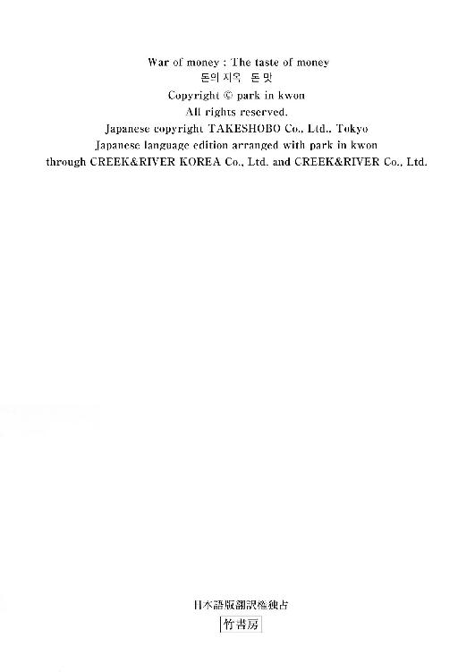
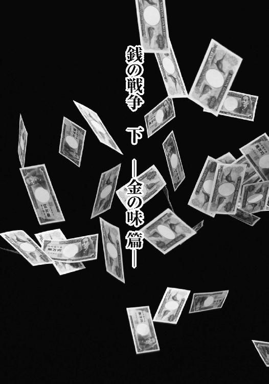

| 銭の戦争 下 (竹書房文庫) | |
| パク・イングォン | |
| (2015) | |
この作品は縦書きでレイアウトされています。
また、ご覧になる機種により、表示の差異が認められることがあります。
一部の漢字が簡略字で表示されていることがあります。

主な登場人物
クム・ナラ.........ソウル大学の数学科を首席で卒業。天才的な記憶力を持つ。
マ・ドンポ.........ヤミ金〈キョンウ商事〉会長。
クム・イスル.........ナラの姉。
ナム・ユンシク.........イスルの夫。
スヒョン.........イスルの息子。
トクゴ・チョル.........伝説の貸金王。

第一章 銭主
「ちっ......」
マ・ドンポは受話器を置くなり舌打ちした。
後頭部に幾筋かの毛を残して禿げ上がった頭を左右に振り、いかにも頑迷そうな目を引きつらせ、いまいましげに太い眉をひそめた。
椅子のひじかけをつかんで思いをめぐらせ、すぐにその手に力をこめて立ち上がると、外出の支度を始めた。
いつもなら、知らない男からの電話など適当にあしらい、早々に切るのだが、今しがたの男は受話器の向こうで懐かしい名前を口にした。
『〝巨手〟トクゴ・チョルさんから、マ・ドンポ会長のお名前をうかがいました。お会いしたいのですが』
ヤミ金業者をやっていて〝巨手〟トクゴ・チョルの神話を知らない者はいない。十万ウォンを合法的に転がして一ヵ月間で一千万ウォンにしたという伝説を耳にしたときは、マ・ドンポも舌を巻いたものだった。
しかし、〝巨手〟も今や過去の遺物だ。名前を出されれば懐かしさこそ覚えるが、わざわざ見知らぬ男に会いに行って時間を浪費するほどの動機にはならない。
にもかかわらず、マ・ドンポは事務所を出た。
なぜなら、赤く酒やけしたザクロのような鼻が嗅いだのだ。金のにおいを。
たとえ相手を知らなくとも、受話器の向こうからは確かな金のにおいが漂ってきた。
そして、今まで彼の嗅覚が間違っていたことは、ただの一度もなかった。
マ・ドンポが喫茶店に入ってみると、頑強そうな体格と落ちくぼんだ大きな目を持つ若者が待っていた。
クム・ナラだ。
マ・ドンポは六十代半ばという年齢にふさわしい余裕をにじませ、ナラをじっくり舐め回すように見つめた。
「俺に会いたいってのは、おまえか？」
「はい」
ナラは立ち上がって会釈した。
マ・ドンポの目に警戒の色が浮かんだ。
「俺はおまえに会ったことなどないはずだが......」
「私もマ会長にお会いするのは初めてです」
「それが、なんでまた急に？」
「私と共同経営をしてみるつもりはありませんか？ 会長が一億ウォンくだされば、一ヵ月で元金に五十パーセントを上乗せして、一億五千万ウォンにしてみせます。もちろん合法的に」
「おまえ、頭がイカれてんのか？」
マ・ドンポは荒々しく言い放った。
「初対面の分際で、突拍子もないことぬかしやがって」
彼は自分の嗅覚が間違っていたことに腹が立った。ぷんぷんする金のにおいに誘われて面識のない男にわざわざ会いに来たというのに、その男が荒唐無稽なたわ言を並べるただのイカれ野郎だったとは。
だが、その頭のおかしい若造の表情は真剣だった。
「やはり信じられませんよね。では、とりあえず十万ウォンだけ貸してください。それをこの場で一分以内に、五十パーセント増しの十五万ウォンにしてさしあげましょう」
「なんだって？」
「一分が長すぎるなら、三十秒で」
「ははは、こいつ......俺はガキと遊ぶほど暇な人間じゃないんだ」
マ・ドンポはせせら笑い、すぐに顔に不快さをにじませて立ち上がった。
「用がないなら帰るぞ」
「私だって、それほど暇なわけじゃないんです」
「......！」
マ・ドンポの太い眉がつり上がり、頰の筋肉がぴくぴくと引きつった。こんな生意気な若造は、一つ二つ殴りつけてもまだ足りないぐらいだ。
ところが、目の前の青二才はそんな自覚がないどころか、まるで相手を小バカにするような薄笑いを浮かべた。マ・ドンポには、その表情が〝この機会を逃せば後悔しますよ〟と言っているように見えた。
「こ......こいつめ」
「とりあえず、十万ウォンだけ預けてください。私が触れただけで、五万ウォンの利息がつくんですよ」
マ・ドンポはザクロ鼻をくんくん鳴らしながら、再び席に着き、財布を取り出した。
「おとなをなめてかかったら、痛い目に遭うぞ」
「その代わり、本当に十五万ウォンにしたら、私と一緒に仕事をしましょう」
「その話はあとだ。まずはこの十万を十五万にしてもらおう。ここで、一分以内にだぞ」
マ・ドンポは財布から額面十万ウォンの小切手を一枚取り出し、テーブルの上に置いた。
「小切手ではなく、現金でお願いします」
「現金？」
マ・ドンポは不満顔でナラをにらみつけてから、一万ウォン札を数えた。
「失敗したらただじゃすまねえぞ。ほら、一万ウォン札が十枚だ」
ナラは黙って一万ウォン札をつかみ、一枚ずつ眺め始めた。
マ・ドンポはそんなナラを無言で見守った。
いったいどんな手を使って十五万ウォンに増やすのか気になった。同時に、このまま十万ウォンを持ち逃げされないよう、気を張ることも忘れなかった。
数十秒後、どういうわけか、ナラはあっさりその金を返してきた。
「確かに十枚です。もういいですよ。お返しします」
「ちょっと待て。なんで十万ウォンなんだ？ 五万ウォン増やして、十五万ウォンにしてくれるんじゃなかったのか？」
マ・ドンポの当惑をよそに、ナラはぶつぶつと番号をつぶやきながら、それを紙片に書きつけていく。
「三二〇一二九七ナナダ......〇〇〇七一二〇アママ......一六二四四一七マカザ......」
数字とハングルの番号を十個書くと、ナラはメモを差し出した。
「これが、今、会長がくださった一万ウォン札十枚の紙幣番号です。合ってるかどうか、どうぞお確かめください」
マ・ドンポはいぶかりながら、メモに記された番号と手にした十枚の紙幣の番号を一つずつ照らし合わせてみた。
「......！」
彼はあんぐりと口を開けた。
「わ......わ！ 一文字たがわず、全部合ってるじゃねえか！」
「どうです？ 見物料を五万ウォン取れるだけの芸当と認めてくださいますか？」
ナラは落ちくぼんだ目を見開きながら、笑みを浮かべた。
「もしそう認めてくださるのなら、元金十万ウォンに見物料五万ウォン、合わせて十五万ウォンをお返ししたことになりますよね。私の計算、間違ってますか？」
テーブルに並べた紙幣とメモの数字は、何度見比べても一文字の間違いもなかった。
信じられなかった。
「ど......どうやって一分もかけずに十桁の番号を覚えた？ ただの芸当なのか？」
「芸当というより......実は大学で数学を専攻していました。それから、七年間の獄中生活で貸金業についても学びましたので」
「獄中生活？」
「人を殺したんです。悪徳ヤミ金業者を......」
「......！」
マ・ドンポは冷水を浴びせられた気分で、ナラをじっと見返した。そして、気がついた。
殺人罪で刑務所に行ったこの凶悪な前科者は、トクゴ・チョルの噂を獄中で耳にしたに違いない。その名を餌にして接近し、共同経営の話など持ちかけてきたが、おそらく真の目的は金を奪い取ることだろう。
この男は俺から金をせしめる魂胆なのだ。
「ふん......たった今ムショから出てきた殺人犯と一緒にビジネスをしろって言うのか？」
マ・ドンポは鼻で笑ってみせた。
「しかも初対面なのに......ただ数字の記憶力が人並みはずれてるってだけで、おまえを信用しろと？」
「嫌なら無理にとは言いません。スポンサーはマ会長のほかにもたくさんいるので......」
ナラは未練など微塵もない様子で、勢いよく立ち上がった。
「では......お会いできてよかったです」
ドアに向かうナラの後ろ姿を見て、マ・ドンポは妙な気分になった。
本来なら、俺の鋭い直感でペテンを見破られた若造が、しどろもどろの弁解を真っ赤な顔で並べ立てるのを尻目に、俺のほうが勢いよく立ち上がって店を出るはずじゃなかったのか。
そのとき、事務所で脳裏にひらめいた最初の直感を思い出した。
金！
そう、あれはまさに金のにおいだった。
今にも店を出ていこうとするナラからは、相変わらず金のにおいが発散されている。
「待て！」
マ・ドンポが呼び止めると、ナラは無表情な顔でゆっくりと戻ってきた。
「本当に、合法的に一ヵ月で元金を五割増しにできるっていうのか？」
「その気があるんでしたら、とりあえず一億ウォンほど、試しに投資してくださいよ」
「初対面の前科者にか？」
「どうせ貸金業は〝人間投資〟じゃありませんか？」
貸金業は人間投資だ！
それが伝説のトクゴ・チョルの口癖だということは、マ・ドンポも知っていた。
長くは迷わなかった。
「ふざけたこと言いやがるな。俺がそんな危険にわが身をさらすと思うか？ 初対面の奴に一億もの大金を投資するとでも思うのか？」
頰を引きつらせながらも、マ・ドンポはすでに決死の覚悟を固めていた。
「だが、まあ、俺が与えるテストに合格すれば、考えてやってもいいぞ」
「今、テストとおっしゃいましたか？」
「そう、テストだ」
ナラはマ・ドンポの向かいの席にもう一度腰を下ろした。
「それはうれしいですね。どんなテストですか？」
ヤミ金業者マ・ドンポは他人を信じない。そして自分の直感さえ手放しでは信じない。
どれほど金のにおいがぷんぷん漂おうとも、ナラを自分の経営する〈キョンウ商事〉の事務所に連れていくまでに三日かけた。
その間、マ・ドンポは、ナラが殺人罪で収監されていたという事実と、ソウル大を卒業したという事実を確認した。さらに、大学でナラの担当教授だったファン・ワンヨンを訪ねた。
大金のからむ話でもあり、マ・ドンポは身元保証を確実にしておきたかったのだが、運よく社会的信用のあるファン教授がナラの連帯保証人を引き受けてくれた。
「手に負えない債務者が三人いる」
マ・ドンポは特注の巨大な金庫の中から書類を取り出し、話を切り出した。
「元金はおろか利子すらも回収が困難になってるんだ」
「それなら、担保物件を売り払えばいいじゃないですか」
ナラはソファにすわり、事務所の中をじろじろ見回しながら答えた。
事務所は質素で、ほかのヤミ金業者のそれと大差ない。接客用ソファとテーブル、そして、見る者を圧倒するほどの存在感を示す金庫。それがすべてだった。こうした事務所にありがちな鉢植え観葉植物の一つも見当たらない。
「担保の価値も下がっちまって、売ることもできねえ。ぐずぐずしてたら取り立てそこねちまった」
「それで、テストというのは、そのたちの悪い三人の債務者から......」
マ・ドンポはナラの察しのよさににやりとした。
「そのとおり。滞納債権を三件分、元金と利子、きっちり耳をそろえて取り返してこい」
「そうすれば、私の能力を認めてスポンサーになってくれるんですか？」
「それは、債権を取り返したあとの話だ。債務者に関する資料はここにある。じっくり検討してみろ」
テーブルの上にぶ厚い書類をどさりと置くと、ナラはすぐに目を通し始めた。
「おまえはどうにもうさんくさい奴だが、おまえの大学の担当教授が連帯保証人になってくれたから、仕事を任せてやることにしたぞ」
「はい」
「俺はな、高額の利子を取り立ててくる奴より、貸した金を期日に確実に回収してくる下働きのほうが優秀だと思ってる。覚えておけよ」
「わかりました。まずは、貸した金をそっくりそのまま返してもらってきましょう」
書類から顔を上げたナラの目は、自信に満ちあふれていた。
＊ ＊ ＊
一人目の債務者、チェ・ジョンギュは、永登浦のドヤ街に住んでいた。
ドヤ街の入り口付近にたむろしていた住人から場所を聞き出して行ってみると、チェ・ジョンギュの住まいは、少し前までナラが過ごしていた牢獄よりも環境が劣悪だった。
一階分の高さを上下に分け、部屋数を倍増させた家。その二階に暮らすチェ・ジョンギュの部屋に入るには、腰を九十度に曲げ、今にも壊れそうな階段をおそるおそる這い上がらなければならなかった。
「チェ・ジョンギュさん」
名前を呼びながら部屋のドアを開けたナラは、何週間も風呂に入っていない人間が発する強烈なにおいに顔をしかめた。
「どなた？」
汚れた毛布の下から寝起きのチェ・ジョンギュが顔を出し、きまり悪そうに体を起こした。
「マ・ドンポ会長をご存じですよね？ あなたが二千万ウォン借りてる貸金業者ですが」
ナラは片手に債務書類を持ったまま、室内を見回した。
成人男性がかろうじて横たわれる一坪ほどの部屋。壁の一面に合板で作った棚が取りつけられ、その上段にインスタントラーメンが二つ、下段にはカセットコンロと汚れたままの食器が乱雑に置かれていた。しかも練炭ストーブから出る煙のにおいが部屋に充満し、まともに息をすることもできない。
この光景からすると、二千万ウォンの取り立てなどできそうにもない。
「す、すみません......」
来訪者の正体を知ると、チェ・ジョンギュは小さくなってうなだれた。
彼の外見は、書類に記載されている三十二歳という年齢にまったくそぐわない。顔は汗と垢にまみれ、髪はべたつき、生気を失った目はおびえたように落ち着きがなく、伸び放題の髭の間から見える唇は震えていた。だらりと伸びた薄汚いシャツの袖からは、貧弱な腕が気力のかけらもなくぶら下がっていた。
「借りたものは、当然お返ししなければならないのですが......」
「今までの元金と利子を合わせた返済総額をご存じですか？」
「そ......それは......」
「金利が年六十六パーセント......つまり月に五・五パーセントなので、すでに二千七百八十万ウォンになってます」
「日雇い労働の身で......今の私にはとうてい払えません」
チェ・ジョンギュはナラが手渡した書類に目を落とし、そわそわと爪を嚙み始めた。
「開き直ろうというおつもりですか？」
「す......すみません」
「なぜ二千万ウォンも借りたんです？」
煙草をくわえたナラの冷たい視線を受け、チェ・ジョンギュは顔を上げようともしない。
「と......友だちと興味本位で花札賭博を......」
「賭博のために借金を？」
「お......お恥ずかしい限りです。気づいたときには、もう手遅れでした」
彼の表情には深い後悔の念が浮かんでいた。
「いっそ、あのとき......儲けた分を全部すった時点でやめるべきだったのに......正気じゃありませんでした」
チェ・ジョンギュは戻ることのできない過去を思ってか、涙をこぼした。
ナラは書類に目を走らせた。
「保証人がお父さまのお名前になっているのですが......お父さまは、息子さんの借金が賭博資金のためだと、ご存じだったんですか？」
「だ......騙しました。父には事業資金に使うと」
「まあ、とりあえずお父さまにもお会いしてみる必要がありますね」
ナラは部屋をあとにした。
これ以上、彼の泣き言を聞いてやる暇はなかった。
「なんだ、これは......」
ナラは今にも脱力しそうになった。
書類の住所を頼りにたどり着いたところは、無許可のビニールハウス地帯だった。木材でおおまかな骨組みを作り、セメントの代わりに布とビニールシートで壁を作った違法な家がずらりと並んでいる。
ナラはそこでチェ・ジョンギュの父親チェ・ムギルに会った。
「息子をとっつかまえて殺してしまってください。あんなろくでもない息子、殺されて当然です」
顔を合わすなりそう言い放った父親の生活ぶりも、一坪あまりの箱部屋で暮らす息子とさして変わらない様子だった。衣服はぼろぼろでみすぼらしく、折れた杖を釘で補修して使っているありさまだ。
だが、骨の浮き出た顔に力なく光る目からは、息子に対する恨みよりも、金を回収に来た取り立て屋への罪悪感が見て取れた。息子が他人から借りた金を返済できずにいるという後ろめたさからか、顔を上げることもできずに地面ばかり見つめている。
ナラは事務的に話を進めた。
「つまり、お父さまも借金の保証人にはなったものの、代わりに支払う余裕もないということなんですね？」
「ごほ......ごほ......道路清掃員の仕事をなんとかこなしていたのですが、足の骨折で働けなくなり、今は無職なんです。ろくに歩けもしない身で、どうやって息子の借金まで返せと......」
「さっき、何とおっしゃいました？」
「あ......足を骨折したと」
「いえ、その話ではなく」
ナラの目が冷ややかに光った。
「先ほど、息子をつかまえて殺せ、とおっしゃいましたよね？ では......本当に息子さんを殺してもよろしいでしょうか？」
「......！」
「もし息子さんを殺してよろしいのでしたら、借金返済の道が開けると思うのですが」
「む......息子を殺すだって？」
チェ・ムギルは自分の耳を疑い、ナラの顔を見つめた。
二千万ウォンの借金のために人を殺す。そんな言葉を平然と言ってのけたナラは、すでに決心を固めているようだった。
その姿は、チェ・ムギルにとって、血も涙もない悪徳ヤミ金業者以外の何物でもなかった。
＊ ＊ ＊
「なんだって！ ジョンギュが死んだって？」
「そうなんだよ」
「なんてこった......親にさんざん心配かけっぱなしで死んじまうなんて」
チェ・ムギルのビニールハウス前にはテントが張られ、酒の席が設けられた。そこには、一人息子に先立たれた父親を慰めようと、弔問客が次々に訪れていた。
ふるまい酒を飲むほどに、弔問客たちの口からは、死んだ息子に対する悪口が吐き出された。
「まったく、あのどら息子ときたら。今までどれだけ親父さんを困らせてきたことか......そうだろ？」
「そうそう！ 日雇いの稼ぎで賭博にはまって、ヤミ金にまで手を出したってんだから」
「その借金を親父さんに丸投げして逃げ出したんだ」
ほとんどがジョンギュの嘆かわしい行状についての話だったが、彼の死を悼む者も少なくなかった。
「だけど、あいつにもプライドがあったのかな。父親にずっと顔を見せなかったのは、漁船に乗ってたかららしい」
「漁船？」
「あいつなりに賭博の借金を返そうと必死になって働いてたんだろうな。ところが、嵐で船がひっくり返っちまったとか」
「半年もたつのに、まだ死体も上がってないらしいな」
「半年たって死体が上がらなけりゃ、それは......百パーセント死んでるな」
「だから、今こうして葬式やってるんじゃないか」
「それが、運の悪いことは重なるもんで、無許可操業の船だったから補償も何もなかったらしいぞ」
「補償どころか、船主さえ行方不明らしいじゃないか」
「おとなしかったジョンギュが犬死にしたってわけだな。犠牲になるのは、たいていああいう奴だけど」
「ひどいよな......チェさんばかり、こんな目に遭って。道路清掃員の仕事一筋で、ジョンギュに......あいつだけに望みをかけて生きてきたってのに......」
「一人息子が賭博に狂うわ、海に落ちて死んじまうわ......」
「ああ、かわいそうに......」
「世の中、不運な奴はどこまで行っても不運なんだな」
「本当だな......」
テントから聞こえてくる弔問客たちの話し声に、チェ・ムギルは大きなため息をつき、遺影の中で微笑む息子を恨めしそうに見つめた。
ちょうど弔問に来た清掃員時代の仲間が、彼のため息を聞きつけて慰めの言葉をかけてきた。
「昔の仕事仲間が香典を集めてきたよ。もちろんスズメの涙ほどだけどな......」
「おい、ムギル。仕方がないよ。希望を持てよ」
差し出された封筒を、チェ・ムギルは恥ずかしそうに受け取った。
「こんなことまでしてもらって......」
「市長もくださったよ」
「し......市長さんまで？」
市長の話が出ると、酒の席がいっそうざわめきだした。
「清掃員をしていたころのチェさんがどれほど評判だったか、おまえら知らないだろ？」
「そうそう！ 明け方から一人で出勤して、あっという間にリヤカーいっぱいのゴミを集めてきたもんさ」
「チェさんのおかげで、あそこらへんの国道には落葉一枚、吸い殻一つ落ちてなかったよな」
「足が悪くなって働けないってのは、何とも残念だよ」
チェ・ムギルはいたたまれない気持ちになった。彼らが酒に酔って口にする言葉の一つ一つに、どきまぎせずにはいられなかった。
弔問はさらに続いた。
「町内会からも、少ないですが、ご霊前にお供えくだされば......」
「チェさんが町内の清掃をしてくださって助かりましたよ」
「あの......セマウル協議会の会長と組合のオ組合長からです......」
香典袋が一つずつ積み上げられるたび、チェ・ムギルは今まで生きてきた人生が一年ずつかき消されてゆく気がした。
慰めの言葉の一つ一つに責められている気がした。
財産といえばビニールハウスしかないが、これまで道路清掃員として懸命に働いてきて、人に後ろ指をさされるようなことは何一つしなかったという自負がある。
それなのに、本当は生きている息子の葬儀を営むとは。
この葬式はいかさまだと、彼はいっそ大声で叫びたかった。
遺影の中のできそこない息子は今も厚かましく生きていて、香典で借金を返そうと死んだふりをしているのだと、叫びたかった。
しかし、彼は黙っているしかなかった。このいかさま葬儀を計画したヤミ金業者が彼の隣にすわり、香典を受け取っているからだ。
弔問客たちには、ヤミ金業者男のことを葬儀の手伝いに来た甥だと紹介してある。
彼の名前はクム・ナラといった。
「どうぞ」
チェ・ムギルは受け取った香典を一つ残らずナラに手渡した。
「香典、全部で、二千八百二十万ウォンです」
「大したものですね。日の当たらない場所で貧乏な清掃員として一生を送ってきて、マイホームさえないというのに......」
ナラは金額を確認し、満足そうに微笑んだ。
「予想以上に大きな額が集まりましたね。これは、今までずっとチェさんが善良に生きてきた証拠でしょう」
「......」
チェ・ムギルは歯を食いしばるしかなかった。
ナラの言うように誰に恥じることなく生きてきた人生が、たった二千八百二十万ウォンのために砕け散ってしまった。そのことがこの上なく情けなかった。
「あんたもわかってたんだろ？」
「何の話です？」
「いくらぐらいの香典が集まるか......」
チェ・ムギルは軽蔑の視線でナラをにらみつけながら言った。
「だからこそ息子を殺して香典を集め、それで借金を返せと持ちかけたんだろ？」
「......」
「ヤミ金業者ってのは、香典がどれくらい集まるか、事前に調べて把握しておくものなのか？ あんたみたいに？」
ナラは否定しなかった。確かにいかさま葬儀を執り行うにあたって、あらかじめチェ・ムギルの評判を聞き込み、息子のジョンギュが死んだ場合に弔問に訪れそうな人物のリストを作成した。それもそのはず、いかさま葬儀こそチェ親子が金を稼げる最終手段だったのだ。
チェ・ムギルは、これ以上悪徳ヤミ金業者の相手などしたくない、とでもいうようにナラに背を向けてすわった。
「とにかく、借りた元金と利子、合わせて二千七百八十万ウォン。香典を持って消えてくれ」
「それはできませんね」
「......！」
「このまま受け取ると、詐欺になります」
「ど、どういうことだ......？」
チェ・ムギルは理解に苦しんだ。
「香典をくださった方に返してきてください。名簿に記載した金額のとおり、全員に」
ナラは香典をチェ・ムギルに差し出した。
「一軒一軒、訪ねていってお返しするんです」
「そ、それじゃ、なんで息子が行方不明になっただなんて芝居を打たせて、死んでもいない息子の葬式までさせたんだ？」
チェ・ムギルは葬儀の最中ずっと自責の念で苦しんでいたことが悔しくなった。
「香典で借金を返せるようにと、いかさま葬儀を企んだんじゃなかったのか？」
問いつめるチェ・ムギルに、ナラはきっぱりと答えた。
「これが、罪に問われない唯一の方法なんです」
＊ ＊ ＊
丘の上にあるスラム街へと続く階段は、一段上るごとに膝が悲鳴を上げるほど、杖がぶるぶると震えるほどの急勾配だった。そのせいで足の骨折のあとがうずき、息も絶え絶えになる。
それでも、チェ・ムギルは弱音を吐くことなどできなかった。
葬儀に訪れた人々の大半は、貧しい者たちだった。たかが三万ウォン、五万ウォンの香典だとしても、彼らにとってはようやく捻出した大金なのだ。
わが身がどれほど痛んでも、自分に情けをかけてくれた彼らに対して、犯した罪を償わなくてはいけない。
その一心で、チェ・ムギルは階段を上り続けた。
「なんだって、チェさん！ 行方不明だったジョンギュが生きてただって？」
「つまり......船がひっくり返ったんじゃなかったってことか？」
「よかったな！」
ジョンギュが生きていたと聞いて、オ・ファソンとパク・ジョンソクは目を丸くしながらも歓喜の声を上げた。
そんな旧友二人の姿を見たチェ・ムギルは、金のために息子の生死を偽ったことを心から申し訳なく思い、身の置きどころさえなかった。
「ふ......船が転覆したのは本当なんだが、か......海流に流されて、どこかの島に流れ着いてたみたいだ。恥ずかしくて連絡もできなかったと......」
一度ついた噓は際限なく膨れ上がるばかりだった。
「海で行方不明になってから半年以上、何の連絡もなかったから、当然あいつが死んだものだと思って......葬式まで出したんだが......」
ムギルの目に涙が浮かんだ。
ずっと家族のように過ごしてきた仲間を騙してまで金を求めた。そんな自分の行動に対する後悔の涙だった。
「くそ、あいつめ、なんだって生きて帰ってきやがったんだ。どうせ海に落ちたんだ......そのままくたばっちまえばよかったんだ」
「ははは......なんだってそんな憎まれ口をきくんだ？ たった一人のわが子じゃないか」
「そうだぞ！ 死んだと思ってた息子が生きて帰ってきただけでも儲けもんだろ」
オ・ファソンとパク・ジョンソクは、まるで自分の息子のことのように喜んだ。
そんな彼らにムギルは、封筒を一つずつ差し出した。
「ところで......これ、五万ウォンずつなんだが、受け取ってくれ」
「え？ 何の金だ？」
「あんたたちが香典でくれた金さ。息子が生きてたんだから、返すよ」
「......」
二人の旧友は目の前の封筒を見つめたが、すぐにムギルに押し返した。
「おい！ いくらなんでも、一度やった香典を返してもらうなんてできないだろ！」
「いや、それでも、今回は返すのが道理だろ」
しかし、二人は笑い飛ばすように封筒をムギルのポケットに突っ込んだ。
「ご祝儀だと思って、受け取れよ」
「そうだよ！ 死んだ息子が生き返ったんだから！」
「ご......ご祝儀？」
ムギルは流れる涙をぬぐおうともせず、二人を見つめた。
「だ......だけど......」
「香典を返してもらうなんて、おかしな話だろ！」
「......」
旧友たちはムギルが感動の涙にくれていると思い、その肩を抱きしめた。
だが、それは、本当は懺悔の涙だった。
香典を返すために訪ねた先々の反応は、ほとんどが同じようなものだった。
清掃員時代の同僚は、生活の先行きが不安だから〝先払い〟しておく、と言って受け取らなかった。将来、ムギルの家で不幸があったときに出す香典を、今のうちに渡しておこうというのだ。
市役所では、骨折事故の見舞金を支給しようと思っていたという市長からの伝言があり、香典の返却を断られた。
結局、返そうとした香典は、ほとんどすべてムギルに戻ってきたのだった。
「当然、こうなると思っていました」
ナラは淡々とそう言い、チェ親子が釈然としない顔で差し出した金を受け取った。
「韓国は昔から東方礼儀の国と言われているじゃないですか。仮に死人が生き返ったとしても、いったん出した香典は引っ込めない......そうした基本的な礼儀が生きている国なんです」
ナラは金を数え終えると立ち上がった。
「あなたたちは合法的に受け取った香典で借金を全額返済されました。もうお会いすることもないでしょう」
「あ......ありがとう」
チェ・ムギルは震える手でナラの腕をつかみ、頭を下げた。
息子を殺して借金を返そうと言われたときは、ナラが血も涙もない悪党に見えた。けれども、すべてが終わってみると、彼は暗黒の世界にいた自分たちに手を差し伸べてくれた救世主だった。
一方のナラは、チェ・ムギルの顔に不幸な日々の痕跡を見出し、父を思い出していた。
父の顔にも同じような深いしわが刻まれていた。そして、借金地獄に陥って何も手につかないほど無気力になっていた。
ナラが借金の完済を告げると、チェ・ムギルは心からの安堵を見せた。その顔を見て、ナラは自分も胸をなで下ろしていることに気がついた。債務者チェ・ムギルの姿が、いつしか父と重なって見えていたようだ。
「あんた、葬儀のあとにそのまま香典を持って帰ってもよかったろうに......」
「チェさんは〝金の味〟を知った連中とは違うようでしたから......」
「金の味......？」
「あるんですよ、そんなものが」
ナラは落ちくぼんだ大きな目を光らせ、薄笑いを浮かべた。
彼にとって、チェ・ムギル、ジョンギュ親子は〝戦争〟の相手ではない。
過酷な借金地獄を経験し、刑務所で荒涼とした日々を送りながら、彼が恨みを抱いた相手は、〝金の味〟を知っている連中だった。
金への執着心のため、人間であることを放棄し、獣のように弱者を食い物にする奴ら。
金で金を稼ぎ、腐敗した金の中でのうのうと暮らしている奴ら。
他人の血と涙で濡れた金を抱き、歓喜に小躍りする奴ら。
そういう奴らこそがナラの標的だ。
だから、チェ・ムギルに時間を与えた。彼が苦労して香典を返しに行き、再び受け取ってくるまで、じっくり待ってやったのだ。
「チェ・ジョンギュさん」
ナラは、うつむいたまま見送りに出てきた息子を見つめた。
「あなたはもう、今までのあなたとは違うんですよね？」
「......」
「数日前、確かにあなたの葬儀を営んだのですから」
「......」
チェ・ジョンギュは、ナラの目をまっすぐ見て自分の言葉で答えたかった。だが、こぼれる涙のせいで、顔を上げることができなかった。
「たった今、生まれ変わったと思って、やり直すんですよ」
ナラの手がジョンギュの肩に置かれた。
「これからはヤミ金や賭博には絶対に手を出さないこと。また同じことを繰り返せば、次はありませんよ。あなたは一度死んだのです。もう一度死ぬわけにはいきませんからね」
立ち去りかけたナラが、最後に一言つけ加えた。
「あなたの命は、すでに担保に使ってしまいましたから」
「ク......クムさん」
チェ・ジョンギュは、消え入るような声でやっと言った。
「う......生まれ変わる機会をくださって、ありがとうございました......。今度は失敗しないよう、まじめに生きていきます......」
彼は、去りゆくナラの姿が見えなくなるまで、頭を下げたまますすり泣いていた。
＊ ＊ ＊
「チェ・ジョンギュさんの元金と利子、二千七百八十万ウォン......全額回収しました」
ナラは事務所のデスクに金を積み上げた。
目の前の札束にマ・ドンポは目を見張った。
「お......おい！ どうやって、文なしの貧乏人からせしめてきたんだ？」
「財産より大切なものが〝人間の担保〟でしょう？ 会長は人間を見ずに、財産ばかりごらんになっているようですよ。さて、これで一つ目のテストは合格ですよね？」
ナラは自信たっぷりに言った。
「では、二つ目のテストに取りかかりましょうか」
第二章 三つのテスト
「ううむ。こいつ、尋常じゃないな」
マ・ドンポはナラが回収してきた金を見つめ、独り言をつぶやいた。
不良債務者チェ・ジョンギュから元金と利子を取り立てたのには恐れ入ったが、それよりも、目の前に積み上げられた一万ウォン札の山のほうが気になって仕方がなかった。
ソウル大数学科を首席で卒業、殺人、投獄と、尋常でない経歴の持ち主であるクム・ナラは、金を整理する方法までも尋常ではないのだ。
「世宗大王の顔の向きが全部そろってる。新札ならまだしも、使い古しの紙幣をこんなふうにまで......」
ぱらぱらと紙幣をめくっていた彼は、息を吞んだ。
「なんてこった。紙幣番号までそろえてやがる。数の小さいほうから順番に......ハングルの記号までカナダラ順だ。ここまで来ると〝レインマン〟の域じゃないか？ あいつは紙幣レインマンだな」
マ・ドンポは取り立てに出かけたナラを思った。今ごろは貴金属店〈黄金堂〉で二人目の不良債務者に会っているはずだ。
果たして、今度も元金と利子を全額回収してくるのだろうか。
＊ ＊ ＊
「なんだ？ ヤミ金業者か？」
キム・ソンゴンは眉をひそめた。その拍子に眉間のほくろがゆがんだ。
「マ会長の命令で来たんだな？」
「はい。合意した利率が不服だとおっしゃって急に利子の支払いを中断するのは、契約違反ですよ」
目の前にいる金髪のゴリラみたいな中年男性に、ナラはきわめて事務的に話し始めた。
ヤミ金業者は債務者との対話で感情に走ってはいけない──それはトクゴ・チョルの教えの一つだ。
黄金堂の店主キム・ソンゴンは、かつて韓国相撲をやっていたことを物語る丸太のような腕を振り上げると、ショーケースをどんと叩き、ナラをにらみつけた。
「この野郎！ おまえなんかに法律がわかるってのか？」
キム・ソンゴンは抑揚も感情もないナラの声に腹が立ち、贅肉に埋まった短い首に青筋を立てて怒鳴り散らした。
「年利が六十六パーセントを越えないように、貸付業法が変わったじゃねえか！」
「ですが、それはすでに金を使ったあとにできた法律です」
「どっちにしたって、年百十二パーセントなんていう暴利、俺はもう払えねえよ！」
キム・ソンゴンは法律に明るいらしく、一歩も引かずに言い立てた。
彼の言う貸付業法は、二〇〇二年十月二十七日に、消費者金融の合法化という目的と、消費者保護という名目で施行された法律で、正式名称を『貸付業の登録及び金融利用者保護に関する法律』という。
この法律について、ナラの師匠であるトクゴ・チョルは〝不完全な法〟だと、懐疑的意見を述べていた。
「これは言ってみれば、年利を六十六パーセント以下にするのがいいか、罰金三千万ウォンを払うのがいいか、という話だ。まったく、デスクワークしか能のない公務員のやることと言ったら、みな同じだな」
刑務所内で貸付業法の説明をしていたトクゴ・チョルは、表情を険しくした。
「金貸しは一種の〝サービス業〟だ。市場経済の論理が適用される世界なんだ。ＩＭＦ危機を経て、多くの資金が貸金業に流れ込んできたために、貸す金が増えた。そのくせ金を借りる人は限られている。どうなると思う？」
「市場は供給過剰になるでしょうね」
「そう。値崩れが起きるだろう。貸金業者にとって、それが何を意味するかわかるか？」
「金利が低くなりますね」
「こいつめ。高学歴なだけあって頭の回転が速いな」
トクゴ・チョルは腕組みをしながらうなずいた。
ＩＭＦ危機以降、投資先を探していた市場の資金が貸金業に流れ込み、その結果、貸金業者が雨後のタケノコのように増え始めた。彼らは熾烈な競争を生き残るために必死になり、それは貸付に適用する金利が徐々に下がる結果につながった。
ところが突然、貸付業法が国会を通過したのだ。
「消費者金融、貸金業と言えば、どうしたって否定的なイメージが強い。そこへ持ってきて金利を法で定めてやったものだから、彼らはあえて金利を下げる必要がなくなったんだ」
腕枕をして寝そべりながら話を聞いていたナラは、苦笑いを浮かべた。〝カード大乱〟の根本的な原因を作り上げた負債国家なら、その程度のことは朝飯前だろう。
「問題となるのは、金利が上がることばかりじゃない。六十六パーセントという合法的な基準値が作られたことで、違法なケースが量産される結果になった」
「どういうことです？」
トクゴ・チョルは不機嫌そうに言った。
「わからんか？ 金利六十六パーセントまでを合法と定めたら、七十パーセントも違法だし、三百パーセントも違法だ。どうせ違法なら、どっちが儲かる？」
「......！」
合法の境界である金利六十六パーセントは、皮肉なことに、金利七十パーセントの消費者金融と、三百パーセントのヤミ金を、同じ〝違法〟という一つの枠に押し込めてしまったのだ。どのみち違法と責められるなら、七十パーセントの金利で営業する業者などいない。
トクゴ・チョルは、情けない、とでも言いたげに舌打ちした。
「こんな法を何と呼ぶか、知ってるか？」
「何ですか？」
「どアホウ、だ」
とはいえ、トクゴ・チョルは口では法律をこき下ろしながらも、ナラには法律を徹底的に学ぶよう指導した。
法を知ってこそ、法の目をくぐり、法を利用することができるからだ。
「わかったら、とっとと失せやがれ！」
キム・ソンゴンはあくまでも法を楯に取る戦法で攻めた。ヤミ金業者のチンピラ風情が法律など知るわけがない、と考えたのだ。
だが、ナラの声は相変わらず冷静なものだった。
「問題があるなら、〝借入解約〟をすればよろしいかと」
「借入解約？」
「もちろん、今まで滞っていた元金と利子を借り入れ当時の金利のままで返してくださったあとで、の話ですが。法律がお好きなようなので、法律どおりにしていただければと思います」
「......！」
キム・ソンゴンは言葉を失った。無知なチンピラだと思っていたナラの口からそんな言葉が出てきては、驚かないわけがない。
（こいつ......法律を知ってるのか？）
しかし彼も、こと金に関しては百戦錬磨を自負する男だった。
「ふざけた野郎め！」
理性的な対処法に効き目がないなら、感情的な対処法に切り替えるのが定石だ。
「俺がカモられると思ってるのか、この野郎！ 今まで無理やり取り立てやがった違法な超過金利分、つまり四十六パーセント分を返してくれるまでは、一ウォンも払わないぞ！」
超過金利。
それは、貸付業法の施行以降、ヤミ金業者がもっとも恐れるはずの単語だ。
「悔しかったら訴えろよ！ そうすりゃ、俺も訴えてやる！」
「......！」
ナラが黙り込むと、キム・ソンゴンはすかさずナラのソファに移動し、すぐ隣に腰を下ろした。
「マ会長が一ウォンの税金も払わずに高利貸しで稼いでること、みんな知ってるんだぜ」
こっちは脱税の事実まで握ってるんだ、とっとと失せやがれ、のソフトな言い方だ。
「脅迫のように聞こえますね」
ナラはそう言って微笑んだ。
その反応を見て、キム・ソンゴンは嫌な頭痛を覚えた。〝違法〟と〝告訴〟、さらには〝脱税〟を持ち出して脅してみたが、目の前の男は落ちくぼんだ目をきらきらと輝かせて微笑んでいる。その笑顔にキム・ソンゴンは怒りがこみ上げた。
「脅迫は、マ会長のほうが先にしたんじゃないか。おまえみたいなわけのわからん奴をうちの店に送ってよこすのが、脅迫じゃなくて何だってんだ？」
彼は感情を爆発させてまくしたてた。
「おまえ、使い走りだろ？ それなら早く消えちまいな。おまえに解決できることなんて、いくら探したってありゃしないんだ」
それでも沈黙したままのナラを見て、彼はさらに大きな声で怒鳴りつけた。
「何してんだよ？ 営業妨害だからとっとと失せろって言ってるだろ！」
ナラは静かに席を立ち、黄金堂をあとにした。
キム・ソンゴンは店に一人になったとたん、口元に嘲笑を浮かべた。
一つの事実を再確認できた。やはり韓国では声が大きいほうが勝つのだ。
「つまり、違法レベルの高金利には一ウォンも出せないと？」
ナラの報告を聞いたマ・ドンポは、キム・ソンゴンの金髪頭を思い浮かべ、悔しさにまかせて煙草をふかした。
「くそっ！ たちの悪い奴に引っかかっちまったな。あんなろくでなしに金なんて貸すんじゃなかった。貸してほしいときは〝金利はいくらでもいいので〟なんてぬかしたくせに、用が済んだら知らんぷりかよ......」
「......」
「一つ目のテストは見事にパスしたが、今回はだめそうだな」
マ・ドンポは、何やら考え込んでいる様子のナラを見て、せせら笑った。
ヤミ金業界で育った自分でさえ諦めた不良債務者からの取り立てだ。消費者金融についてたかだか数年、それも刑務所で学んだだけの若造にやってのけられるわけがない。
とはいえ、彼としては損はない。叩いたところで埃しか出ないはずのチェ・ジョンギュから、元金と利子をきっちり回収できただけでも有益だった。
「これで諦めるんなら、もう用はないから出てけ」
「諦めるだなんて。金の味を知っている相手に出会って、わくわくしてるっていうのに」
ナラは落ちくぼんだ目を輝かせ、にっと笑ってみせた。
「考えがあります」
「考え？」
席を立ったナラの表情は自信に満ちていた。
「数日だけ、待ってください」
＊ ＊ ＊
「うーん......」
マ・ドンポは難しい顔をし、腕組みをして腰を下ろした。
ここ数日のナラは、あれほど大口を叩いたというのに、黄金堂に行く気配も見せず、ただ事務所のソファにすわって時間をつぶしているのだ。
さらに腹立たしいことに、ときどき何の説明もなしにふらりとどこかへ出かけていく。
ナラの行動を探るためにこっそり尾行してみると、あきれたことに、あちこちの喫茶店に出入りしてはウェイトレスにちょっかいばかり出していた。
マ・ドンポの心中は穏やかではなかったが、実際のところ理解できない話ではない。
いかがわしい男ばかりの刑務所で何年もの月日を浪費し、やっと出てきた身なのだから、やはり女も恋しかろう。
しかし、理解できないのは、ナラの女の好みだった。
ナラはまだ三十代に差しかかったばかりだ。それなのに彼が手を出す相手のほとんどが、場末の喫茶店の、それも四十歳を目前にした女ばかりだった。
きのうは、宿泊先の旅館に戻らなかったところを見ると、ウェイトレスと夜どおし楽しんだに違いない。
他人の私生活に干渉する気はないものの、マ・ドンポはそんなナラの行動に気分を逆なでされるばかりだった。
「おまえ、いつまでだらだらすわってんだ！ 今すぐ金を取り立ててこいよ！」
見かねたマ・ドンポはついにナラを怒鳴りつけた。
「今後も喫茶店のウェイトレスの尻を追っかけ回すだけなら、ここから出てけ！」
「もう少しだけ、待ってくださいよ」
「何を待つんだ！ こんなやり方じゃ......」
マ・ドンポの怒鳴り声はそこで途切れた。電話のベルが鳴ったのだ。
「キョンウ商事です」
『クム・ナラさん、いらっしゃいますか？』
受話器の向こうから、ひどく鼻にかかった声が聞こえてきた。
「なんだよ、女から電話まで来やがって。よくやるよ」
マ・ドンポは頰を引きつらせながら、受話器をナラに手渡した。
ナラは彼を無視したまま話し始めた。
「うん。うん。わかった」
短い通話を終えるなり、ナラがコートを引っかけて出かける準備をするので、マ・ドンポは目をむいた。
「おい！ 今度はどんな女の尻を追っかけに行くんだよ！」
「女じゃなくて男です」
「男だと？」
「例の金を取り立てに行くんですよ」
そう言って微笑むナラの表情に、マ・ドンポは確固とした自信を見て取った。
それにしても、数日間、何の準備もしなかったのに、いったいどうやって黄金堂の店主キム・ソンゴンから金を回収してくるというのか。
マ・ドンポにできるのは、待つことだけだった。
＊ ＊ ＊
「こんにちは」
店に入ってきたクム・ナラを見るや否や、キム・ソンゴンの顔は青ざめた。
久しぶりに高価な宝石を求める客が訪れているタイミングで、よりにもよって借金の取り立てがやって来るとは。これではまとまりかけている大きな商談も流れかねない。
キム・ソンゴンはいらだちをどうにか隠して淡々と言った。
「何しに来た？」
ナラが商談成立を知れば、きっとその儲けから一部でもせしめようとするに違いない。
「いくらうるさく言っても無駄だぞ。とっとと失せろ。おまえみたいなチンピラに用はねえよ」
ナラはどこ吹く風で、ショーケースの前に置かれた椅子に腰を下ろした。
隣の席では、女性客がケースから取り出された宝石を選んでいる。
「今日は、金の話で来たんじゃありません」
「金の話じゃない......じゃあ、なんだよ？」
「宝石を一ついただこうかと。実は姉の誕生日が近いんです。思い切ってダイヤモンドの指輪でも買ってあげたいんですが......」
ナラは女性客の前に並べられている商品に目をやり、巨大な宝石を一つ手に取ると、いろいろな角度から眺め始めた。
「うわ......これがティアドロップってやつですか？」
「あっ！」
キム・ソンゴンの顔から血の気が引いた。ナラが持っているのは五千万ウォンのダイヤモンドの指輪だった。
「これ、相当高いんでしょうね」
「触るな、バカ！ こちらのお客さまが選んだものだ！」
「私も客ですが」
キム・ソンゴンにとっては上客のほうが大事だ。彼はナラの隣にすわっている女性客の顔色をうかがった。
「まあ！ なんて人なの？」
女性客はひどく鼻にかかった声で言うと、自分の宝石を奪われたとでも言いたげな表情でナラをにらんだ。
彼女の表情を見て、キム・ソンゴンは確信した。この礼儀知らずのヤミ金業者さえいなければ、五千万ウォンの宝石が売れるだろうと。
それにはまず、ナラを店の外へ追い出さなくてはならない。
そのナラは、ますます態度が厚かましくなるばかりだった。
「ところで......これ、偽物じゃないですよね？」
ナラは指輪に「はあっ」と息をかけ、薄汚れたコートでぬぐった。
「お！ 磨いてみると本当にきれいですね。これだから女性たちはティアドロップダイヤに惚れ込んでしまうんだな」
女性の目つきが一段と険しくなった。これ以上ナラを放っておいては、彼女はせっかく気に入ったダイヤを諦めて帰ってしまうかもしれない。
不安がつのるキム・ソンゴンは、次の瞬間、息が止まりそうになった。なんとナラが、ダイヤを口に運ぶという暴挙に出たのだ。
「ほんの少しだけ嚙んでみてもいいですか？ 本当のダイヤは嚙んでも傷がつかないそうですが......」
「あ......やめろ、バカ！」
高価な指輪がチンピラの汚い口に入るのだけは阻止しなければならない。キム・ソンゴンはとっさにショーケースを乗り越え、ナラに飛びかかった。
「それがいくらかわかってんのか！ 早く返せ！」
「きゃあっ！」
キム・ソンゴンがナラの胸ぐらをつかんだ瞬間、店内の時間が止まった。店主も客もヤミ金業者も、その場に凍りついた。
「げ......げほっ！」
ダイヤモンドに嚙みつこうとしていたナラは、キム・ソンゴンに飛びつかれた拍子に、指先でつまんでいたそれを口の中に落としてしまったのだ。
ごくり......。無情な音とともに、指輪はナラの喉を下ってしまった。
信じがたい光景に、キム・ソンゴンは悲鳴を上げずにはいられなかった。
「うわあ！ 五千万ウォンのダイヤを飲み込みやがったな！」
ところが、相手に猛然と食ってかかったのはナラのほうだった。
「おいっ！ いきなり飛びかかってくるから、飲み込んじゃったじゃないか！」
キム・ソンゴンは啞然とした。
「な......何？」
「ど......どうしてくれるんだよ。腹の中まで入っちまったみたいだ。ここで吐き出すわけにもいかないし」
ナラは口の中に指を突っ込むまねをしながら困った顔をした。
しかし、その困惑の表情は明らかに作り物めいていた。まるで滑稽な状況を楽しむかのように、口元がかすかにゆるんでいる。
「ふざけた野郎め！」
キム・ソンゴンはこらえきれずに再びナラの胸ぐらをつかんだ。戸惑った面持ちで男たちを見つめる女性客のことなど、もはや眼中になかった。
「あの程度のはした金を返さなかったからって、どかどか店に押しかけてきて数千万ウォンのダイヤを盗もうってのか！」
「盗むだなんて」
興奮したキム・ソンゴンとは対照的に、ナラはあくまで冷静だった。
「不測の事態で飲み込んでしまったのも、盗んだことになるんですか？」
「こいつ......」
キム・ソンゴンはすぐにでもナラをぶちのめしてやりたかったが、ぐっと耐えた。
ダイヤモンドを取り戻すのが先決だ。
＊ ＊ ＊
「本当に不思議ですね。レントゲンにも写らないだなんて」
「写らない？」
病院でレントゲン写真を撮ったが、指輪らしき影はないという。キム・ソンゴンは今にも泣きだしそうな顔で医師にすがりついた。
「そんなバカな話がありますか？ よく確かめてくださいよ」
しかし、写真を見つめる医者はすげなく肩をすくめた。
「ごくまれに、飲み込んだ異物が臓器と似通った様相を呈して、画像では見分けがつかないときがあるのですが......でも、今回のケースは違いますね」
医者はナラをちらりと見やり、最後の一言を口にした。
「この方、特異体質のようです」
「飲め！」
キム・ソンゴンの手のひらに山盛りになった錠剤を見て、ナラは不思議そうに尋ねた。
「これ、何ですか？」
「下剤だ！」
キム・ソンゴンはナラの胸ぐらをつかみ、真っ赤な顔でまくしたてた。
「俺の見てる前で出せ！ 腹に入ってるもの、全部出すんだ！」
「見てる前で、ですか......？」
ナラはためらいつつもトイレに入り、言われたとおりにドアを開け放したままズボンを下ろした。
「それにしても、ひどい人ですね。私にも人格やプライバシーというものがあるんですが......」
「ごちゃごちゃ言ってないで、さっさと出せ！」
キム・ソンゴンはこみ上げる怒りを抑え、ナラを急き立てた。そうして便器の横にしゃがみ、ナラが力んでいる間ずっと彼の尻だけを見つめていた。
汚いとは思っても、においを感じる余裕まではない。
とにかくダイヤの指輪だけを探し求め、ほかのものなど目に入らなかった。
「この野郎......ないじゃないか！」
ナラの排泄物をしばらく棒でつついていたキム・ソンゴンは声を荒らげた。
「ダイヤが出てこないぞ！」
「まだ、消化されていないのでしょう」
手を洗いながら、ナラがこともなげに答えた。自分のすべきことをやり終えた、とでも言いたげな、すっきりとした表情だ。
「おい、おまえ！ 正直に吐け！ ダイヤを飲み込んだなんて噓だな？」
ナラの態度が気に入らないキム・ソンゴンは、再び彼につめ寄った。
「小細工を弄して、貸した金の代わりに高価なダイヤでもいただこうって魂胆だろ！ 違うか？」
「何のことですか？」
ナラはいかにも心外そうに言い返した。
「ダイヤを飲み込んだあと、私の体をすみずみまで調べたじゃないですか。ポケットもパンツの中も......肛門までも」
キム・ソンゴンは言葉につまった。
ナラが指輪を飲み込んだとき、店のシャッターを下ろし、ナラの服をすべて脱がせ、どこかに隠し持っていないかと、何時間も費やして身体検査をした。そして、レントゲンや下剤まで動員したが、すべて無駄に終わった。
「私の体のどこからもダイヤが出てこないのを、直接確認したじゃないですか」
「......」
「もう一日、待ってくださいよ。消化が進んで排泄されたら、必ずお返ししますから」
「ふざけんな！ あれがどれだけ高価なものか、わかってんのか！」
キム・ソンゴンは、まったく信用ならないチンピラに目をすえ、心を決めた。
こうなったら、残る方法は一つしかない。
「間違って飲み込んだのが確かなら、窃盗罪にはなりません」
調書を作成していた警察官が首を横に振った。
「ただし、損害賠償を請求することはできますよ」
「あいつ、飲み込んだんじゃありませんよ」
キム・ソンゴンは、焦れったさを隠しきれずに訴えた。
ナラはダイヤを飲み込まずにどこかに隠したに違いない。そう確信して彼を警察署まで引っ張ってきたのだが、予想とは違い、警察官はあきれたような反応を示した。
「しかし、この男が飲み込んでないという証拠もないですよね」
「それは......」
「飲み込むのを見たという証人は、あそこにいらっしゃいますが」
警察官は向かい側に立っている女性を指さした。あの日、ナラが飲み込んだダイヤの指輪を買おうとしていた客だ。
「そうよ。それは私が証言します」
彼女はうなずいて、ナラを恨めしげに見た。
「私が選んだ宝石を、あの男が飲み込んだのよ」
警察官は壁の時計にちらっと目をやり、少し投げやりに言った。
「とりあえずはあの男を信じて、排泄されるまで待ちましょう」
「じゃあ、こいつと二十四時間くっついていなけりゃならないじゃないですか！ 昼夜を問わず、トイレのたびについてくんですか！」
キム・ソンゴンは精いっぱい訴えたが、警察官はもう返事もしなかった。
代わりにナラが陽気な声で言った。
「それが嫌なら、今すぐ私の腹を裂いて探してみますか？」
キム・ソンゴンはぎゅっと目を閉じた。そうしないと、腹の底からこみ上げる怒りをこらえられそうになかった。
「俺の負けだ......」
ナラと向かい合うキム・ソンゴンは、血を吐く思いで告げた。
いくら手を尽くしても、ダイヤは出てこない。警察で言われたように損害賠償の請求も考えてみたが、調べてみるとクム・ナラは財産など何一つない無職のチンピラだった。
もはや負けを認めるしかなかった。プライドがいたく傷ついたが、せめてもの慰めとして、最善の決定を下したのだと自分に言い聞かせた。
「おまえが飲み込んだ指輪の原価が四千三百万ウォン。俺が借りた金は利子をつけて三千五百七十万。マ会長がそれでいいと言った」
「マ会長がそう言ったんですか？」
「だから、俺の債務を差し引いた分を返してくれ」
「返してくれですって？」
ナラがさも楽しそうに聞き返すと、キム・ソンゴンはテーブルを拳で殴りつけた。
「差し引き七百三十万ウォン、そっちが取りすぎだろうが！」
だが、ナラの計算は違った。
「十三日分の追加利息十四万五千二百七十ウォンと、あなたにつき合わされた私の三日分の賃金二十一万ウォン、それらも引かないと」
あまりに堂々と言ってのけるナラに、キム・ソンゴンは腹立ちのあまり身震いした。
「なぜ、おまえの賃金を......俺が？」
「キムさんがちゃんと支払日に返済していれば、私が三日もの間、病院に警察にと引きずり回されることもなかったでしょう。ただ、なくした宝石の弁償さえすれば済んだ話なんです」
「なに......ふざけたこと言いやがって！」
「それが嫌なら、宝石が出てくるまでお待ちになってもよろしいですよ」
ナラは腕組みをして余裕の笑みを浮かべた。
「......」
キム・ソンゴンは頭が割れそうだった。これ以上、この厚かましいヤミ金業者のチンピラといると、またどんな被害に遭うかと恐ろしくなる。いや、それより、あまりにも腹が立ちすぎて倒れるかもしれない。
「わ......わかったよ、このチンピラめ」
「では、ここに署名をお願いします。これで決着がついたことになります」
ここぞとばかりに、ナラは債務返済確認書を差し出した。
キム・ソンゴンは急いで書類に署名した。
「おまえがここから消えてくれればそれでいい。とっとと消えてくれ！」
「了解しました」
ナラは書類を受け取り、席を立った。
そのときだった。
「ううっ！」
ナラが口の中から何かを吐き出した。
その瞬間、キム・ソンゴンは目玉が飛び出そうなほど驚いた。
ナラの手には、あのティアドロップダイヤの指輪があった。
「おい......飲み込んだダイヤじゃないか！ なんでそれが下からじゃなく上から出てくるんだよ？」
ナラは何も答えず、にやりと笑うだけだった。
「う......こいつ。最後までムカつかせやがって、俺を殺す気か！」
すでに書類に署名してしまったので、キム・ソンゴンは怒りをぶつける先もなく、ただその場にすわり込むしかなかった。
「約四千万ウォン相当のダイヤの指輪を現金化した上で、奴に返す分は返しました。残りがこれです」
「......！」
「これで全額回収しました」
マ・ドンポは開いた口がふさがらなかった。絶対に不可能だと思っていたキム・ソンゴンの債権を、まさか本当に回収してくるとは。
確かに数日前、ナラがダイヤの指輪を飲み込んだからそれで借金を返済したことにしたい、という旨の電話がキム・ソンゴンからかかってきた。しかし、ナラの体内からダイヤは見つからなかったはずだ。
そして、つい先ほど、あわてた様子のキム・ソンゴンが再び電話をしてきて、ナラの口からダイヤが出てきたと告げた。
結局のところ、ナラは金を取り立てるためにダイヤを飲み込む芝居をしてみせたのだろうが、どこにそれを隠し、どうやって警察や医師まで騙したのか、肝心なところがマ・ドンポにはさっぱりわからなかった。
「いったいどうやったんだ？」
「最初からダイヤなんて飲み込んでませんよ」
「飲み込まなかっただと？ キムだけじゃなく、店にいた客も、確かに飲み込むのを見たと警察で証言したと聞いたが......」
「ウェイトレスを引っかけたんですよ」
ナラは自分が用いたマジックの種明かしを始めた。
「何度か遊んでやったら、私に惚れたみたいでして」
「なぜそこにウェイトレスが出てくる？」
「作戦に必要だったので、一人、物色したんです」
「さ......作戦？」
「そのウェイトレスを先に宝石店に送り込んで、四千万ウォン相当のティアドロップダイヤを選んで買うそぶりを見せるよう、指示しました」
「それで？」
「続いて私が店に入り、彼女が選んでおいたダイヤをじっくり眺め、誤って飲み込む。でも、実際には飲み込むふりをしただけで、キム・ソンゴンの目を盗んで彼女のバッグに入れたんです。そして、飲み込んだと大騒ぎする」
「......！」
「キム・ソンゴンは、客として来た女をまったく疑いもしませんでしたよ」
とたんにマ・ドンポは全身に鳥肌が立つのを感じた。
（こいつ......ただ者じゃねえぞ！）
ヤミ金王になるためにトクゴ・チョルの下で五年間の修業をしたと初めて聞いたとき、鼻で笑ったものだ。だが今は、その言葉が持つ意味を身をもって感じることができた。
彼はナラに恐怖心を抱かずにはいられなかった。
「では、あとは最後のテストだけですね」
じっと考え込むマ・ドンポに、ナラはすました顔で言った。
「今度はどんな不良債務者ですか？」
第三章 守銭奴
ファッションデザイナー〝アンドレ・カン〟ことカン・ドシクは、どんなときでもピンク系の衣装を身にまとっている。
世間から〝ゲイ〟だと疑われようが、常に女性っぽい服装と言葉づかいを心がけているのは、男性でありながら女性の感性も理解するという〝イメージ〟こそが自分を成功に導いてくれる、と考えているからだ。
実際、カン・ドシクが人々に注目され、その結果、富と名声を手に入れたのは、メディアが広める〝オネエ〟イメージのおかげと言えるだろう。
その日の朝、カン・ドシクがオフィスに出勤してみると、見知らぬ男が待っていた。眉をひそめつつも、彼はすぐに女性的な微笑みで男を迎えた。
相手はヤミ金業者だった。
落ちくぼんでいるがひときわ大きな目を持った男は、クム・ナラと名乗った。
「まあまあ......この子ったら」
カン・ドシクはヤミ金業者のナラの前でも自分のイメージを崩さなかった。
「つまり、マ会長の代理でお金を受け取りに来たってこと？」
「はい」
「あら、どうしましょう。あんたたちが担保にしたあれね、銀行さんが先にすっかり持ってっちゃったの」
担保とは、仁川にある四階建ての建物だ。
カン・ドシクはもともとそれを担保にして銀行から融資を受けており、追加の借り入れが難しいとわかったとき、マ・ドンポのもとを訪れた。有名デザイナーの「もうじき再開発される地域の建物を担保にする」という言葉は魔法のように作用し、簡単にマ・ドンポから金を引き出せた。
ところが、その地域が再開発されるというのがガセネタだと明らかになるや、建物の価値は暴落してしまい、結局、マ・ドンポが何ら手出しができないうちに、担保は銀行の競売にかけられてしまったのだ。
カン・ドシクは手鏡を持つと、白く塗った顔に口紅をさしながら続けた。
「申し訳ないけど、どうしようもないわね。担保もおじゃんになった以上、あたくしのためにも、もう少しだけ待ってもらわないと。あれよ......狎鴎亭洞のコレクションさえうまくいけば......」
手鏡から目を上げたとたん、彼は悲鳴を上げた。
「き、きゃあ！ ちょ、ちょっと、あんた、何してるのよ！」
ソファにすわって話を聞いていたはずのナラが、いつの間にか全裸になって立っていた。どこで見つけてきたのか、股間だけは巨大な葉っぱで隠している。
「な、な、なんで真っ裸なの？ あんた、気は確か？」
「金を返してください」
「は、早く服を着なさいってば！ 気味悪いわよ！」
「じゃあ、金を返してください」
ナラは短く、だが確実に自身の意思を伝えた。
たちまちカン・ドシクの表情がゆがんだ。
「このクソったれ！ キモいんだよ！」
その瞬間、彼はアンドレ・カンのイメージをかなぐり捨てていた。平凡な男カン・ドシクに戻って脱ぎ捨てられた服をつかみ、ナラに走り寄った。
だが、ちょうどそのとき、訪問の約束をしていた女性客がドアを開けて入ってきた。
「こんにちは、カン先生......きゃあ！」
彼女たちは顔を真っ赤にして声を上げた。
ゲイだと噂されているデザイナーのオフィスに全裸の青年がおり、その前には当のカン・ドシクが青年の服を持って立ち、彼女たちのほうに驚き顔を向けているのだ。彼が若い男の服を脱がせたのか、あるいは着せようとしているのか、彼女たちの目にはわからない。
そんな状況を察したカン・ドシクはあわてた。
「あら......お嬢さんたち、どうしてそんな目で見るの？ この男、あたくしとは何の関係もない頭のおかしな人で......」
彼は哀願するような目をナラに向けた。
「あんた、いいかげんにしなさいよ。早く服着ないと、警察呼ぶわよ」
ナラは何も言わなかった。彼の沈黙は誤解を招くのに十分だった。
「うう、出ましょう」
「ああ、いやらしい」
女性客たちはわれ先にと彼のオフィスから出ていった。
無情にも閉じられるドアを見つめ、カン・ドシクは顔をこわばらせた。やっぱり真性のゲイだった、と彼女たちが噂を広めるのは火を見るよりも明らかだ。
彼は受話器を取り上げ、警察署に電話をかけた。どうにかして誤解を解かなければならなかった。
「そうなんですってば！ 借りたお金をしばらく返せない......そう言っただけで、突然オフィスで真っ裸になって......」
カン・ドシクは通報の電話でも自身のイメージを手放さなかった。
「ああ！ いやらしい！ 早く来てください。気が狂いそうだわ！」
結局、ナラは駆けつけた警察官たちに連行された。
「率直に言って、直接的な性的行為をしたわけでない以上、性犯罪にはできませんね」
警察官は落ち着いた口調で状況を説明した。
「現行法では〝淫乱行為罪〟の可能性も考えられますが......局部を隠していたとなると、その適用も難しいでしょう」
カン・ドシクは怒りで顔を紅潮させた。
「この男は処分されないんですか？」
「あえて法を適用させるなら、公序良俗違反で三日ほど拘留処分にすることはできます」
「た、たった三日ですか？」
失望するカン・ドシクを見て、ナラの口元には満足げな笑みが浮かんだ。
まさに予想どおりの結果だったからだ。
＊ ＊ ＊
「やはりカン先生でいらっしゃる」
「今回のコレクション、芸術性の高さに感動しました」
「シンプルなのにクール......まさに先生の集大成ですね」
口々におだてる人々に、カン・ドシクはあえて謙遜して答えた。
「まあ、集大成だなんて......あなたたち、褒めすぎよ」
ファッションショーのリハ日に開いたレストラン・パーティを盛り上げるため、彼は言葉づかいと仕草に女性っぽさを意識的に注入した。業界とメディアの関係者が集まる席なので、彼らに与えるイメージにいっそう気を使う必要があった。
「今回はよりダイレクトでグリッターな方向にアングルを決めて......」
当たりさわりのない挨拶を終え、コレクションについて説明しようとしたときだった。
「きゃあ！」
どこからか悲鳴が聞こえてきた。
レストランにいた全員が何ごとかとそちらを見た。
次の瞬間、カン・ドシク自身も思わず悲鳴を上げた。
数日前にオフィスで全裸騒動を起こした若いヤミ金業者が、またしても同じ姿で現れたのだ。やはり股間だけは巨大な葉っぱで隠している。
ヤミ金業者の首にはメッセージボードがさげられ、そこにはこう書かれてあった。
──この冬を素っ裸で過ごすことになった。返せ！ 俺の金を！
レストランを満たしていた華やかさはあっという間に消し飛んだ。
カン・ドシクは積み上げてきた自分のイメージががらがらと音をたてて崩れるのを感じ、金切り声を上げた。
「きゃあ！ 三日で出てきたと思ったら、またすっぽんぽんで現れて！」
「だから、金を返してください......」
ナラのヌードデモはとどまるところを知らなかった。
警察に通報しても意味がなかった。三日間の拘留を繰り返すだけで、拘留を解かれると間違いなく姿を現すのだった。
ナラはカン・ドシクの自宅前で待ち伏せして子どもたちにも裸をさらしたばかりか、彼の行くところならテレビ局だろうが何だろうが全裸で押しかけるのだ。そうして、真冬の冷たい風にこれ見よがしに全身をぶるぶる震わせる。
「金をください......凍え死にしそうです」
とうとうカン・ドシクは白旗を上げるしかなくなった。
ナラの存在をこれ以上無視していたら、借りた金を踏み倒そうとする恥知らずな人間のレッテルを貼られてしまう。生涯をかけて築いてきたイメージが壊れたら、マ・ドンポから借りた金額を吐き出すよりも大きな損失になる。しかも、このままいったら、数日後に控えているファッションショーまで台なしにされかねない。
「さあ、これが借りた金の元金と利子よ、このおバカ！」
カン・ドシクはナラに向かって小切手の入った封筒を投げつけた。
「それを持って、さっさと消えてちょうだい！ まったくなんて子でしょ！」
ソファにすわったナラは、封筒の中身を確かめると顔をしかめた。
「どうして、これだけなんですか？」
「まあ、何ですって？ この子ったら何を言ってるの？」
カン・ドシクは最後まで自分のイメージを守ろうと罵詈雑言はこらえたが、声はかなり甲高くなっていた。
「今日までの元金と利子、全部払ったじゃない。しめて一億二千三百五十万ウォン！」
「でも、苦痛費もくださらないと」
「交通費ですって？ タクシー代でもよこせってこと？」
「〝交通〟費じゃなくて〝苦痛〟費です」
ナラは足の裏を持ち上げてみせた。青黒く変色している。
「真冬に素っ裸で町をさまようなんて、並大抵の苦労じゃないと思いませんか？ おかげで凍傷になったじゃないですか」
「まあ！ この子ったら、何を言ってるの」
カン・ドシクはあきれ返った。
「あんたね！ 誰があんたに素っ裸で騒ぎを起こせって言ったの？」
「先生があのとき金を返してくれていれば、私が素っ裸になる理由もなかったでしょう」
ナラは指を突きつけながら言った。
「それから、名誉毀損の補償金もください」
「名誉毀損って、何よ？」
「全裸で町を歩き回ることが、どれだけ恥ずかしかったと思いますか？ ですから、私の名誉を毀損した補償もしてくださいってことです」
「ま......まあ！ あんた！ 名誉毀損の補償をしてほしいのは、こっちのほうよ！」
カン・ドシクはこれ以上、ナラの居直りを許すわけにはいかなかった。
「あんたのせいで、どれだけ変な噂を立てられてると思ってるの？」
「仕方ないですね」
ナラは今しがた受け取った小切手入りの封筒を返して立ち上がった。
「では、先生のファッションショーに私も参加させていただくことにしましょう。二日後だと言ってましたね？」
「......！」
ショーの会場に現れるナラの姿が脳裏をよぎり、カン・ドシクは真っ青になった。
首から〝金返せ〟ボードをさげた全裸男が登場したら、ショーがめちゃくちゃになるだけでなく、その様子がメディアによって全国に配信されることになるだろう。
そうなれば、ファッションデザイナー、アンドレ・カンは一巻の終わりだ。
カン・ドシクは、オフィスを出ていこうとするナラの腕をつかんだ。
「わ......わかった！ 要求どおり全額払うから！ だから、どうか素っ裸で現れるって言わないで！ お願い！」
＊ ＊ ＊
「アンドレ・カンさんから、元金と利子で一億二千三百五十万ウォン、それから中間の手数料十パーセント、特別業務の割増料金〇・〇五パーセント、その他もろもろを合わせ、総額一億五千二百五十万ウォンを受け取ってきました」
ナラはマ・ドンポのデスクに一万ウォン札の束をぶちまけ始めた。
すでに二度の成功を目の当たりにしていたマ・ドンポは、山となっていく札束を見てもさほど驚きを示さなかった。
「ところで、おまえはいつもしわくちゃの現ナマでしか集金してこないんだな」
マ・ドンポは札束を一つ一つ手に取って確認しながらつぶやいた。
「一億五千二百五十万ウォンの小切手を一枚切ってくれば、金を数える手間も持ち歩く苦労もないだろうに」
「小切手は追跡される恐れがあります」
ナラはソファに体を預けながら反論した。
「もうすぐマネーロンダリング防止法が改定されて、現金五千万ウォン以上の銀行取引は申告が義務づけられますからね」
「......！」
「マ会長、そんなことから脱税がばれたら一大事じゃないですか」
「な、何の話をしてるんだ！」
マ・ドンポは怒鳴った。脱税しているのは事実だが、ナラに弱みを握られるわけにはいかなかった。
「おい！ 俺は脱税なんかしないぞ」
「それならけっこうです」
ナラはソファの上で背筋を伸ばし、口調をあらためた。
「それより、こうして三つのテストにすべて合格したのですから、約束どおり私のスポンサーになってくださるんですよね？」
「約束どおり、だと？」
指先を舐めながら金を数えていたマ・ドンポは、ナラに目をむいた。
「何をバカなこと言ってんだ！ おれは、そんなアホみたいな約束をした覚えはないぞ！」
ナラは落ちくぼんだ両目を光らせながら顔をしかめた。
「じゃあ、私は一杯食わされたってことですか？」
「俺の命綱である金を、なんでおまえなんかにやるんだよ！ 俺は〝元手〟なんか出す気はない。それも身元がよくわからん奴に......」
「私の身元なら、ソウル大学数学科の恩師ファン教授が保証人になってくださったじゃないですか」
「ちっ、ちっ。大学教授は金持ちか？ 何十億って金が吹っ飛んだら、その教授さまが穴埋めしてくれるってのか？」
「三つもテストをしたのに、まだ私の能力が信じられませんか？」
「たとえ信じたとしても、大金をいじるのは俺だけだ。どうせなら俺の女房が欲しいと言え。だったら、昼間はおまえが女房と遊んで、夜になったら俺に返してくれる形でいいぞ。どうだ？」
ナラはあきれた顔になって煙草に火をつけた。
「女は回せても金は回せない！ これがマ・ドンポさまの座右の銘だ」
「よくも......」
「何だよ......」
ナラは生気のない目をすがめ、煙草の煙を深々と吸い込んだ。
「じゃあ、あのテストは何だったんだ？ 俺をもてあそんだのか？」
「スポンサーにはならないが、ほかのやり方ならある」
「......！」
マ・ドンポは金を数えながら、貪欲そうな目をぐるりと回した。
「給料を出すから、俺の子分として何年か働いてみろ。基本給は月に百五十万ウォン。取り立て一件あたりのボーナスとして、回収した金額の〇・〇一パーセントをやろう」
ナラは黙っていた。
「その代わり、リスクが発生したときはすべておまえが引っかぶる。もちろん、おまえの給料とボーナスは差し押さえだ」
マ・ドンポはずるそうな顔つきでナラの反応をうかがった。
「どうだ？ 嫌か？」
「いいおとなが騙しやがって......」
ナラは気に入らないというように顔をしかめ、燃えていく煙草を見つめていた。
マ・ドンポは彼がその場で拒否しないのを見ると、にやりと笑った。
「ははん、こういう提案もするなってことか......俺だって本当は気が進まないのに、三つのテストを忠実にやり遂げたようだから、重大決心をして門戸を開いてやったんだが」
彼は話している間も金を数え続けていた。一枚一枚と紙幣をめくるごとに、その目に輝きが増していく。
「俺の気が変わって門を閉めちまう前にさっさと決めろ。金を数えるのに気が散る」
しばらく悩んだすえに、ナラは諦めたように息を吐いた。
「わかりました」
ようやく金を数え終わり、マ・ドンポが伸びをした。
「ふう。やっと終わった。指がまだひりひりする。おまえに警告しておくが、次からは絶対に現ナマで集金してくるな。マネーロンダリングは俺が自分でやるから......」
そこで真っ黒になった指を見せた。
「この手を見ろ！ 一億五千万ウォンをいちいち数えたせいで、両手が金の垢で塗りつぶされちまったじゃないか」
彼は巨大なかばんに金を入れ始めると、ナラに大声を上げた。
「何してるんだ！ さっさと掃除でもしろ！」
ナラが自分の子分になったとたん、マ・ドンポの態度はますます横柄になっていた。
「出勤は朝の十時までに。退社時間は決まってない。俺はちょっと出てくるから......」
シャー......。
「......？」
紙幣のつまったかばんを持って事務所のドアを出ようとしていたマ・ドンポは、ふいに聞こえてきた音に振り返った。
なんと、ナラが事務所の床に放尿していた。
「お、おい！ おまえ、掃除しろって言ったのに何やってるんだ！」
「さっき、会長が札束を数えたじゃないですか。紙幣には目に見えない埃が大量に付着していて、それが空中に浮遊するんですよ。でも、人間の尿の中にはマイナスイオンが無限に存在しています。だから掃除するときは、空気中に適度に尿を蒸発させてやるといいんです」
「それ、本当なのか？」
「ご存じなかったようですね。アンモニアには消毒作用があるんですよ」
「ったく......小便臭いガキめ」
マ・ドンポはそう吐き捨てながら事務所を出た。しかし、その口元には笑みが浮かんでいた。かなり使えそうな子分を一人拾ったからだ。
当初、三つのテストをクリアするとは夢にも思っていなかった。
ところが予想を裏切り、ナラは三人の悪質な債務者からあっさり金を回収してきた。
ナラがアンドレ・カンから金を取り立ててきたとき、マ・ドンポは悩むしかなかった。確かに彼の能力は、スポンサーになって自分の下に置きたいほどずば抜けているが、生まれつき他人を信じることのできないマ・ドンポには、それは難しい相談だった。そこで、〝子分〟という苦しまぎれの代案を出したところ、うまいこといったのだ。
大きなかばんを持って一歩、また一歩と歩く彼は、土壇場で発揮される自分の頭の回転のよさに、満足の笑みを浮かべた。
「浮遊する埃......か」
ナラは、金のかばんを持って歩いていくマ・ドンポを窓から見下ろし、冷笑した。
「小便をするっていう行為はな、動物が自分のテリトリーを示す方法だ。つまり、ここは俺のテリトリーになるってことさ。いつになるかはわからないけどな」
スポンサーになってほしいという提案をマ・ドンポが黙殺するだろうと、ナラは初めから予想していた。むしろ、そうならなかったらどうしようかと心配までしていた。
幸いにもマ・ドンポは、トクゴ・チョルが記憶していたとおりの人間だった。
人を信じられず、金に心を奪われてもがく......その姿にナラはほくそ笑んだ。
「ラッキーだったよ。あんたが金の味に狂ったくず野郎でいてくれて」
＊ ＊ ＊
罪を犯し、獄につながれて時間が止まっている者にも、冬は間違いなく訪れる。刑務所の空にも白いものが舞い始めた。
「もう、六ヵ月が過ぎたのか」
鉄格子の外に広がる雪景色を眺めていたトクゴ・チョルは、出所したクム・ナラを思い出していた。
金貸しのノウハウを教えてくれたら、出所後に大金を稼いで一年以内に監獄から救い出す。そう約束した弟子のクム・ナラが満期出所してから、気がつくと半年が過ぎていた。
トクゴ・チョルは今も、試験勉強のためという名目でナラと二人で使っていた独房にいる。高校卒業程度認定試験がまだ残っているから、という口実で居すわっているのだ。
このところトクゴ・チョルは、ぼうっと鉄格子の外を眺める時間が増えていた。
もとより一人で過ごすことが好きだったので、寂しさは特に問題にならないが、何となくナラに対して恨めしさを感じていた。
机の上に積まれた債務関係の本を見やりながら、ナラへの恨みごとをつぶやく。
「あいつめ......塀の外に出たのなら、たまには顔を見せて、シャバの新鮮な空気に触れさせてくれてもよさそうなものを」
他人に情愛など持たないトクゴ・チョルだったが、何年も一つの部屋で苦楽をともにしてきたクム・ナラにだけは格別の思いを抱いていた。
それなのに、出所後六ヵ月たっても、ナラは一度も姿を見せようとしない。
時がたつにつれ、トクゴ・チョルは不安を覚えるようになった。
一年後に出所させるという約束が噓かもしれないという考えがよぎるたびに、あわててかぶりを振って否定した。
約束の期間はまだ半年も残っている。一文なしのクム・ナラが釈放に必要な資金二十億ウォンを作るのは、容易ではないだろう。
トクゴ・チョルは弟子のクム・ナラを信じていた。
＊ ＊ ＊
「絶対にだめだ！」
ナラが事務所に寝泊まりして宿代を浮かせたいと訴えたところ、マ・ドンポはものすごい剣幕で拒絶した。
なぜだめなのか、ナラには理解できなかった。
「私はどうせ身一つです。寝るのは事務所で十分ですし、それに夜間の警備も必要なくなるじゃないですか」
「だめと言ったらだめだ！ おい、事務所は事務を行う場所だ。金を稼ぐ神聖な場なんだぞ。そこが寝室になって床におまえのあそこの毛が飛び散るなんてごめんだ！」
マ・ドンポはいらいらした顔でデスクを離れると、金庫の扉を開けた。その中から一万ウォン札の束を一つ取り出し、ナラの前に投げた。
「まずはそれで長く泊まれるところを確保しろ。月給からいくらかずつ引くから、そのつもりでいろ」
ナラは信じられない思いで会長を見つめた。
これがマ・ドンポだろうか。妻は人にやれても金はやれないと公言し、この世で何よりも金を信奉している男が、事務所のソファで寝泊まりするのは気の毒だから、と金を出してくれたのだ。たとえ、あとから給料から差し引くにしても。
「な、何を見てんだ、こいつ！」
マ・ドンポはナラにじっと見つめられているのに気づき、あわてた様子を見せた。
「俺がこの程度もしてやれない守銭奴だとでも思ってたのか？ この野郎、人を何だと思って......」
「ありがとうございます」
頭を下げたナラは、思わず笑みを浮かべた。
マ・ドンポの顔に一瞬よぎった感情に気がついたからだ。
それは、切なさだった。
出さなくてもいい金を出したという切なさと、目の前で自分の金が他人の手に渡っていくという切なさ。
マ・ドンポはわが身を切られるほどの切なさに耐えてまで、ナラを事務所の外に追い出そうとしている。いったい、なぜ......？
ナラはそれがひどく気になり、ほどなく一つの仮説を立てた。
そして、夜になってから仮説を確かめてみることにした。
「何だと？」
「先に退社してください。俺は債務者の書類にすべて目を通しておきたいので」
ナラはソファで書類を読みながら、帰宅の準備をしているマ・ドンポに言った。
「ちっ、ちっ。おい、仕事は遅くまでやったらうまくいくってもんじゃないぞ！」
マ・ドンポは舌打ちし、どこか落ち着かなげに怒鳴った。
ナラは彼を無視して鍵をかかげてみせた。
「さっき事務所の鍵をコピーしておきましたから、どうぞ先に退社してください」
「いいから帰れ！」
「残業手当をくれとは言いませんから、安心してください」
「こ、この野郎、そんなんじゃない」
マ・ドンポはどもりながら冷や汗まで流していた。
「最近は何かと物騒だからだ！ 夜中までヤミ金事務所に電気がついてたら、金があると思ってよからぬ連中が押し入ってくるじゃないか！」
マ・ドンポはナラの腕を引っ張って立たせた。
「帰るぞ。セキュリティのスイッチを入れるから早く出ろ！」
事務所の外まで無理やり押し出されてしまい、ナラもその夜は退社するしかなかった。
だが、次の日も、その次の日も事務所に残ることはできなかった。
マ・ドンポはいつもナラよりも先に出社し、ナラよりあとに退社するのだ。
表面的には、会長が非常に仕事熱心だからと考えることもできたが、ナラはそうは見なかった。
いよいよ彼は自分の仮説に確信を持つことができた。
刑務所でマ・ドンポの人となりを説明くれたトクゴ・チョルの言葉と、事務所で寝泊まりさせない代わりに金を渡したときのマ・ドンポの表情、そして、ここ数日の彼の行動を注意深く観察した結果だった。
この事務所には何か秘密がある！
だが、ナラは急がなかった。
マ・ドンポのすべてを知りつくすまで、何の行動も起こさないつもりだった。
待てば待つだけ、時間はチャンスを与えるくれるだろうから。
第四章 金にたかる虫けら
サンセイ証券の営業マンであるペク・ダルスは、その中年男がいきなり会社にやってきて自分に面会を求めたとき、単なる顧客トラブルだと思った。
その男は体が大きく、三十代前半のペク・ダルスの二倍はありそうに見えた。しかも、拳ほどもある鼻からは絶えず熱い息がもれ、ぶ厚い唇の間から見える黄色い歯からは強烈なヤニのにおいがした。
「私がペク・ダルスですが......どのようなご用件でしょうか？」
彼が笑顔で名乗ったとたん、男はすごむように言った。
「外で話すか？ それとも、ここでぶちまけようか？」
「いったい、どうされましたか？」
「あの子......」
男はオフィスの外に立っている一人の女性を指さすと、声を低めた。
「俺の娘だ。二十六年間、宝物のように大事に育ててきた娘だよ」
「......！」
ペク・ダルスは壁にもたれている女性を見るなり、胸の鼓動を抑えることができなくなった。
肩まで伸びたつややかな髪、きれいな卵型の顔立ち、細身の体に隠された弾けそうな胸。彼はそのすべてを記憶していた。
三ヵ月前にウェスタンバーで偶然知り合った女性だ。
その店でバーテンダーをしていた彼女に、ペク・ダルスはつまらない冗談をいくつか飛ばして色目を使っただけだったが、意外にも彼女と一夜をともにすることができた。
ところが、再び店を訪ねてみると彼女はもう辞めたあとだったので、彼は彼女のことをすっかり忘れて今日まで過ごしてきた。
彼女の名前は、ト・ヒョンスク。
ト・ヒョンスクはペク・ダルスと目が合うとうなだれた。
「そ、外でお話しましょう」
ペク・ダルスは自分をにらみ続けている中年男を会社の外へ連れ出した。
男は階段を降りながら、自分はト・ペンダルだと名乗った。
「ここに診断書を持ってきた。妊娠三ヵ月だ！」
ト・ペンダルは産婦人科の名前の入った書類をカフェのテーブルに置き、声を高めた。
「どうしてくれるんだ？」
「......！」
診断書を見た瞬間、ペク・ダルスは頭の中が真っ白になった。
ト・ペンダルの怒声に、カフェの客がちらちらこちらを見てきたが、それにかまう余裕さえなかった。
「え......えっと、お......お父さま......」
なんとかこの状況をおさめようと口を開いたが、彼の声はすっかり震えていた。
「な......何か非常な誤解をされているようですが......ウェスタンバーで気が合ったので、私はたった一度、その女と......ただ......」
「その女、だと！」
父親は勢いよく立ち上がると、ペク・ダルスの胸ぐらをつかんできた。
「この野郎！ 俺の娘の名前はヒョンスクだ。飲み屋の女じゃないぞ！」
「ですが、お腹の子が私の子だという証拠はないじゃないですか」
「それなら、赤ん坊が生まれてから血液検査......遺伝子検査をしてみればわかるな。それで確実におまえの子だとなったら、そのときは、おまえが赤ん坊を育てればいいってことだな！ それで満足か？」
「パ、パパ」
横で見守っていたヒョンスクが周囲を気にするように父親を制した。
「お願いだから、恥ずかしいまねはやめて。責任は私にもあるわ」
「黙ってろ！」
ばしっ！
ト・ペンダルは大きな手で娘の頰を叩いた。その音はカフェの店内に響いた。
娘はその場にうずくまると、声を殺すようにして泣き始めた。
「親に隠れて何度かウェスタンバーでアルバイトをしたようだが......それもカードローン返済のためなんだ！ そんな純粋な娘に、おまえは何をした？ 無限の未来が待っていたはずの娘の腹が......風船みたいに膨らんじまって。もうどうしようもない！ おまえがこの子を連れて帰れ！」
ペク・ダルスはできることなら時間を巻き戻したかった。
三ヵ月前、ひとときの快楽に溺れた、あの夜まで。
だが、一度過ぎた時間は二度と取り返すことができない。
かといって、ト・ペンダルの言葉に従うわけにもいかない。
ペク・ダルスには妻がいるのだ。
結婚四年目にしてようやく人工授精で子を授かり、大喜びしている妊娠六ヵ月の妻が。
＊ ＊ ＊
「ヤミ金について知りたくて来たのですが......」
キョンウ商事を訪れたペク・ダルスは、事務所の出入り口から中をうかがった。
業務用のデスクとコピー機、それから応接ソファが置かれている。貸付業者という看板がなければ、小さな一般企業の事務所と見分けがつかない。
「相談でしたら、中にお入りください。いくら必要ですか？」
ナラは顧客に向かって丁重に挨拶した。
ペク・ダルスは緊張の面持ちで周囲を見回しながら、ソファに腰かけた。
「一億ウォンほど貸してもらえないでしょうか？」
「一億もですか？」
「はい......」
消え入りそうな客の声に、ナラはわずかに顔をしかめた。
ギャンブルに手を染めて多額の金が必要になったのだとしたら、これ以上の相談は受けるべきではない。ギャンブル依存症の客は悪質な債務者になる可能性が高いのだ。
「ポーカーですか？」
ペク・ダルスはあわてたように手を振った。
「ち、違います。ウェスタンバーでバイトしていた女と一回だけ寝たら、その女が妊娠して......父親が慰謝料として一億ウォンを要求してきたんです」
「一億も......？」
ナラは耳を疑った。この時代に、一夜限りのお遊びによる妊娠の対価としては、あまりにも法外な金額だった。
「妊娠の診断書は確認しましたか？」
「はい。その父親が診断書を持ってきたんです。私の子に間違いないようです」
ペク・ダルスは額の汗をぬぐいながら、震える声で話を続けた。
「ですが、私は......妻帯者です。妻がこの事実を知ったら......」
「その相手ですが、最初に訪ねてきたときにはもう診断書を持っていたのですね？」
ナラはその点に引っかかりを覚えた。結婚前の娘から妊娠したと知らされたとき、平凡な父親だったら、相手の男のところに乗り込む前に手回しよく病院で診断書などもらってくるだろうか。
ナラは落ちくぼんだ両目を光らせた。
「何かありますね。もっと詳しくお聞かせください」
そのときだった。
「聞くって、何を聞くんだ！」
奥の部屋で新聞を読んでいたマ・ドンポの声が聞こえてきた。
「係長クラスのサラリーマンにヤミ金は一億など貸せない！ マンションがあるならそれを担保にしろと言え！ ただし時価三億以上だぞ！」
「そ......そんな担保はないのですが」
ペク・ダルスは困ったように答えた。
「なら、追い出せ！」
マ・ドンポの断固とした口調にナラは苦笑いを浮かべた。
「会長、時価三億のマンションがあったら、うちみたいなヤミ金を使うと思いますか？ 銀行から借りるほうが断然ましでしょう？」
「おまえの言うとおりだ。とにかく金は貸さない！」
ナラはその言葉に異議を唱えなかった。六十六パーセント分もの利子を回収する以上、ヤミ金は誰にでも望むだけの金額を貸してやるわけにはいかないからだ。
ヤミ金の利用者は、それだけで負担が大きいと見なされる。第一金融圏である銀行と第二金融圏である信用金庫が彼らに金を貸さないのは、不良債権になる確率が高いからだ。
ヤミ金業者の場合、その防衛策として、常に二十パーセントの不足を折り込んで金を貸すようにしている。そして、その二十パーセントはほかの債務者から受け取る高い利子で埋めるようになっている。
だからこそ、ヤミ金の利子は高いのだ。
「失礼しました」
ペク・ダルスは肩を落として事務所を出ていった。
「ちょっと待ってください」
ナラは階段を降りていくペク・ダルスを呼び止めた。
「詳しい話を聞きましょう。もしかしたら方法があるかもしれませんから」
「ほ、本当ですか？」
ナラを見つめるペク・ダルスの目はどこまでも切実だった。
「おまえ......正気か？」
マ・ドンポはあきれ返ってナラを見返した。
「今、何て言った？」
「会社員のペク・ダルスさんに、思いきって一億ウォンをぶち込みましょう、と言いました」
「おい！ あいつは勤続たったの五年、年収三千六百万ウォンだぞ。退職金を仮払いで引き出させたって、千五百万ウォンにしかなるまい！ 特別手当を入れたとしても、受け取れる最高額は千六百万ウォンだ！」
マ・ドンポはかぶりを振りながらデスクで立ち上がり、さらに声を張り上げた。
「一年分の年収三千六百万ウォンを差し押さえて、五十パーセントまで吸いつくしたとして、それが千八百万ウォン！」
デスクに置かれていた電卓を叩いてナラの前に突き出す。
「合わせて三千四百万ウォン！ それがあいつに貸せる最高額だ、この大バカ！」
サラリーマンに信用貸付するときのごく一般的な算出法だ。
「それなのに、一億も放り込めだと？」
「金しか見ないと、金が生まれないこともあります」
ナラは動じることなく答えた。
「三戦三勝......リスクゼロの戦力を持つ私の能力に賭けてみませんか？」
「......！」
「私ならできます」
マ・ドンポはザクロ鼻をくんくん鳴らしてみた。
ナラの一語一句からは、明らかに金のにおいが嗅ぎ取れた。
「おまえ......いったい何を企んでるんだ？」
ナラの表情には自信があふれていた。
「魚の頭と尾は猫にくれてやるものです。与えてこそ得られるんですから......」
「ご希望の一億ウォンです。とりあえず勤続五年分の退職金と毎月の給料の五十パーセントを差し押さえる設定にしました」
ナラはテーブルの上に金を置いた。
それを見て、ペク・ダルスは目を丸くした。
「設定は厳しいかもしれませんが、もともと二千万ウォンがお貸しできる限度額だったわけですから、一億ウォンというのはこちらとしても最大限に配慮した結果です。もちろん手数料と金利も控除しませんでした。完全なる信用貸付です」
ペク・ダルスは信じられなかった。ヤミ金業者というのは骨の髄までしゃぶりつくす人種だと思っていた。簡単に一億ウォンを貸してくれた裏にどんな目的があるのか、それを考えるとにわかに恐ろしくなってきた。
「え、えっ？ 初めて会った私にどうしてこんなに......？」
「代わりに一つ、条件があるんです」
「じょ、条件とは？」
「相手方に一億ウォンの慰謝料を払うとき、必ず〝念書〟を書いてもらってほしいのです。それだけお願いします。そうすれば、お客さまには何の被害もないはずですから」
「念書を？ なぜ......？」
「におうんです」
「におう？」
「ええ。金の味に狂った人間特有の腐臭が」
ナラは笑みを浮かべながら、その目を冷たく光らせた。
＊ ＊ ＊
「念書？」
ト・ペンダルはペク・ダルスが差し出した書類を不審そうに受け取った。
署名欄にはト・ペンダルの名前が記されており、内容は次のとおりだった。
──不適切な関係によって娘ト・ヒョンスクを妊娠させたことに対する慰謝料及び合意金の名目にて、上記の者ペク・ダルスから一億ウォンを受け取ったので、今後はいかなる理由があろうとも一切の民事・刑事上の異議を唱えない。
ト・ペンダルは厚い唇をひくつかせ、眉をひそめた。
「つまり、この念書に俺のサインをしろってことか？」
「そうです」
「じゃあ、金は？」
「もちろん、ここに持ってきました」
ペク・ダルスは大きなかばんを差し出した。相手の望んだとおり、小切手ではなく一億ウォン分の現金をつめ込んである。
「ほう！ 本当に持ってきたな！」
たちまちト・ペンダルの目に強欲な光が浮かんだ。
「よし、わかった！ 金を受け取るというのは合意したって意味だから、念書ぐらいは書くのが当然だろう」
現金を目にするなり、彼はあっさりと念書に署名した。
「これでいいか？」
「けっこうです」
念書を受け取ったペク・ダルスの顔が明るくなった。
一億ウォンを貸してくれたヤミ金業者クム・ナラにこの念書を持っていきさえすれば、悪夢のような状況から脱け出せる。そう思うと安堵のため息が出た。
とはいえ、彼には理解できなかった。
どうしてこの一枚の念書が一億ウォンの価値を持つことになるのか。
「おほほほほ。今回も一発でゲットできたわね」
「パパ、私の演技、すごく上手だったでしょ？」
妻のチャン・ミスクと娘のヒョンスクは、金の入ったかばんを持って帰宅したト・ペンダルを見て、興奮を隠そうとしなかった。
彼はかばんを逆さにし、札束を床にばらまいた。
「もちろんだ！ おまえのおかげで、ほら、こうやってまぬけなカモからまたしても大金を巻き上げた！」
「パパ、ブランドの服を買うから五百万ウォンちょうだいね」
「ああ、やるとも。半年ぶりにまたこうやって一億ウォンを集金してくださったうちのお姫さまには、五百万ぐらいは当然やらなきゃな」
ペンダルは百万ウォンの札束を五つ拾うと、気前よく娘に投げてやった。
娘は受け取った札束をうっとりと眺めた。
そこへ母親が口をはさんだ。
「親子そろって何をくだらないこと言ってんのさ。あんたたちより、排卵のバランスを正確につかんで妊娠の日程をコントロールした、このママの功績のほうが大きいでしょうが。違うかい？ しかも一発で妊娠できるように特別な薬湯を飲ませたじゃないの。そういうノウハウがなかったら、けっしてうまくいかなかったんだからね！」
母親は床にばらまかれた札束をスカートの中に押し込み始めた。
それを見て父親は妻のスカートに手を入れた。
「さっさと金を出しやがれ！ このかかあ、これは家族みんなのもんだぞ！ 黙って聞いてりゃつけ上がりやがって、この家には倫理も道徳もないのか？」
「倫理？ ふざけてんじゃないよ！」
母親は負けずに大声を上げ、夫の髪をつかんで揺さぶり始めた。
「そんな人間が娘をはらませて詐欺を働くもんかい！」
「何だと！ このあま！」
夫婦はすっかり慣れた様子でののしり合い、金を取り合うけんかを始めた。
「ああ、またやってるよ」
娘は煙草をくわえて火をつけた。
金が入るたびに修羅場になる家のありさまはとっくに見飽きていた。
＊ ＊ ＊
キキーッ！ ドン！
急ブレーキ音に続き、衝突音が響いた。
ト・ヒョンスクは乗っていた車が揺れると顔をしかめた。
追突事故だ。背後を見ると、ぶつかった相手はレクサスだった。それも二億ウォンはする新型のＦＬＳ４３０。国産の小型車を運転している彼女は胸がどきどきしてきた。
どんな状況の事故でも、高級外車が相手だと損をするのは国産車のほうだという噂をよく耳にする。彼女は運の悪い一日にため息をついた。
相手の車から運転者が急いで降り立ち、ヒョンスクの車の横に近づいてきた。
「大丈夫ですか？ お嬢さん」
「い......いったいどういう運転してるのよ！」
声の大きいほうが勝つという言葉を胸に、彼女は相手に有無を言わせず責めたてた。
「も......申し訳ございません」
相手はまず謝罪した。
「あの......一緒に病院にでも」
「けっこうです。少し揺れただけだから、このまま行きます」
ヒョンスクは、相手が低姿勢でいるうちに早くその場を離れたかった。
相手は窓から名刺を差し入れてきた。
「では、あとで問題が発生したら、こちらにご連絡ください。私の名刺です」
そのときになってようやく、ヒョンスクは相手の顔をまともに見た。
その瞬間、彼女の目は釘づけになった。
相手はいかにもスマートな印象の若い男で、全身を高級ブランド品で包んでいた。
彼女は名刺を受け取った。
ヤン・ドジュン。それが彼の名前だった。
「こいつはいいぞ！ 何かに使えそうだ」
娘から名刺を渡されたト・ペンダルはごくりと喉を鳴らした。
ヤン・ドジュンという名の男は、若くして二億ウォンもする高級外車に乗り、全身をブランド品で固めているというではないか。
「待ってろ。調査の鬼である俺さまがこいつのことをほじくってみる。うまくいけば、でかい獲物になりそうだ」
「感じるものがあるんだね？」
妻のチャン・ミスクも目を輝かせた。
「そうとも！ 後頭部にびりびりっと来てるぜ！」
ト・ペンダルの第六感は正しかった。
「おい！ カモが見つかったぞ！」
彼は帰宅するなり大声を上げた。
「どうしたの、あんた？」
妻のチャン・ミスクが目をぱちくりさせて尋ねた。
「カモだ。カモ！」
「カモって何よ、パパ？」
娘のヒョンスクも興味を示し始めた。
「ヤン・ドジュンだ！ あいつ、江南の不動産財閥の息子だったぞ！ 親の資産だけでも最低二千億は超える......登記所や役場を回って全部確かめた」
「パパ。そ......それじゃあ、そいつをたらしこんで妊娠したら......」
「ざっと見積もっても五億はカタいだろう！ 思いっきり脅かせば十億も夢じゃない！」
ト・ペンダル一家は興奮を抑えきれず、そろってごくりと喉を鳴らした。
そのとき、驚くべきことが起こった。
ピンポン。
チャイムが鳴ったので出ていくと、ペンダルの知らない男が玄関先に立っていた。
その男を見たとたん、ヒョンスクは凍りついたように言葉を失った。
彼こそ、家族を興奮の渦に巻き込んだヤン・ドジュン本人だった。
「覚えていらっしゃるかどうか。ヤン・ドジュンと申します」
若い男の手には花束があった。
「先日、私のミスでお嬢さんの車と接触事故を起こしたのですが、待っても連絡がないので、失礼だとは思いながらも車のナンバー照会を依頼し、あちこち聞き回ってお邪魔した次第です」
大物中の大物だと思っていたヤン・ドジュンが、なんと自分の足で訪ねてきた。
ト・ペンダルは喜びの悲鳴を上げたいぐらいだった。
＊ ＊ ＊
「おい！ もう二月になるのに、何の進展もないのか！」
マ・ドンポはナラに指を突きつけながら、焦れたように怒鳴った。
「まぬけなサラリーマンに一億貸してやれば三億にしてくる、おまえはそう言ったじゃないか。なのに、これまで金のにおいはおろか、屁のにおいすらしないぞ！」
ナラはペク・ダルスに一億ウォンを貸すとき、三億ウォンの回収をマ・ドンポに約束した。だが、あれから二ヵ月たった今、三億はおろか利子さえ一ウォンも返っていない。ナラとペク・ダルスの間で交わされた密約を知らないマ・ドンポが矢の催促をするのも、無理はなかった。
「火をつけなきゃ煙は立ちません。今はイグニションを点火させてエンジンを始動させたところですから、もう少し待ってください」
ナラは相変わらず余裕を失っていなかった。
「子どもみたいに、ぐずぐず不平を言わないでくださいよ」
「おい、ヒョンスク！ おまえ、その後の展開はどうなってるんだ？」
ト・ペンダルはやきもきしていた。せっかく大物が餌に興味を引かれて接近してきたというのに、いざとなると釣り針に食いついてこないのだ。
ヤン・ドジュンは初めて家を訪れて以来、ヒョンスクと頻繁に会うようになっていた。
「あいつ、まだおまえと何もしてないのか？」
「パパったら......会うようになってから何日たったと思ってるの？」
ヒョンスクは薄笑いしながら手を振った。
「ひょっとして、あいつ......インポとか......そんなんじゃないのかい？」
母親まで口を出してきた。平凡な家庭ではとうていありえない会話だ。
「キスしたときに見たら、あれが固くなってたけど......」
「そ、それならインポじゃないな！」
「じゃあ、なんでこんなに時間がかかるんだい！」
「彼、純潔を重視するんだって」
ヤン・ドジュンの言葉を伝えるヒョンスクは顔を赤らめた。
「純潔だと？ おまえは色気をばんばん出して、少しは股も開いてみたのか？」
ペンダルは眉をひそめた。今までは親に言われなくても男たちを誘惑してきた娘が、最近になって変わったようで気に入らなかった。
「何をしても絶対に一線を超えないんだもん。手も触れないのをどうしろっていうの？」
「笑わせる奴だな......」
「本当に」
ペンダルの言葉に妻も相槌を打った。
「手さえ出してくれば、作業に取りかかれるけど」
父親は娘に積極的にアドバイスし始めた。
「おい！ おまえは明日からノーパンでそいつに会え。そんでもって車の中とかでキスするときに、ちょっとずつあそこを開いて見せろ。そうやって落とせ」
「それはだめよ、あんた！ 相手が気づくわよ。あまりに露骨じゃない」
妻は突拍子もないことを言う夫の背中をどやした。
それを見て、ヒョンスクは苦々しい表情になった。ヤン・ドジュンの金にしか目がいかずに強欲にあえいでいる両親を見ていると、わびしくなってしまう。
彼女は彼の金だけに目がいっているわけではなかった。
「僕のハートが願っています」
ヤン・ドジュンはヒョンスクの目を見つめながら告げた。
「僕の心が願ったことです。あるいは、僕の胸が願ったことかもしれません」
彼の目が熱っぽくきらめいていた。
「あなた一人にこだわる理由は、〝必ず〟あなたでなければならないから。それは、僕の〝愛〟の願いです」
ヒョンスクは息が止まりそうだった。
あれほど待ちわびた愛の告白をされているのだ。
「ド、ドジュンさん」
彼女はヤン・ドジュンの広い胸に顔をうずめた。彼の腕が細い肩を包んでくる。その中で彼女は身を震わせた。
「テレビで、あるお笑いタレントが言っていたことなんですが......」
ヤン・ドジュンは緊張した面持ちで彼女の頰をなでた。
「僕の心を言い表しているようで、夜どおしかけて暗唱しました。ヒョンスクさんに会ったら、ぜひ言いたかったんです」
彼はゆっくりと唇を重ねた。
「あ......」
彼女の足から力が抜けていった。
「結婚......してくれますか？」
ヒョンスクは恍惚に酔いしれていた。
彼女にとって、ヤン・ドジュンの言葉はシンデレラになる魔法の呪文だった。
「け、結婚だって？」
ト・ペンダルとチャン・ミスクは泡を食ったような顔になった。
「自分は純潔主義だから、結婚するまでは絶対に私の体に手を出さないって言ったの。だから、これまでキスしかしなかったんだって」
ヒョンスクはまだ陶酔から覚めやらぬ表情だった。
「まさか......」
「これは夢か、現実か！」
父親は大騒ぎしながら、ヒョンスクに重ねて確認した。
「つ、つまり......二千億の資産家の御曹司がおまえに、結婚しようってはっきりと言ったんだな？」
「そうだってば......」
「妊娠したと恐喝して数億いただこうとばかり考えていたのに......結婚だなんて！」
ペンダルは口が耳まで裂けそうなほど笑った。
「これは思わぬ大物が釣れたな！ あはははは！」
「あんた、本当にね！」
「心からの拝礼を受けてください、お父さま」
数日後にやって来たヤン・ドジュンは、ペンダルに深々とお辞儀をした。
「いやいや、厳しいお宅でお育ちのお坊ちゃまが拝礼だなんて......」
ペンダルはヤン・ドジュンを止めながら言った。二千億の大資産家の息子は自分と身分の違う高貴な存在なので、彼の礼を受けるのが身のほど知らずなようで照れくさかった。
だが、ヤン・ドジュンは作法どおりの礼を捧げた。
「あ......や......やめてくださいってば。心臓がどきどきする。母さん、何してるんだ？ 早くお止めしないか！」
「あら、この人ったら。もうすぐ婿になる方に何言ってるの」
チャン・ミスクは赤く上気した顔に作り笑いを浮かべた。
ヤン・ドジュンは二人にきちんと向かい、口を開いた。
「その......ですね。ヒョンスクさんを......私が奪っていくことになりそうです。結婚したいです。どうかお許しください」
「何です、許しだの、奪っていくだの」
ペンダルは大喜びでヤン・ドジュンの手を握った。
「お......俺たちは、もうションベンもれそうなほどうれしくて......」
「この人ったら......きれいな言葉を使いなさいって言ったじゃないのさ。いつもそうなんだから」
そのときようやくペンダルは、自分が接している男が今までの恐喝相手とはまったく違うことを実感した。
「あ......ところで、こんながさつな家で育ったヒョンスクのどこが気に入ったんです？」
ヒョンスクは顔立ちこそかなり整っているが、学歴も低いし、まともな職もない。
「この子より条件のいいお嬢さんなんか、お坊ちゃまの周りにはいっぱいだろうに......」
「愛の影は太陽が作るのではありません」
ヤン・ドジュンはかぶりを振った。
「私がその場所に立っていたら、それが自然と生まれた......それを〝縁〟と言います」
彼は横にすわっているヒョンスクを見つめた。
「私はこの縁をつかみたいのです、大切に」
ヒョンスクの目からは今にも涙があふれそうだった。
服を脱がせるための甘い言葉なら、今まで多くの男たちから聞かされてきたが、自分を愛しているという言葉を聞いたのは生まれて初めてだった。
その瞬間、彼女は思った。ヤン・ドジュンのためなら死んでもいいと。
＊ ＊ ＊
「こちらですよ。トさま」
ト・ペンダルは警戒する目つきで、店の奥で手を振っている男を見つめた。
いきなり電話をかけてきた見知らぬ男は、有無を言わせず会うことを要求してきた。
もうすぐ二千億ウォンの大金持ちと姻戚関係になる身としてはトラブルはごめんなので、正体不明の男と会うことを拒絶したかったが、男は何度も電話してきて、必ず会わなければならないと訴えた。そこで、仕方なく指定された喫茶店にやって来たのだ。
こちらが気づく前に声をかけてきたのは、両目が異様に落ちくぼんで見える男だった。
「あんたが俺を探してる人か？ まったく知らない顔だが」
一面識もない男が自分の顔を知っているというのは、気持ちのいいものではない。ペンダルは用心しながら男の前にすわった。
「会社員のペク・ダルスをご存じですか？ お宅のお嬢さんを妊娠させて、その罰として一億ウォンという大金を払った......」
見知らぬ男に数ヵ月前のできごとを蒸し返され、ペンダルは不安になった。
「そ、そいつの話をどうしてあんたが知ってる？」
「実は、その一億という金......うちの店から借り入れてお宅に支払ったんです」
「じゃあ、あんた、ヤミ金業者なのか？」
「はい。......ところがですね、一億を借りていってから、そのサラリーマンの消息がまったくつかめないんですよ」
男はクム・ナラと名乗ると、書類を取り出して目を通し始めた。
「利子を一ウォンも入れずにです。こっちは向こうの会社の名前だけで無理やり信用貸付にしてやったのに」
「それで、どうしてその話を俺にするんだ？」
ペンダルは相手の真意がつかめなかった。
「実際のところ、貧乏なサラリーマンに一度浮気した見返りとして一億ウォンを要求するのは、ちょっとひどいんじゃないですか？」
ナラの口元に冷笑が広がった。
「俺が聞いたところでは、お宅のお嬢さんもへらへらして、一緒になって金を要求してたみたいですが......」
ペンダルはこれ以上耐えられず、席を蹴るようにして立ち上がった。
「この野郎、何をくだらないこと言ってんだ？ おまえ、チンピラか？」
とっさに拳を振り上げかけたが、ナラの次の一言でぎくりと止まった。
「今、財閥のご子息とお宅のお嬢さんとの間で、結婚話が出ているようですね」
ナラは一枚の書類を突き出した。
「一億ウォンを受け取るときにトさまが直筆でサインした念書です。これを、純潔を重視するその金持ちのご子息に見せたとして、それでも結婚がうまく進むと思いますか？」
「......！」
「念書には、妊娠がどうとかいう内容も書かれていますが......」
ト・ペンダルは息がつまった。
明らかに自分がサインした書類だったからだ。
「こいつ！ 自分の問題に自分でケリをつけるために借りた一億だろう！」
ト・ペンダルはこみ上げる怒りを押し殺しながら、ペク・ダルスに言った。
「それなのに、その一億ウォンを返さないからってヤミ金業者が俺のところにまでやって来て、念書を見せながらバカなことをほざきやがった。どうしろっていうんだよ！」
彼は拳を握りしめ、ぶるぶると身を震わせた。
「いや、それより俺たちが交わした念書をなんでヤミ金業者に渡したんだよ？ このバカ野郎！」
「も、申し訳ございません」
黙ってうなだれていたペク・ダルスが、ようやく口を開いた。
「これまで一ウォンも返済できずにいたら、念書があるならよこせと、無理やり奪われたんです」
もちろん噓だった。彼はト・ペンダルがいきなり現れて念書について問いただす理由すらわからず、ただナラに言われたとおりに言葉を続けた。
「私は......じきに辞表を書くことになりそうです。とても大変な立場に置かれていて」
「そ、それじゃ......」
ペンダルはとうとう我慢できずにペク・ダルスの胸ぐらをつかんだ。
「貴様がヤミ金業者から借りた一億は......？」
「申し訳ないですが、永久に返せそうもありません。逆に私を牢屋へ送ってください」
「な、なんだって？」
ペンダルはこの愚かなカモを思いきり殴りつけたかった。二千億の資産家との婚姻に水を差そうとするこの男をとことん殴らないと、怒りがおさまりそうになかった。
だが、彼は胸ぐらをつかんでいた手を離した。
ここで問題を起こしてはまずいと考えたからだった。娘のヒョンスクは今日、ヤン・ドジュンの家まで挨拶に行くと言っていた。結婚は順調に進んでいるのだ。
まずはヤミ金業者が持っている念書をどうにかするしかなかった。
「あら、あら......いらっしゃい」
ヤン・ドジュンの母親クォン・ヘインは明るい顔でヒョンスクを出迎えた。
「このお嬢さんが、おまえがあんなに大騒ぎしていたお相手かい？」
ヒョンスクはすっかり戸惑っていた。想像はしていたものの、実際に広大な邸宅の中へ足を踏み入れて、自分に求婚した男がどれほどの金持ちだったのかを知らされてみると、息さえまともに吸えない。
「ところで、どうして今ごろになってお披露目することにしたの？」
母の言葉にヤン・ドジュンは照れくさそうな笑みを浮かべた。
「大切すぎて、ご紹介するのに少し時間がかかったんです」
クォン・ヘインはヒョンスクの手を握ると家の中へ招き入れた。
「まあ、なんて美しい。まるで天使みたいよ」
「ほ、褒めすぎです、お、お義母さま」
部屋に入ったヒョンスクは再び驚くしかなかった。
テレビドラマや映画でしか見たことのない本物の金持ちの家は、外から見るよりもはるかに華麗で豪華だった。
彼女はそこで優雅に立つ将来の自分の姿を思い描いてみた。
＊ ＊ ＊
「何をためらってるの！ そのカモ野郎から合意金として受け取った一億ウォン、それをヤミ金業者の奴に今すぐ返すのよ！」
妻のミスクは半べそをかきながら大声を張り上げた。夫からヤミ金業者の話を聞いた彼女は、悩む様子さえ見せなかった。
「その念書だか何だかをさっさともらって来なさいよ！ このまぬけ！」
「な......何だと、おまえ」
ペンダルはわが血肉にも等しい現金一億ウォンを手放すことを考えると、頭がおかしくなりそうだった。
そんな夫の本心を、三十年連れ添った妻は手に取るようにわかっていた。
「あんた、今は結婚が秒読みなんだよ！ 妊娠の事実うんぬんが書かれてる念書が新郎の手に渡ってごらん。結婚の話はその日のうちに〝お流れ〟になるってことがわからないのかい？」
彼女は手中にある一億ウォンの現金よりも、これから転がり込んでくる途方もない金額のほうが諦められなかった。
「たかが一億のために目の前のお宝をふいにするのかい？ 二千億の資産家が婿になるのを蹴飛ばせって言うのかい？」
ペンダルは妻の剣幕に押され、外に追い出された。
確かに妻に言われてみると、今持っている一億ウォンの現金をもったいないと思う自分がバカらしく思えてくる。
諦めるべきときは潔く諦める。彼は自分が現実的な人間であると自負していた。
これからどれほど莫大な金が懐に入ってくるかを考えると、ペンダルの口には唾がたまってくるのだった。
「ここにあるぞ、ちくしょうめ！ 一億ウォン！」
ト・ペンダルはヤミ金会社を直接訪れると、ナラのデスクに小切手を投げつけた。
「さあ、全部搾り取っただろう。早く念書を出せ！」
「これは何ですか？」
ナラは不快そうな目つきでデスクの小切手を見やった。
「紙切れがたったの一枚？」
「何とぼけてんだ。サラリーマンのあいつがおまえから借りた一億ウォンじゃないか！」
ペンダルは一刻も早く念書を取り戻して事務所から立ち去りたかった。
「だから、さっさと問題の念書を出せってば！」
「念書が欲しければ、三億千二百十四万ウォン支払ってください」
ナラの口から出た金額に、ペンダルはまばたきを繰り返した。
「三億千二百十四万ウォンだと？ あいつが借りたのは一億ウォンだけだろ！ それがなんで三億なんだよ！」
ヤミ金業者に丸め込まれてたまるかとペンダルは声音を強めたが、ナラは冷笑とともに書類を差し出してきた。
「あの方が一億ウォンを〝無差別金利〟で借りたということをご存じないようですね」
「む......無差別金利って？」
「利率が一日につき一パーセント......一ヵ月で三十パーセント。つまり一億ウォンのひと月分の利子が三千万ウォンという意味です」
ペンダルはナラが法律に疎い自分を騙そうとしているのだと思った。
「ちくしょう！ そんなバカげたことがあるものか」
「貸付業法によると、三千万ウォンを超過する金額については〝双方の合意〟した金利となっています。つまり、お互いが合意さえしていれば利率の上限はありません」
ペンダルの全身が震えてきた。今にも足から力が抜けてしまいそうだった。
「ペク・ダルスさんは今日までの三ヵ月と十七日間、たったの一ウォンも利子を払ってこなかったので、百七日分の利子が一億七百万ウォンです」
「ふざけるな！ 利子だけで一億七百万ウォン？」
三ヵ月分の利子が元金を上回るという事実に、ペンダルは悲鳴を上げたかった。
だが、まだ終わりではなかった。
「さらに利子に利子がついて特別延滞金利が五十パーセント、つまり五千三百五十万ウォンの利子が別途追加で発生します。ここまで合わせて二億六千五十万ウォン。加えて総合手数料十パーセントに、事故の整理代、時間外の割増料金など......」
元金、利子、延滞利子などの内訳が一つずつ耳に入ってくるにつれ、ペンダルは口を開く元気さえなくなっていった。
「現在提示する金額は、元金を含め三億千二百十四万ウォンです。この金額からの控除は一ウォンたりともありません。ちなみに全額を現金でお持ちください。小切手はお断りです。そちらが拒絶するなら、うちとしては法律どおりに対応します」
ペンダルにとって避けたいのは、法的手段ではなかった。
ナラはそのことを百も承知だった。
「まあ、法的手段を取る前に、こちらとしてはまず問題の念書を持って資産家のお坊ちゃんに会いに行くことになるでしょうが」
ペンダルは一言も反論できずにヤミ金業者の事務所を出るしかなかった。
事態の主導権は完全にナラの掌中にあった。
「一億ウォンを借りたのに三億千二百十四万ウォンを出せだなんて！ その野郎、強盗じゃないのかい？」
夫の話を聞いたミスクは怒りで胸が張り裂けそうだった。
「金を出さなきゃ、念書を財閥の家に持っていくって。うう......悪質なヤミ金業者の中でも、最高に悪質な奴に当たっちまったみたいだ」
ペンダルも悔しさのあまり歯ぎしりしていた。
しかし、彼は切り替えと計算が早かった。
「仕方あるまい！」
「何がよ？」
「娘が二千億の富豪の息子に嫁ぐんだ。結婚紹介所のマダム・トゥに高い紹介料を払ったと思って......」
「あ、あんた！」
妻は夫を止めようとした。三億という大金をまず用意できないし、仮にそれを投資して娘を嫁がせたとしても、自分たちにどれほどの財産が回ってくるのか確信がないのだ。
だが、夫の気持ちは父親の情からか、娘を信じるほうへ傾いていた。わが娘なら財閥から三億以上の金を巻き上げてくるだろうという自信があった。
「道でうんこを踏んじまったと諦めて、金をくれてやらあ。ちくしょうめ！」
「さあ、金だ。ヤミ金業者のクソったれめ！ あり金かき集め、ない金借りて、持ってきたぞ」
四日後、ト・ペンダルはナラのデスクの上に一万ウォン札の束をぶちまけた。
「ですが、金が足りませんね」
ナラは残念そうに吐息をついてみせた。
「た、足りないだと？ おい！ おまえが要求したのは三億千二百十四万ウォンだったはずじゃないか！」
「それは四日前の話でしょう？ あれから千三百二十万ウォン増えたのをお忘れなく」
「な......なんだって？」
ペンダルは目の前の図々しいヤミ金業者を八つ裂きにしてやりたかった。
だが同時に、三億千二百十四万ウォンを投資した結果として得られる金額は千三百二十万ウォンとは比べものにならない、という事実も思い出していた。
「わ......わかった。要求どおり全額払う。この人殺しめ」
すべてを終わらせることさえできるなら、千三百二十万ウォンなどは何でもない。ペンダルはそう考えていた。
＊ ＊ ＊
「な、何を言っているんですか、ドジュンさん？」
受話器を持つヒョンスクの顔が蒼白になった。
「話はなかったことにしようって......？」
受話器の向こうから聞こえるヤン・ドジュンの声は別人のように冷たかった。
『申し訳ないんだけど、結婚は破談にしなきゃいけないみたいだ。母があちこちからおかしな噂を聞いたらしい。わかってると思うけど、君の家を調査させてもらったよ』
「......！」
ヒョンスクは何も言うことができなかった。
『深い関係にまで進んだわけじゃないから、あと腐れはないよね。じゃ、バイバイ。機会があったらまた会おう』
ヤン・ドジュンの声はそれ以上聞こえてこなくなった。
ヒョンスクは崩れ落ちるようにすわり込むと、すすり泣いた。
彼女はもはやシンデレラではなかった。
電話が終わった瞬間、彼女にかかっていた魔法はすべて解けてしまったのだ。
「あくどい奴め！ 金持ちの息子と組んで、俺の大事な三億二千五百三十四万ウォンを巻き上げたんだろ？」
事務所に押しかけたト・ペンダルは、歯をぎりぎり言わせながらナラの胸ぐらをつかむと、八つ裂きにでもしそうな目でにらみつけた。
娘から破談になったと聞き、ペンダルがあわててヤン・ドジュンのことを再調査したところ、二千億の資産家の息子というのは事実だが、札つきの放蕩息子だった。
もし娘と深い関係まで進んでいたら〝婚約不履行姦淫罪〟でなんとかできそうだが、あいにくキス止まりだ。
では、なぜ放蕩息子が最後まで娘に手を触れなかったのか。
それは、最初から結婚するつもりなどなかったからだ。
彼にはギャンブル狂という一面があった。キョンウ商事というヤミ金から頻繁に金を借りては、賭け事に入れ込んでいたという。そして、そのキョンウ商事こそ、ナラの勤務しているヤミ金業者だった。
ペンダルは、自分がクム・ナラの計略にまんまとはまったことにようやく気がついた。平凡なサラリーマンを恐喝するときは抜かりのない彼だが、財閥が相手となったとたんに欲に目がくらんで失態をさらしたのだった。
ナラはそんな彼をあざ笑った。
「あなたが言うように私があくどい奴だとしても、〝妊娠詐欺〟で哀れなサラリーマンを恐喝するよりはまだましでしょう？」
「......！」
「こちらは合法的なローンの条件で、合法的な利子を受け取っただけです」
ナラの言葉は事実だった。
貸付業法では〝一回の貸付金のうち、三千万ウォンまでの金額については法定利率が適用されるが、三千万ウォンを超過した金額については法定利率制限は適用されない〟と規定されているのだ。
「法律上の瑕疵はありません。通報したいのなら、どうぞご自由に。そうしたら、あなたを〝妊娠詐欺〟で同様に通報します」
「な......何だと？」
「こちらが見る限り〝妊娠詐欺〟は今回だけではなく、何度かあったようですがね」
「く......ぐっ！」
首のつけ根に痛みを感じたト・ペンダルはその場にうずくまってしまった。
彼は完敗を認めるしかなかった。
「あなたが弊社に提出された借用書類です」
ナラはサンセイ証券の職員休憩室にペク・ダルスを呼び出し、書類を手渡した。
「あなたが弊社から借りた金は娘の父親から返済してもらいましたので、もうこれは必要ありません」
ペク・ダルスは感謝の言葉もなくうなだれていた。
「これからは女性に気をつけてください。いい職場を失ってはだめですよ。誰もが就職できなくて大変なんですから......」
ナラはほろ苦い笑みを浮かべた。
「俺の兄は就職できなくて自殺までしたんです」
その日、ナラはクム・アチムの遺灰をまいた場所に寄った。
兄の命日が近づいていたからだ。
「集金した総額、三億二千五百三十四万ウォンです」
ナラはト・ペンダルから受け取った大量の現金を両手に抱えると、マ・ドンポのデスクまで二往復して積み上げた。
金額も破格だが重量も破格で、積み上げるだけでデスクが揺れた。
「この金の中には、サラリーマンのペク・ダルスに貸してやった元金と利子も含まれています」
「おい、おまえ！ また現金の束で回収してきたのか？」
マ・ドンポはずっしりと重い紙幣の山を見つめながら、夜を徹して金を数えなければならないと覚悟して顔をしかめた。
「簡単に小切手を切ってこいと言っただろう」
「そんなことより、一億ウォンがたった三ヵ月と十一日で三億二千五百三十四万ウォンに膨れ上がったということのほうが重要じゃないですか？」
「そ......そうだな。それはそうだ」
マ・ドンポはデスクの金に目をらんらんと輝かせた。
「おまえって奴は、生まれながらに金を作ってくる達人だな」
一万ウォン札の束を一つ一つ見渡しながら、彼の目はとろんとしてきた。まるで酒にでも酔ったようにまなざしから力が抜けていく。
その目を見て、ナラは少し前に見たものを思い出した。
財閥と姻戚関係になることを夢想していたト・ペンダルの目と、まさに同じだった。
その目つきの名は、強欲だった。
第五章 金の鬼神
「おい、あんた。約束の一億、早くよこせよ」
ヤン・ドジュンはナラにつめ寄った。
「いかさま結婚劇に協力すれば一億貸してくれるって、言ったじゃんか」
ヤン・ドジュンは数ヵ月前、ト・ヒョンスクという女と結婚するふりをすれば一億ウォンを融資する、というナラの提案を受け入れた。二億ウォンの信用貸付を受けっぱなしでまだ返していない彼としては、その提案を拒絶するわけにはいかなかった。
父親が総資産額二千億ウォンを超える不動産財閥とはいえ、ドジュン名義の財産は一つもないのだ。
「少々お待ちを」
ナラは彼を待たせ、会長室に入っていった。
「あの成金のどら息子に一億だと？」
ナラの予想したとおり、マ・ドンポは不快そうに眉をひそめた。
「実際のところ、今回の作戦が成功したのは、あいつの力が大きかったんです。その報酬として一億ウォンを貸してやると約束したんですよ」
「あいつはだめだ！」
マ・ドンポは断固として反対した。
「あいつに金を貸せば、俺たちがあいつの父親に殺されるぞ！ その前に貸してやった二億七千万ウォンも、元金どころか利子だってまだ返してもらってないんだからな」
「でも、貸してやると約束したんですから......」
「なんだってそんな約束をしたんだよ？」
マ・ドンポの判断では、ヤン・ドジュンへの貸し付けはあまりにも筋が悪い。
ドジュンの父、ヤン・ソンフンはいわくつきの人物なのだ。
裸一貫から二千億ウォンの財産を築き上げた不動産財閥だけあって、彼はあらゆる再開発組織と深くつながっている。再開発組織にはたいてい暴力団が関与しているが、不動産関係に絶大な影響力を持つヤン・ソンフンは、そうした暴力団も掌握していると噂されていた。
だから、マ・ドンポはそんな人物の反感を買ってまで息子に金を貸したいとは思っていない。下手に藪をつついても、ろくなことにならないからだ。
ただでさえ心臓が弱く、強心剤を服用しているマ・ドンポは、できることなら心臓に悪いことはしたくないと考えていた。
それなのに、ナラはあくまで強気で怖いもの知らずだった。
「何と言っても、二千億ウォンを持つ資産家の息子です。子どもは彼一人......どうせ父親の莫大な資産はあいつのものになるんですよ」
「だから？」
「信じてくださいよ。まさかあれだけの資産家の息子が、たった数億ウォンの借金を踏み倒すと思いますか？ 書類はもう準備してあるんです」
「ふう......」
マ・ドンポはじっと考え込んだ。
今までただの一度も失敗をせずに大金を取り立ててきたクム・ナラだ。ここまで自信たっぷりに主張するのなら、何か確かな根拠があるに違いない。
ナラが稼いでくる金のことを想像すると、次第に不安より期待のほうが上回ってきた。
「なあ、金貸し屋さんってば！」
外からヤン・ドジュンの声がした。
「何を長々話し込んでんだよ？ 今すぐカジノに行かなきゃならないんだからさ」
「早く出してくださいよ、マ会長」
ナラも客と一緒になって催促した。
「おまえ......いくら金持ちの息子だからって、むやみに金を貸したりしたら痛い目に遭いかねないぞ」
それは、ナラに対する信用だけで金を出しそうな自分自身への警告でもあった。
「わかっています」
「あいつが返済不能になったら、おまえが責任を取るか？」
「もちろんです」
「おまえが責任を取れなければ、おまえの保証人になったファン教授に損害賠償を請求するぞ。それでもいいな？」
マ・ドンポはしつこく念を押した。
「それでけっこうです」
「よし！」
マ・ドンポはナラを信じ、ヤン・ドジュンに対して一億ウォンの貸付に踏み切った。
しかし、数日後、彼はその判断を後悔することになった。
「ああ、ちくしょう！ 全部パーだ。あのカジノ、最近、どうもやることが汚いんだよなあ」
不平たらたらで事務所に入ってきたヤン・ドジュンは、ナラのデスクの向かいにあるソファにどすんと腰を下ろした。
彼は一億ウォンを使いきるまで賭博をしていたらしく、憔悴しきっていた。
「なあ、もう一回、一億貸してくれよ。これが最後だからさ」
億単位の金を何のためらいもなく要求するヤン・ドジュンを見て、ナラの心には苦い記憶が蘇った。
たった七百万ウォンの借金を返済できず、姉のアパートの入居保証金までふいにし、ついには殺人まで犯さなければならなかった......あまりにもみじめな、自分の過去。
......しかし、それはもう過ぎたことだ。
ヤン・ドジュンはナラとは条件が違う。ナラにはなかった二千億ウォンの資産を持つ父親が存在するのだ。
「それっぽっちの金に、何をそんなに考えることがあるのさ？ スズメの涙ほどの金でけちけちすんなよ。それがお互いにとって得じゃないの？」
「もう一度、融資しましょう、一億」
「お......おまえ、イカれちまったのか？ つい数日前に一億出してやったばかりで、また出せだと？」
マ・ドンポはめまいを覚えた。
「これまであのどら息子が使った金は、三億七千万ウォンだぞ！」
ナラは引き下がらなかった。
「流れる水は腐らず、と言うじゃないですか。とりあえず今は、水を流れるようにしたほうがいいでしょう。どうせもう足を突っ込んだことですし......ここで流れをせき止めれば、共倒れですよ」
「おまえ！」
マ・ドンポはナラの胸ぐらをつかんだ。
「死ぬなら、おまえ一人で死ねよ。俺を道連れにするな！」
「とにかく矢は放たれたんです。ここで手を引けば、三億七千万を諦めることになりますよ」
淡々と告げるナラに、マ・ドンポは大げさにため息をついた。
「なんてこった......」
結局、彼はナラの強引さに負け、さらに一億ウォンを融資することにした。
その夜、マ・ドンポのもとにドジュンの父ヤン・ソンフンから電話がかかってきた。
『うちの息子に賭博資金を注ぎ込んでるのは、おまえたちだな？』
「ヤン会長！ そ......そうではなくてですね、実は......」
『おまえたちの金だ。おまえたちの好きに使えばいい。だがな、もし息子が返せなくなっても、私に苦情を持ち込むなよ』
怒りのこもった声でヤン会長は続けた。
『あとになって私の前に現れて、文句の一つでも言ってみろ。痛い目に遭うぞ。よく覚えておけ』
その警告がただの脅しでないことぐらい、マ・ドンポも身にしみてわかっていた。
「ほら見ろ！ 金を貸した上に痛い目に遭うって言ったじゃねえか！」
あくる日、彼は事務所でナラを責めたてた。
「何とか言ってみろよ！」
ナラはチャジャン麺を食べている最中で、口がきけなかった。一日二食で耐え忍ぶ彼の昼食は、いつもチャジャン麺の大盛りだった。
「おい！ この状況で、よくメシが食えるな！」
「会長、いったい何が心配なんです？」
あまりにけろりとしたナラの態度に、マ・ドンポは言葉を失った。自分はナラを信じすぎたのではないか、という危惧の念がにわかに湧き上がってくる。
もしもヤン・ドジュンに貸した金が返ってこなければ、今まで儲けた金がすべてパーになってしまう。すべてこのナラのせいで。
しかし、状況はすでに悪化の一途をたどっていた。
＊ ＊ ＊
三日後、またしてもがっくりと肩を落としたヤン・ドジュンが事務所に現れた。
「くそっ！ またすっちまった。あそこのカジノはどうも俺と相性が合わないんだよね。なあ、もう一回......最後にあと一回だけ、一億貸してくれよ」
「すでに四億七千万ですよ」
ナラは困ったように視線をそらした。
「そうなの？ だったら、いっそのこと一億三千万でどうよ？」
ヤン・ドジュンは厚かましくも笑顔を見せた。
「それで、ちょうど六億。計算もしやすいじゃん」
「今までたまった利子だけでも、七千万を超えますよ」
「ちぇ......また利子の話か」
ヤン・ドジュンはポケットから書類を一枚取り出し、ナラの前に置いた。
「ほら、見なよ」
「なんです？」
「うちの親父の診断書。肺癌なんだ。医者の話じゃ、もって半年だってさ」
「......！」
「つまりさ、半年後、俺は総資産額二千億ウォンの大金持ちになってるってこと」
ナラが診断書に目を通している間も、ドジュンは話し続けた。
「相続税を差し引いても、少なくとも一千億台は確実だぜ。だから、数億ぽっちのことでがたがた言うなよ」
ナラは書類を突き返し、冷ややかに言った。
「この診断書は偽物ですね」
「な......なんでわかった？」
たちまち狼狽を見せるヤン・ドジュンに、ナラはあざ笑うように告げた。
「まず診断受付番号が六桁ですね。六桁の診断書などまだありません。こんな〝カンマ〟も使わないし......。数学的に見れば、簡単に見破れますよ」
「なんだよ！ 数学を知らないってバカにしてんのか？」
小細工が露見し、ドジュンの顔は真っ赤になった。
「で、くれるの？ くれないの？ カジノに人を待たせてるんだ。早くしてくれよ」
ナラはドジュンをじっと見つめ、苦笑を浮かべた。
「大物を捕えようとしているのに虫けらをおとりに使う人なんていません。イチかバチか賭けてみましょう」
ナラは、マ・ドンポの射すような視線を真っ向から受けて言った。
「お......おまえ、本当に......うまくやる自信があるのか？」
ここまで来ると、マ・ドンポも拒むことはできなかった。
金を貸さなければ、ヤン・ドジュンは確実に不良債務者になるだろう。
しかも、ドジュンの父ヤン・ソンフンから金を引き出すこともできそうにない。
もはや手を引くには遅すぎるのだ。
結局、マ・ドンポはヤン・ドジュンに賭博資金一億ウォンを融資した。
しかし、案の定、金づかいの荒い放蕩息子ヤン・ドジュンは、わずか二時間で文なしになった。
人間の担保が一番だというナラの言葉を信じたマ・ドンポは、物的な担保を何一つ取っていない。総資産額二千億ウォンの大富豪の息子という事実だけを頼りに、借用書一枚で六億近い大金を貸したのだ。
「元金五億七千万ウォンに今までの累積利子を合わせると、手数料と複利分を差し引いても、六億二千三百五十二万ウォン！ すっかりやられちまったじゃねえか！」
マ・ドンポは怒りに震えながら、ナラの胸ぐらをつかんだ。
「何とか言ったらどうだ！ 数学の勉強をしたんなら、計算ぐらいできるだろ？ おまえがしきりに勧めるから融資してやったら、見ろ、このざまだ！」
「まだ負けと決まったわけじゃありません」
こんな状態に追い込まれても、ナラは落ち着き払っていた。
「当然、返してもらいますよ」
「ど......どうやって、あの一文なしから......？」
「息子は一文なしですが、父親は資産家です。一ヵ月の不動産賃料だけで一億以上も転がり込んでくるんですよ」
「な......何を言ってやがる！」
マ・ドンポはナラの突拍子もない話にうんざりしてきた。
「まさか、息子の賭博の借金を父親に請求しようってのか？」
「それを見越して金を貸したんですからね。貧乏人の息子なら、そんな大金を貸すわけがないでしょう」
確かに正論だ。とはいえ、息子の借金返済を頑として拒んでいるヤン・ソンフンからいったいどうやって金を引き出せばいいのか、マ・ドンポには方法が思いつかなかった。
「おまえ、父親と一対一でやり合おうってのか？ 本気で勝てると思ってるのか？」
「勝ち目がないなら、勝てるように持っていくまでです」
もはやマ・ドンポにできるのは、ナラを無条件で信じることだけだった。
「何だと？ 息子の賭博の借金を、私が肩代わりしろと......？」
「うちはわずかな利子を頼りに生き延びる、憐れな貸金業者です。弱者の生活を助けると思って......」
ナラはヤン・ソンフンの前にひざまずき、頭を下げた。
「ふざけたことを言うな！」
ヤン・ソンフンの罵声が飛んだ。
小柄な体とは裏腹に、ぶ厚い眼鏡の奥の眼光は威圧感たっぷりで力強い。
裸一貫から大富豪となるまで、ありとあらゆる苦労を乗り越えてきた彼に見すえられると、ナラは自分が丸裸にされるような錯覚に陥った。六十代半ばだというのに贅肉一つついていない体は、自己管理の厳しさを物語っていた。
「おい！ 判例を見てみろ！ 賭博の借金は返済しなくてもいいと、最高裁の判決が出てるんだぞ！」
「そんな判決が出ているとは......」
ナラは落ちくぼんだ目を光らせ、苦笑いを浮かべた。
「では......賭博のために融資した金は返していただけないということですね」
「わかったら、とっとと帰れ！ まったく......しつこいチンピラめ！」
ヤン・ソンフンは持っていたゴルフクラブを一振りしてから、ナラに背を向けた。
「二度と来るな！」
「いえ、またお目にかかります。ただし......次にお会いするときは、六億ウォンのためではないと思いますが」
「な......何だと！」
ヤン・ソンフンの目は、今にもクラブでナラを殴るのではないかと思えるほど殺気立っていた。〝次に会うときは六億ウォンのためではない〟という言葉が何を意味するか、思い当たる節はいくつもある。
彼は相手を見つめながら、考えをめぐらせた。
ヤミ金業者がこれ以上息子に賭博資金を与えないようにしなければならない。そして、一ヵ月後に仁川の再開発が終わり次第、そこで甘い汁を吸わせてやった暴力団のヤン・チソンに命じて、ヤミ金業者を始末させよう。
しかし、半月後、ヤン・ソンフンはその考えを改めねばならなくなった。
さらに大きな問題が発生したのだ。
＊ ＊ ＊
「コ先生、そ......それは、いったいどういうことだ？ 赤ん坊の......取り違え？」
ヤン・ソンフンは、目の前で手をついて謝るコ・グォンイル医師を呆然と見下ろした。
「本当に申し訳ない、ヤン会長......」
古くからの友人であるコ・グォンイルは、冷や汗をかきながら話を続けた。
「ドジュンが生まれたとき、新生児室の看護師の手違いで......ほかの家の子と......」
「どうしてそんなことが......？」
妻のクォン・ヘインが青ざめた顔でぶるぶると震えだした。
自制のきかなくなったヤン・ソンフンが、コ・グォンイルの胸ぐらをつかんだ。
「おまえ、わざわざそんなでまかせを伝えに来たのか？」
「でまかせじゃない。本当なんだ。落ち着いて話を聞いてくれ......」
コ医師は困惑した表情で視線を床に落とした。
「取り違えた相手の両親が、偶然、息子の血液型を調べてわかったんだ」
「つ......つまり、うちの息子が取り違えられた子どもだとしたら、私の本当の子は、どこにいるんだ？」
「今までずっと、清州でたい焼き屋を営んでるチェ・マルトンという人のところに......」
「おまえ、それでも医者か？」
ヤン・ソンフンはふらふらとすわり込んでしまった。
「友だちだと思ったからこそ、都会の大病院には目もくれず、片田舎のおまえの病院で産ませたのに。それが、取り違えだと！」
彼は絶叫するように責めたてた。
「私は二十五年間も、他人の子を育ててきたっていうのか！」
「ああ......どうすればいいの？」
妻のヘインがその場で泣き崩れた。
夜遅くまで酒場を転々とし、明け方に帰宅したあと、午後まで眠っていたヤン・ドジュンは、階下から聞こえてくる騒ぎに目を覚ました。
階段を途中まで下りたところで、居間からもれてくる話し声を聞いた。
なんと自分が赤ん坊のときに新生児室で取り違えられ、実の父親はたい焼き屋を営んでいるというのだ。ドジュンは気が遠くなりそうになった。
とても信じられない。何かの間違いに決まっている。
彼は逃げ帰るように寝室に戻り、ベッドにもぐりこんだ。
もう一眠りして目を覚ましたら、きっとすべてが解決しているはずだ。
ところが、ちっとも眠気がやって来ない。
むしろ、今この状況が夢であってくれたら、と願うばかりだった。
「だ......大事件だ！」
ドアを開けて飛び込んできたマ・ドンポの顔色は、まるで死人のようだった。
「あのヤン会長、実の息子の借金だってのに、法律がどうのこうのと理屈をつけて、父親の自分は無関係だと言い張ってただろ？ ところが、なんとあの息子は会長の実子じゃなかったらしいぞ！ どうも新生児室で取り違えられたらしい！」
彼は唾を飛ばしながら話し続けた。
「そのとばっちりで、俺たちの六億二千三百五十二万ウォンがパーだ！」
顔をくしゃくしゃにしたマ・ドンポは、ナラの胸ぐらをつかんで拳を握りしめた。
「全部おまえのせいだ！ どうしてくれるんだ、この野郎！ そのお偉い頭を使って、早くなんとかしろよ！ 今すぐにやれ！」
興奮したマ会長の言葉に、ナラは黙り込んでしまった。
今の彼に言えることは、何もなかった。
ヤン・ドジュンはその日、衝撃的な話が夢ではないと思い知らされるはめになった。
この家の実の息子が訪ねてきたのだ。
「こ......この子が、二十五年前に取り違えられた、私たちの本当の子なのか？」
実の息子は、ためらうように挨拶した。
「と......父さん、母さん、初めまして」
「あ......ああ、神様、これが現実なんでしょうか......」
母親のヘインは涙に濡れた顔を実の息子にすり寄せ、泣き続けた。
「う......どうして、こんなことが！」
ヤン・ソンフンはそれ以上言葉を続けることができず、身を震わせながらソファにすわり込んだ。
ヤン・ドジュンはいたたまれず、そっと立ち上がった。
「あの、父さん......」
「誰がおまえの父親だ！」
実の息子が現れるや、ヤン・ソンフンの態度は一変していた。
「おまえの父親はたい焼き売りのチェ・マルトンだ！ 外でおまえを待ってるぞ！」
ヤン・ソンフンはドジュンを外に追い出した。
「おまえなんぞ顔も見たくない！ とっとと失せろ！」
肩を落として家を出たドジュンを待っていたのは、実の父親、チェ・マルトンだった。
薄汚い身なりをした新しい父は、生活に疲れたような生気のない目でドジュンを見た。
「む......息子よ。わ......私がおまえの本当の父さんだ」
こちらに歩いてくるチェ・マルトンを見たドジュンの歯が、かちかちと音をたてた。
今まで近づきたくもなかった部類の人間が自分の父親であるという事実が、どうしても納得できなかった。
「なんてこった......こんな貧乏人が本当の父親だなんて......」
チェ・マルトンは複雑な表情を浮かべ、ドジュンの手を握った。
「これも運命だ......どうしようもない......受け入れて生きていかなきゃな」
「ふざけたこと言うなよ！」
ドジュンはその手を振り払った。
「俺は信じない！ こんなの噓っぱちだ！」
彼はこの瞬間が夢であることを願い、早く目が覚めるよう祈った。
もし夢なら、これは彼にとって悪夢以外の何物でもなかった。
＊ ＊ ＊
「どれだけたい焼きを焼けば、そんなに小麦粉臭くなるんだ？」
ヤン・ソンフンは、自分のもとに戻ってきた実の息子を痛ましそうに見つめた。
「この子を風呂に入れてやれ。服も新しいものにな」
母親のヘインも、戻ってきた息子への気遣いに余念がなかった。
「あちらに住んでいたときの名前は？」
「ウルリョンです」
チェ・ウルリョンは、突然降ってわいた夢のようなできごとに、まだ戸惑っている様子だった。
「なんだ、その時代遅れな名前は？ キム弁護士、息子の入籍手続きについて調べてくれ。病院側の過失が確実なら、損害賠償請求についても頼む」
「わかりました、会長」
「わが家のような代々学者の家系に、なぜあんなおかしな変わり種が生まれてきたのかと思ったら、こんなふざけた出生の秘密が隠されていたとはな」
ヤン・ソンフンは今になって現れた実の息子のために、なにもかも本来あるべき姿に戻そうとしていた。
ふと部屋の隅に顔を向けたとき、マ・ドンポの姿が目に入った。ずいぶん前からそこにかしこまって待っていたのを、すっかり忘れていた。
「うう......」
マ・ドンポの口から、すすり泣きがもれた。
「うう......どうか今回だけ助けてください、会長。息子さんのことは同情申し上げますが、うちも被害者なんです」
彼は床に平伏して哀願し続けた。
「実子じゃなかったとしても、一つ屋根の下で二十五年間、ともに暮らしてきた者に対する情けと思って、以前の息子さんが賭博で作った借金くらい、会長がどうにか......」
「私も二十五年間、しなくてもいい苦労をしてきた被害者だ！」
ヤン・ソンフンはパイプに火をつけ、冷たく言い放った。
「用はないから、とっとと帰れ！」
たい焼き屋の息子がある日突然、総資産額二千億ウォンの大富豪の遺産相続人になることもあり、その反対に、やりたい放題に生きてきた大富豪の息子がある日突然、たい焼き屋の息子になることもある。
まったく笑えない話だが、それが人生というものだ。
マ・ドンポが落胆もあらわに帰ったあと、ヤン会長はチェ・ウルリョンを息子として取り戻すために大金を投じた。
ウルリョンは日ごとに過去の貧しい自分を捨て、大富豪の息子へと変化を遂げていった。
ヤン・ドジュンはそんな彼を目にするたび自暴自棄になり、朝から晩まで酒を飲んで過ごした。
それくらいの酒代は、もとの母親クォン・ヘインの懐からまだ引き出すことができた。
マ・ドンポは自責の念にかられていた。
今回のような運命のいたずらまで予測できてこそ、貸金業をやる資格があるのだ、と。
いや、予測が不可能なら、少なくとも覆された運命と戦う準備をするべきだ、と。
彼にとって、金の〝放棄〟はありえなかった。それが仮に〝運命〟だとしてもだ。
有能なヤミ金業者になるためには、たとえ相手が〝鬼神〟であっても〝金〟を踏み倒されてはならない。
つまり、有能なヤミ金業者になるということは、自らが〝金の鬼神〟になることだった。
「おまえはまだ鬼神になりきれてないな。おまえのせいで、俺たちは六億三千万ウォンを踏み倒されることになったんだ」
マ・ドンポはそっけなく言った。
「たい焼き屋の息子に落ちぶれちまった奴には金を要求できない。てことは、おまえも俺もおしまいってことだ」
彼はナラに書類を差し出した。
「これ、覚えてるか？ おまえを雇うときに作った雇用契約書だ。これによれば、業務中に発生した損害はすべて下っ端のおまえが引っかぶることになってる」
書類には確かにそう書かれていた。
「損失の責任はおまえに取ってもらうしかないんだが、もちろん、文なしのおまえじゃ、どうにもならない。となると当然、おまえの保証人であるファン教授への仮差し押さえ手続きを進めるしかないな。教授には申し訳ないが」
「取り立ててきます」
「と......取り立ててくる？ 誰から？」
「ヤン・ドジュンです」
「......！」
マ・ドンポは、その途方もない言葉にこらえていた怒りがこみ上げ、ナラを怒鳴りつけた。
「おい！ あいつはもう金持ちのお坊ちゃまじゃないんだぞ！ たい焼き屋の息子になったんだ！」
だが、ナラは相変わらず落ちくぼんだ目をぎょろりと光らせ、彼を見返していた。
「小麦粉の鯛を黄金の鯛にすればいいんですよね」
「お......おまえ、何ふざけたことを！」
彼はナラの胸ぐらをつかみ、声を張り上げた。
「この野郎！ たい焼きを売って六億ウォンを稼ごうとしたら、いったいどれだけ......」
「たい焼きを一分間に三つずつ、一日十四時間焼き続けて売るとすると......マージンを六十パーセントとして、正確に二十六年十一ヵ月と十三日かかります。でも、それしか手がないのなら、そうしましょう。それが運命との闘いに勝つ道ならば......」
「おまえ......」
マ・ドンポにはまったく理解しがたい話だった。二十六年十一ヵ月と十三日という、気の遠くなるような時間をかけて金を取り立てるなど意味がない。
ナラもそれは承知の上だった。
「時間をください。金は必ず取り立ててきますから」
「じ......時間？」
ナラの目には、くっきりと自信が見て取れた。クム・ナラという男は金に関して、今までただの一度も失敗をしたことがないのだ。
マ・ドンポはザクロのような鼻をくんくんと鳴らした。
確かに金のにおいがする。とはいうものの、あまりにリスクが大きい。
そんなマ・ドンポの思いを、ナラはすっかり読んでいた。
「今までの私の給料千二百万ウォン......そして、ペク・ダルスから回収した三億二千五百三十四万ウォンの手数料〇・〇一パーセント、それらは会長に差し上げます。それから、ヤン・ドジュンの債務、六億二千三百五十二万ウォンの利子は月五・五パーセント......複利で計算しましょう」
「そ......それで？」
「すべて返してさしあげます。それほど遠くない日に」
マ・ドンポは迷った。ナラを信じてヤン・ドジュンに金を貸し続けたせいでこんな状況に陥ったというのに、再びナラの言葉を信じていいものか。
だが、金のにおいはするのだ。こういう予感は今まではずれたことがない。
「考えてもみてくださいよ。ファン教授の家は、へんぴなところにあるので、高く見積もっても時価三億にはならないでしょう。差し押さえて競売にかけたとしても、賃貸借保護法に引っかかるでしょうね。家を購入する際は銀行ローンを利用したはずで、つまり、銀行側に優先権がある状況ですから、時価の八十パーセントにしかならない競売価格で落札されたとしても、手元に残るのはいくらにもならないじゃないですか」
ナラの話には一理あった。マ・ドンポはいやおうなしに彼の提案を飲むしかなかった。
しかし、やすやすと人の言いなりになるのはおもしろくない。そう思ったマ・ドンポは、ナラに誰がボスかを知らしめることにした。
「いいか。もし失敗したら......命はないと思えよ！」
＊ ＊ ＊
一方的な暴力は、加害者の立場で見れば、これほど気分がよくて刺激的なことはない。反抗できない相手に暴力をふるうことは、動物的な優越感だけでなく、サディスティックな快感をも呼び起こす。
だが、反対の立場から見れば、地獄そのものだ。自分にふるわれる暴力に抵抗することもできず、体中でそれを受け止める当事者は、やがて死さえ夢見るようになる。五体をむしばむ痛みは、人間としての最後のプライドさえも奪い、羞恥心によって人を無気力状態に追いやるのだ。
ヤン・ドジュンはそんな痛みのために、悲鳴さえ上げられずにいた。
彼は、突然現れた男たちの手で見知らぬ場所に連れてこられ、絶え間なく飛んでくる拳と蹴りを全身に受けた。
時がたつほどに増す苦痛はついに耐えうる限界に達し、いっそのこと死ねたらいいのに、と考え始めたころ、聞き慣れた声がした。
「返せ......」
声の主は、ヤミ金業者のクム・ナラだった。
「ヤミ金業者はしつこいんだ。六億二千三百五十二万ウォン返せよ......」
ヤン・ドジュンはそのとき初めて、自分が殴られている理由がわかった。
総資産額二千億ウォンの富豪の息子だったとき、ナラを通じて大金を借りた。しかし、産院で取り違えられた二人の運命が本来あるべき姿に戻され、彼は貧乏なたい焼き屋の息子になってしまった。
「見てのとおり、俺は財閥家から追放された文なしの身なんだよ」
彼は土下座して哀願した。
「実の父親も生活に苦しむ、ちっぽけなたい焼き屋でさ」
「残念ながら......死神とヤミ金業者には〝憐憫〟という美徳はないんだ」
ナラは落ちくぼんだ目をぎらつかせ、ドジュンを見下ろした。
「早く出せ......六億二千三百五十二万ウォンだ」
「金がないってのに、どうやってそんな大金を返せるっていうんだ！」
「金がない、だ？」
「俺にはもう、この身一つしか残ってないって言ってるだろ」
「じゃあ、その体で払ってもらおう」
「な......何を、あんたら......」
ドジュンは総毛立つような恐怖を覚えた。
「まさか、俺の腎臓や目玉を取り出して売っ払うんじゃないよな？」
「おまえみたいな奴の小腸、大腸、膀胱まで......すべて売っ払ったところで、六千七百五十九万ウォンがいいところだろうな」
ナラが口にした妙に具体的な金額に、ドジュンは顔色を失った。
「それも健康であればの話で......おまえみたいな酒びたりの体じゃ、さらに三十パーセント安くなる。しかもＩＭＦ危機以降は、供給過多で臓器の価格も暴落してるんだ」
「そ......それで？」
ドジュンはナラの要求が何なのか、必死に思いをめぐらせた。負債額が六億ウォンを超える状況では、臓器を売ったところで得ではないだろう。
ふいに、自分を大金に換算できる方法が一つだけあることに思いいたった。
「あ......あんた！ 俺に生命保険をかけて、殺して保険金をせしめるつもりだな？」
「察しがいいな」
「や......やめろ！ やめてくれ！」
「どうしようかな？」
ドジュンはナラの微笑みを目にし、この世にこれほど残忍で相手に恐怖心を抱かせる微笑みがあるのだと、生まれて初めて知った。
果てしなく続く落下運動は、まるで現在直面している自分の状況のように思えた。
恐怖に襲われ、ヤン・ドジュンは狂ったように叫んだ。
「うわあああ......」
しかし、彼の体は揺らめく湖面に達する直前に急停止し、再び引き上げられるように空中に舞い上がっていった。
バンジージャンプ。
足にロープを結んで行うとはいえ、よほどの度胸がなければ、飛び下りる瞬間に死を覚悟して悲鳴を上げずにはいられない。
しばらくたって、ジャンプ台に引き上げられたドジュンに、ナラが平然と告げた。
「今、ロープを結んでジャンプしたのは、ほんのお試しだ。次はロープなしの〝地面にヘディング〟式で飛んでもらおう」
「な......なんだって？」
「仕方ないだろ、おまえが生命保険に入らないと言うんだから。だけど、希望は捨てるなよ。ロープなしでバンジージャンプをした場合の生存率は、十一・二八パーセントという統計が出てる」
「こ、これは殺人だぞ、この悪徳ヤミ金業者め！」
「生存率が十一・二八パーセントってことは、俺が殺人者にならずに済む確率も十一・二八パーセントってわけだ」
「ちょ......ちょっと待ってくれ。いっそ......」
いっそ生命保険に入る！ ドジュンはそう言おうとしたが、言いきれなかった。
ナラの手で台から突き落とされたのだ。
「うわああああ......」
ドジュンは悲鳴を上げ、落下しながらじたばたともがいた。
安全装置なしで水面に落下するのは、高層マンションからアスファルトの上に落下するようなものだ、という話を聞いたことがある。
彼は体が粉々に砕け散る衝撃を覚悟し、目をつぶった。
ところが、湖面に落ちた瞬間、体がふんわりとやわらかな感触に包まれた。
はるか頭上から、ナラの声が聞こえてきた。
「なんだ、水中マットがあったのか。最近は、バンジージャンプでも万一の場合に備えて水中にエアバッグを入れてあると聞いたことはあったが、本当だったんだな」
ドジュンは目を開けた。水中マットの上に落ちたため、死を免れたのだ。
すぐさまナラの手下の男たちがボートで近づいてきて、彼を岸に引っぱり上げた。
腕組みをして様子を見守っていたナラが、落ちくぼんだ目をぎらつかせ、にやにやしながら歩いてきた。
「次は水中エアバッグを撤去して、もう一度生存率十一・二八パーセントに挑戦しよう」
「や......やめてくれ」
ドジュンは生きたかった。暴行を受け、ロープなしのバンジージャンプをさせられ、恐怖心が膨れ上がった頭には、どうにかして生き延びなければ、という本能しか残っていなかった。
「暴力はやめましょうよ、ここは話し合いで......」
そこでナラはにやりと笑い、保険契約書を差し出した。
「だったら、署名と捺印だ」
ドジュンは目の前の契約書を見ると、内容も確かめずにあたふたと署名と捺印をした。
「今、おまえが加入した生命保険は、死亡時の保険金が高額に設定されている代わりに、加入後六ヵ月たたないと効力が発生しない」
ナラはドジュンの保険契約書を満足そうに眺めた。
「言いかえると、加入後六ヵ月間は、おまえを殺すわけにはいかないということだ。殺しても保険が下りない」
「やっぱり、そういうことだったのか、チンピラめ」
自分が生かされている理由が単に金のためだという事実に、怒りがこみ上げた。
「まあ、最後まで聞け。おまえに条件を一つ提示しよう。明日から、一日に五万ウォンずつ指定口座に入金するんだ」
「い......一日に五万ウォン？」
「毎日、一日も休まずにだ。六ヵ月間、毎日五万ウォンを入金し続けたら、とりあえず返済意思があると判断して、保険契約書は破棄してやろう」
一日に五万ウォンずつとなると、一ヵ月で百五十万ウォン、六ヵ月で九百万ウォンだ。
ついこの前までのドジュンなら気にもかけなかった金額だが、今の彼は置かれた境遇が天と地ほども違う。
「ちくしょう！ どうやって毎日五万ウォンも稼げってんだよ！」
「日雇い労働をするなり、鉱山に行って石炭を掘るなり、好きにしろ。俺たちは金さえもらえれば、それでいい」
「だ......だけど、毎日五万ウォンずつ入金しても、六億二千三百五十二万ウォンを全額返そうとしたら......」
「延滞利息〇・五パーセントを変動金利、複利型で計算した場合、六十七年五ヵ月と十三日だな」
ドジュンは、むしろ死んだほうがましな気がした。
「まさか六十七年間、毎日五万ウォンを入金しろって言うんじゃないよな？」
「もちろん、そんなことは言わない。一つ、方法を考えた」
「方法......？」
ナラがどんな話を持ち出すのか、ドジュンは考えるだけで空恐ろしかった。
そして、彼の予感は的中した。
「これだ」
ナラが取り出したのは、薄型の電子装置がついている金属製の首輪だった。
「『ウェドロック』って映画を観たか？ あれに出てくる囚人たちが首輪をはめてただろ。まさに、あれだ」
ドジュンはナラの意図を察し、息を吞んだ。
「この首輪をおまえの首につける」
「うわあ！ あんた、何すんだよ！」
「ソウルを中心とした半径百キロの円から外に出ると、首輪が自動的に爆発する。だから、仕事をするにしても首都圏から離れてはいけない」
恐怖に凍りつくドジュンの首に、手下の男たちが首輪を装着した。
「もちろん、無理やりはずしたり切断しようとしても爆発するぞ」
ナラは小さな箱形装置を振ってみせた。
「これは起爆用のリモコンだ。首輪の件を警察やほかの誰かに知らせて助けてもらおうとしたら、俺は証拠隠滅のためにこれのスイッチを押す」
寒くもないのにドジュンの上下の歯が、がちがちと音をたてた。抑えきれない恐怖に震えがとまらなかった。
「その首輪をはめたまま十年間、一日も休まずに毎日五万ウォンずつ入金すれば、返済の意志だけではなく、返済能力もあると見なしてやろう」
「それで......？」
「そのときは、その首輪をはずしてやる。残りの金額は、おまえの好きなように返してくれればいい。自由にしてやるよ」
「十年も犬みたいに首輪をつけて、毎日五万ウォン稼げだって？ そんなことできるかよ！」
「土曜と日曜、それから深夜帯は、ネットバンキングを利用してもいい。忙しければ何日分かまとめて入金してもかまわない」
怒りに目を血走らせるドジュンを無視したまま、ナラは続けた。
「ただし、入金が一秒でも遅れたら〝アウト〟と見なして、即刻スイッチを押す。それで首輪は爆発だ」
ナラは時計を見た。
「今は、三時二十七分二十四秒。これが毎日の入金刻限だ」
彼の落ちくぼんだ大きな目が、悪魔のように細められた。
「もう一度、警告しておく。俺は数字狂の殺人者だ。相手が誰であろうと〝数字〟をないがしろにする奴は許せない。刻限は厳守で頼む。......本当に首輪が爆発するか気になるなら、確かめてみればいい。さあ、今からスタートだ！」
第六章 取れない首輪
それからのドジュンの生活は、毎日が地獄だった。
一日に数千万ウォンもの金を豪快にばらまいていた彼が、今や五万ウォンを稼ぐために命懸けなのだ。
彼は建設現場で働いた。入金分の五万ウォンのほかに生活費を稼ぐ必要があったため、日当五万ウォン程度の楽な仕事ではなく、日当六、七万ウォン以上がもらえるような、重い資材やレンガを運ぶきつい労働を選択しなくてはならなかった。
ドジュンは当初、あえて重労働をしてまで悪徳ヤミ金業者の命令に従う必要があるのかと迷い、知人に金を借りようかと考えた。
しかし、誰もが彼に冷たかった。
裕福な家庭の息子だったときはあれほど親しかった友だちでさえ、家から追い出されたとたん、彼を物乞い扱いするのだった。
金を借りられるうちは物乞い扱いをされてもこらえたが、これ以上は金を恵んでやれないと冷酷な通告をされたあとには、ずたずたに引き裂かれたプライドだけが残った。
結局、彼にできることは、その日その日の賃金を受け取れる建設現場の日雇い労働だけだった。
ナラの管理は執拗で徹底していた。
いつも刻限十分前に電話をかけてきて、そのたびにドジュンは、銀行で入金中だと報告しなければならなかった。
それでも、しばらくの間、彼はなんとか耐えていた。
「ああっ！」
ある日、鉄パイプを高層階に上げる作業中、ドジュンはワイヤーをつかんでいた指が巻き込まれる事故に遭った。
幸い、彼の悲鳴を聞きつけた同僚が素早く機械を止めてくれたおかげで、指が切断される事態は免れた。
作業班長のオ・ファソンは、顔を真っ赤にしてドジュンに駆け寄った。
ドジュンは彼が心配してくれたのかと思い、大した傷ではないと言おうとしたが、作業班長の口から出た言葉は予想外のものだった。
「この野郎！ 工事の邪魔をしたいのか？ 作業中にけがなんてされたら、どれだけ損害が出るかわかってんのか！」
作業班長にとっては、日雇い労働者が負傷することよりも、作業が遅れることのほうが一大事であり、治療、入院などにより発生する補償金のほうが大問題なのだ。
ドジュンはやりきれない思いに襲われた。
そして翌日、その思いはさらに増すことになった。
「前借りだと？ ふざけてんのか？」
オ・ファソンはあきれ顔になり、ドジュンをまじまじと見返した。
ドジュンは頭を搔きながら、媚びるように腰を低くした。
「あの......今日中に必ず五万ウォンを振り込まなければならないんですけど......けがのせいで、今日一日を棒に振ってしまいまして......」
「バカ野郎！」
オ・ファソンはドジュンの頼みを一蹴した。
「日雇い労働者が、前借りなんかできるわけないだろ！」
ドジュンは現実の冷たさに落胆し、すごすごと工事現場をあとにした。
首輪をはめられて以来ずっと、ヤン・ドジュンは一日に五万ウォンずつ口座に振り込み続け、残金の中からインスタントラーメンを買って夕食にしてきた。それで余ったわずかな金を貯めこんだ分が二万ウォンになっていた。その貴重な金を手に、彼は街に出た。
一日中、街を歩き回ったが、足りない三万ウォンを手に入れる手段が見つからない。
足が痛んでこれ以上は歩けなくなったころ、ドジュンは意を決して、人がよさそうな中年男性に近づいた。
「あの......すみません。本当に申し訳ないのですが、差し迫った事情がありまして......」
彼は恥ずかしさのあまり、顔を上げることができなかった。
「一万ウォンだけ貸してください。お......お願いします」
必要なのは三万ウォンだったが、一万ウォンの大切さを悟った彼は、一人に三万ウォンを借りるのは厚かましすぎるような気がした。
しかし、彼は知らなかった。一般庶民にとって一万ウォンとは、二千五百ウォンの煙草が四箱、チャジャン麺なら三杯、バスなら十回の乗車に相当する金額だということを。
初対面の、それも健康そうな若者に、一万ウォンを快く差し出す人などいなかった。
「ふざけるな！ 何を言ってる！」
彼が目をつけた中年男性も、やはり同じだった。
「まったく、五体満足な若者が物乞いなんかするとは......」
ドジュンは次第に焦りがつのり始めた。
今日の分の入金刻限まで、あと四十分。刻限を過ぎたら首輪が爆発すると思うと、恐怖で息苦しくなってきた。
どんな手段を使ってでも、三万ウォンを作らなければならない。
彼は狂ったように周囲を見回した。
だが、いくら見回しても、三万ウォンをすんなり恵んでくれそうな人など見当たらなかった。
そのとき、修道服を着た二人のシスターに目がとまった。
彼はあたふたと彼女たちに駆け寄った。
「あの......シスター......命がかかった問題なんです。人を一人助けると思って、三万ウォンだけ恵んでいただけませんか。お願いです」
「なんですって？ 聖書にも〝働かざる者、食うべからず〟という言葉があるんですよ」
シスターは突き放すように彼を戒めた。
「人にものをねだる行為が宗教的にどれほど罪深いことか、ご存じないようですね」
自分を罪人扱いするシスターの言葉に、彼は一言も言い返せなかった。そんな時間も残っていなかった。
もはや、爆発とともに吹き飛ぶ自分の姿ばかりが思い浮かぶ。
ドジュンは最後の手段と覚悟をし、自分を物乞い扱いした友人に電話をかけた。
「あ......サング。急で悪いんだが、今からいう口座に、金を少し送ってくれないか。大した額じゃない。五万ウォンだけでいいんだ。なあ、俺の羽振りがいいときには、さんざんおごってやったじゃないか」
しかし、それは過去の話にすぎなかった。受話器の向こうから聞こえてくる声に、期待はもろくも崩れ去った。
『おい、電話するときはタイミングってものを考えろよ』
『だあれ？』
女の声も聞こえてきた。
『たい焼き屋の息子』
続いて、愛し合う男女の荒い息づかいが聞こえてきた。
少なくとも彼らにとってドジュンの命は、自分たちの愛を邪魔するほどの価値もない、取るに足らないものだったのだ。
彼は焦燥感にかられて時計を見た。
刻限まで、あと二十七分。
ドジュンは大きなため息をついた。
「先ほどから、うろうろ歩き回っているようですが......」
いきなり背後から言葉をかけられ、ドジュンは振り向いた。
「それほどお金が必要なのでしたら、これをどうぞ」
通りで物乞いをしていたみすぼらしい身なりの男が、一万ウォンを差し出してきた。
「いつまでも歩き回ってるのが、見ていて気の毒だったのでね。まるで十年前の自分の姿を見ているようで......」
ドジュンが涙まで浮かべて一万ウォンを受け取ると、男はしばらく同情のまなざしを向けていたが、ほどなくつぶやきながら立ち去った。
「その代わり......次からは、私の縄張りで物乞いをしないでくださいよ。お互い、仁義ってものがあるでしょう」
そこまで同情を買い、施しを受ける身となってしまった自分の境遇に、ドジュンは思わず涙をこぼした。
それと同時に、過去に対する後悔が押し寄せてきた。金がこれほど貴重なものとも知らずに、毎日、億単位の金を賭博につぎこんでいたなんて。
しかし、感情に流されている時間はなかった。
残り十七分。
（まさか......この首輪、本当に爆発するんだろうか？）
ドジュンは二ヵ月以上も前から自分の首についている首輪に触れてみた。
人は誰でも極限の状況に置かれると、自分に都合のいいように思考を転換させる。そうしなければ、極度のストレスのために正常な思考が働かなくなるからだ。
足りない二万ウォンのせいで忍耐力が限界に達していたドジュンもやはり、ひょっとしたら首輪は偽物なのではないかと疑い始めた。
しかし、その疑念も長くは続かなかった。少しのためらいもなく自分をバンジージャンプ台から突き落としたナラの顔を、ありありと思い出したのだ。
──入金が一秒でも遅れたら〝アウト〟と見なして、即刻スイッチを押す。それで首輪は爆発だ。
リモコンを手にして自分を冷たく見つめるナラの落ちくぼんだ大きな目、そして彼の言葉が脳裏に浮かぶ。ナラの声が、まるですぐそばから聞こえてくるような気がした。
──もう一度、警告しておく。俺は数字狂の殺人者だ。相手が誰であろうと〝数字〟をないがしろにする奴は許せない。......本当に首輪が爆発するか気になるなら、確かめてみればいい。
不確かな可能性に自分の命を懸けることはできない。
彼は再び物乞いをしながら通りを歩き始め、新たに一万ウォンの施しを受けた。
その一万ウォンを手に入れるために通りがかりの中年男性の靴を舐めるという屈辱を味わったが、今の彼にはプライドよりも命そのものを守ることが先決だった。
それでも、依然として一万ウォン足りない。
刻限が目前に迫ったため、ドジュンは不足分の一万ウォンを諦め、ひとまず四万ウォンだけ入金しようとＡＴＭの列に並んだ。
そのときだ。
横から一万ウォン札が差し出された。
「足りない分だ。合わせて振り込め」
クム・ナラだった。
「今回だけだぞ」
そう言って一万ウォン札を手渡すなり去っていくナラを見て、ドジュンは安堵よりも恐怖が湧き上がるのを感じた。
自分の一挙一動が監視されている。その事実に身の毛がよだった。
もはや首輪のことを疑う気など起きなかった。
その日以降、危機は何度か訪れたものの、ヤン・ドジュンは着実に一日五万ウォンずつ入金し続けた。
一日......十日......一ヵ月。彼は必死に働いた。
千ウォンというわずかな金が持つ意味を知らずに生きてきた過去を、心から悔やんだ。
ただ金があるというだけで、人生の中にちりばめられた大切なものから目をそらしてきた無知を、心から恥じた。
自分の特権は天から授けられた当然の恩恵であり、貧しい人々は神の配慮からもれた運の悪い存在なのだと考えて気にもとめなかった傲慢さに、嫌気がさした。
働いた分だけ手にすることができるという、厳しい〝生物界の法則〟を、彼はようやく悟ったのだ。
わずか千ウォンにも命を懸けなければならない、切なくて悲痛な現実を、彼は知った。
そして、愚かに生きてきた二十五年の歳月を、一日に何度となく反省するようになった。
＊ ＊ ＊
「ご子息は今日も、三時二十七分に間違いなく金を振り込みました」
ナラはネットバンキングを通じて入金を確認した。
「これで会長のご子息は、約束どおり六ヵ月間、一日も休むことなく、毎日五万ウォンずつ振り込んだことになります。誰かに助けを求めることもできたでしょうに、彼はいつのころからかそんな思いを振り払い、自分に闘いを挑んだのです」
コンピューターの画面には、今までの入金内訳が一つ残らず記録されていた。
「この画面に示されている数字は、毎日、賭博と酒、そして女に溺れて金を湯水のように使っていた放蕩息子が、新しい人間に生まれ変わったという証拠になるでしょう」
「では、もう......」
ヤン・ソンフンの目に涙が浮かんだ。
ナラはうなずき、話を続けた。
「これで私が会長にお約束した〝堕落した息子を真人間にするための六ヵ月計画〟が成功したと言えるでしょう。では、次は会長が約束を果たす番です」
「いいだろう。私の息子をまっとうな人間に更生してくれたんだ、礼として息子の借金を全額返済するという約束、実行に移そうじゃないか」
「今までの追加利子まで合わせまして、六億四千七百五十万ウォンです」
ナラはヤン会長に領収証を取り出して見せた。
ヤン・ソンフンはその領収証を見つめながら、六ヵ月前にナラが事務所を訪ねてきた日のことを思い出していた。
六ヵ月前──。
数日前に自宅を訪ねてきたヤミ金業者のクム・ナラが、今度は事務所に現れた。
「また何の話だ？」
ヤン・ソンフンは不快感を隠そうともせずにナラを迎えた。
「いくら催促されても、息子の賭博の借金など返す気はないと言ったじゃないか」
「六億二千万ウォンはかなりの大金です。なけなしの利子で生き延びている貸金業者にとっては......」
「しつこいぞ！ だったら、いっそあいつを訴えたらどうだ！」
ヤン会長はそれ以上ナラと話を続ける気はなかった。
「それに、賭博の借金は永久に返さなくてもいいという最高裁の判決が出ていると話したはずだが......」
ナラはそれに異議を唱えるつもりはなかった。賭博場での金銭取引ではないため、ドジュンの負債を賭博の借金だと立証することもできず、ヤン会長の主張はさほど意味を持たないからだ。
「確かにそのとおりです。ですが、今回の六億ウォンを超える借金を永久に返済せずに済んだとしても......」
ナラの口元に冷笑が浮かんだ。
「いつか相続することになる二千億ウォンの財産を、ご子息は賭博で使いきってしまうでしょうね」
「な......何だと！」
「いっそ今、六億ウォンを返済してでも、二千億ウォンの資産を守る......そちらのほうが得だと思いませんか？」
「ど......どういう意味だ？」
「泥沼の人生にはまりこんでいるご子息を救済しましょう、会長。今が絶好の機会だと思うのですが」
ヤン・ソンフンはナラの言葉に反論できなかった。彼もまた、息子に相続させるであろう莫大な資産について悩んでいたのだ。
「六ヵ月だけ時間をくだされば、会長の放蕩息子を、二千億ウォンの資産を相続するのにふさわしい人間に更生させてみせます」
そこでナラは取り引きを持ちかけた。
「その代わり、ご子息の負債六億二千万ウォンを〝息子改造費〟として会長が支払ってください。六億を諦めて、二千億の資産を守る。悪い話ではないと思いますが」
「あいつは改造不可能な根っからの放蕩息子だ！ 親でさえお手上げの不良品を、おまえがどうやって、たった六ヵ月で優良品に改造するというのだ？」
「今までの改造方法に問題があったのでは？」
「か......改造方法に問題？」
「もう少し具体的かつ刺激的な、どんなわからず屋でも目が覚めるような超強力リアルプログラムをご用意しました。改造ができないなんてありえない、とっておきの方法です」
「本当に......そんな方法が？」
「おまかせください」
きっぱりと断言するナラの態度に、ヤン・ソンフンは興味がわいた。
しかし、ヤン会長は一筋縄でいく人間ではなかった。裸一貫から二千億の財産を作り上げた男なのだ。
「いいだろう。おまえの叩く大口どおり、賭博に溺れた放蕩息子が本当に六ヵ月で真人間に生まれ変わったなら、〝不良品改造費〟として息子の負債を全額支払おう。だが、それがただのホラに終わったときは、一ウォンたりとも出さんぞ！」
「いいでしょう。ただし、いくつか準備が必要です」
「準備だと？」
「まず、ご両親を含め、多数の助演級の役者が必要です」
「役者だと？」
「ご子息の改造プロジェクトだけに、ご家族全員のサポートが不可欠です。場合によっては若干のリハーサルも必要かと」
ナラは成功を確信する口ぶりで続けた。
「導入部の演出のみ、ご家族が手伝ってくだされば、最終結末はわれわれのほうで整理、完結させます」
「つまり、家族が一芝居打つというのか？」
「そうです」
その時点では、ヤン・ソンフンはナラの計画に対して半信半疑だった。
しかし、六ヵ月が過ぎた今、荒唐無稽ともいえるナラの計画に同意した自分の決定に大いに満足していた。
「ありがとう、コ先生。快く院長の役を引き受けてくれて助かったよ」
ヤン・ソンフンは、新生児室で子どもを取り違えた病院の院長役を演じた友人、コ・グォンイル教授の手を取り、心からの感謝を伝えた。
「とんでもない。すべて、子を思う親心のためじゃないか。それに、私より彼らのほうが苦労したさ」
コ・グォンイルは微笑みながら、居間に集まった人々を見やった。
たい焼き屋のチェ・マルトン役を演じたホン専務、たい焼き屋の息子でヤン会長の実子というチェ・ウルリョン役を演じた営業部のチョ代理。
彼らが〝インチキ芝居〟に参加しても正体がばれなかったのは、ドジュンが父親の財産だけを当てにしていて仕事にも就かず、父親の不動産会社で働く職員たちの顔さえ知らなかったおかげだ。
また、幼いころから人一倍臆病で度胸もないヤン・ドジュンの性格も、成功に寄与したのだろう。
そんなドジュンは、わが身に起きているできごとにまだ気づかずにいた。
入金刻限の一分前、時間厳守の約束を守るため、ドジュンは銀行へと走った。
ＡＴＭに一万ウォン札五枚を入れようとした、ちょうどそのときだ。
「今日の入金は、父さんのポケットに直接入れてくれるか？」
ヤン・ソンフンの声が突然聞こえてきて、ドジュンは飛び上がるほど驚いた。実の息子ではないと知ってから、ずっと冷たい態度だった人の声とは思えなかった。
「と......父さん！」
「あと二十秒だぞ。早く入金しなさい」
ヤン・ソンフンは自分のポケットを拡げてみせた。
「ど......どういうこと？」
父の言葉が理解できず、ドジュンは聞き返した。
「ドジュン！」
父の隣で涙ぐんでいた母が、息子の名を呼びながら手を取り、すすり泣き始めた。
「うう......ひどい両親のせいで大変だったでしょう？ 騙したりして悪かったわ......」
「これ、おまえったら......」
ヤン・ソンフンは顔をしかめた。
「息子をまっとうな人間にするために家から追い出した私たちも、毎日、胸が引き裂かれる思いだったじゃないか」
「じゃ......じゃあ！」
ドジュンはようやく真実に気づき始めた。
「私が憎いだろう？」
「そ......そんなこと......」
ドジュンはそれ以上言葉を続けることができなかった。
それまでの月日の苦しみが、父の言葉の温もりで洗い流されていった。
彼は五枚の一万ウォン札を握りしめ、しばらく涙を流していた。
＊ ＊ ＊
「放蕩息子をまともな人間に改造し、その代価として、父親から息子の借金を全額回収してきました」
ナラはマ・ドンポのデスクの上に一万ウォン札の束を山のように積み上げた。
「六ヵ月の延滞利息も合わせて、全部で六億四千七百五十万ウォンです」
「あ......ああ......で、これはなんだ！」
マ・ドンポは、すでに諦めていたヤン・ドジュンの債権を回収できたという喜びより、積み上げられた札束の量に啞然とした。
「小切手五枚で済むものを、またまるごと現ナマで持ってきやがって！」
さらに驚いたことに、実に六億を超える大金であるにもかかわらず、やはり前回と同様、くたびれた一万ウォン札の中にいる世宗大王の顔が、すべて同じほうを向くよう整理され、紙幣番号も小さいほうから順に並べられていた。
「な......何なんだよ。サイコ野郎め！」
彼は責めるようにナラにつめ寄った。
「白状しろ！ おまえ、俺に恨みでもあるんだろ？」
「何がです？」
「金を数えてくれる経理もいない事務所だと知りながら、なんでいつも使い古しの現ナマで持ってくるんだよ！」
「まったく......稼いであげたのに、何が不満ですか？」
「おまえな！ こんなに大量の薄汚れた札を数えたら、どれだけ指が汚くなると思う？」
マ・ドンポは怒鳴りつけたが、重い紙幣の束を運んで汗だくになったナラは、すました顔で水を飲んでいる。
「時間だってどれほどかかることか！」
「それで？ 何が問題なんです？ やっとの思いで回収してきたんですから、金一封とまでは言いませんが、せめてねぎらいの言葉の一つぐらい......」
「おまえ、何か不満があるんだろ？」
「ないですよ」
「だったら、こんな現ナマで嫌がらせなんかすんな！」
「言ったじゃないですか。小切手にしたら追跡されやすいって」
ナラは、何を今さら、とでも言いたげに煙草をくわえ、ソファに身を沈めた。
「ご存じないんですか？ 一日五千万ウォン以上の取引内容は、税務署の端末機に毎日報告されているんです。あと先を考えずに行動して税務署に目をつけられたら、あとで痛い目に遭いますよ。それとも痛い目に遭いたいんですか？」
怒りに眉をつり上げるマ・ドンポに、ナラは煙草の煙を吐き出した。
「ふう......会長。今日はやけにしつこいですね」
「あのな」
マ・ドンポは青筋を立てながら上着を脱ぎ、ナラの向かいに腰を下ろした。
「おまえみたいに頭が尋常じゃない奴が毎回現ナマで運んでくるからには、何か〝特別な理由〟があるはずだ！」
彼は意を決したように、ナラににじり寄った。
「今日ばかりは黙って見過ごせないぞ」
「そんなに金の勘定が面倒で、指が汚れるのが嫌なら、〝紙幣カウンター〟でも買えばいいじゃないですか」
「あんな機械、俺は信用しねえ！ 金ぐらい人間が直接数えなくてどうする！」
「それは、愚かな潔癖症じゃないですかね？」
「け......潔癖症だと？」
「もしくは経理の女の子でも雇うのはどうです？ 数十億の金を扱っておきながら、そんなところでけちけちしなくてもいいじゃないですか」
「女は信用できねえ！」
マ・ドンポはかぶりを振った。
「とにかく俺は、勘定の容易な小切手が好きなんだ！ おまえの理由は何なんだ？」
「何の理由です？」
「何がなんでも現ナマだけを持ってくる理由だ」
マ・ドンポはナラの顔を穴のあくほど見つめ、目をぎらつかせた。
「おまえ、もしかして......何か厄介なことを企んでるんじゃないだろうな？」
「会長、いいかげんにしてくださいよ」
ナラは気を悪くした様子でソファから身を起こすと、札束の山から数束つかみ取って自分のポケットにねじ込んだ。
「もう限界です......今日限り辞めさせてもらいます。この金は、ヤン・ドジュンの債権回収の手数料としていただきます」
「や......辞めるだと？」
マ・ドンポの顔に当惑の色が浮かんだ。
「ヤミ金業者がここだけだと思いますか？」
ナラはコートに腕を通しながら不満をぶつけた。
「言わせてもらいますが、元金の五十パーセント以上を上乗せして取り立ててきてやってるのに、取り立て一件あたりの報酬が回収総額の〇・〇一パーセントとはどういうことです？ これじゃ、犬一匹だって食べていけませんよ」
「こ......こいつ、どうしたってんだ？」
「それに、基本給百五十万ウォンって、安すぎませんか？ 私はソウル大の数学科を首席で卒業したんです。発展途上国の出稼ぎ労働者ではないんですよ」
「お......おい！ どうした、突然......そんなに腹を立てやがって」
マ・ドンポはナラの腕をつかんだ。
「この野郎、学歴を楯にとって、好き放題に言いくるめようってのか？」
彼はどうにかしてナラの心を取り戻そうとした。
「正直言ってだな、ムショに入ってた殺人犯に数億の金のからんだ仕事をさせるおめでたい人間が、ほかにいるか？」
「今、私のこと、殺人犯だと言いました？」
「人を殺してムショに入ってたのは事実じゃねえか！」
「だから、今この私に、二度目の殺人でも犯せっていうんですか？」
ナラの言葉に、マ・ドンポはあわてて自分の口を押さえた。余計なことを言って、彼の機嫌をそこねる必要はない。彼にとって、クム・ナラは金を運んできてくれるありがたい存在であることは確かだ。
「わかった......わかったよ。小切手で持ってこようが現ナマで持ってこようが、文句は言わねえよ。おまえの好きなようにすればいい。だから、出ていくなんて言うなよ。つれねえな、こいつ」
にわかにマ・ドンポの物腰がやわらかくなった。
「それから、まさか基本給百五十万だけやって、俺が知らんぷりするとでも思うか？ あとで分け前をやろうと思ってたさ。だから、和解しようじゃないか、な？」
クム・ナラの表情がゆるみ、笑みが浮かんだ。
金を稼いできてくれる忠実な〝下っ端〟をどうにか引き止めたかったマ・ドンポは、彼の表情の変化を態度の軟化と受け取って安堵した。
だが、ナラの笑顔の裏には、実に多くの意味が隠されていたのだ。
＊ ＊ ＊
何かを待ちわびる時間は、誰にとっても長く感じられるものだ。
抑圧された状況下で自由を待つ者であれば、なおさらだろう。
トクゴ・チョルは、そんな時間の停滞した毎日にうんざりしていた。
クム・ナラは、出所後一年以内に保釈準備の資金、二十億ウォンを儲けて、自分を迎えに来てくれるはずだった。それを交換条件に獄中での五年間、金貸しのノウハウを伝授してやったというのに、一年たった今も、ちっとも現れる気配がない。
獄中で出会った縁ではあったが、クム・ナラにとって自分は〝師父〟であるはずだ。
にもかかわらず、いっこうに訪ねてこないという事実に、彼は不安を覚えずにはいられなかった。
（ひょっとして、わしを騙して自分だけ逃げたのか？）
しかし、彼はすぐに考え直した。
（いや、それほど性悪には見えなかった......曲がりなりにも、ソウル大数学科の首席卒業生だったじゃないか）
ナラは明言した。一年たっても自分が現れなかった場合、自筆の自白書と行動計画書が入った二通の封筒を新木浦派のマ・ヨンダルに送れ、と。
トクゴ・チョルはその言葉を信じていた。
もしそのとおりにすれば、あの日、ボスの足を粉砕した犯人が明らかになり、ナラは即刻、新木浦派の手によって消されることになるだろう。
考えがそこに及ぶと、彼はさらに気を揉んだ。
わが身に危険が及ぶと知りながら約束を無視するなどできないはずなのに、なぜ面会にも来ないのか。不安ばかりが先に立つ。
だが、そんな彼の苦悩は、面会を知らせる看守の声で、あっという間に吹き飛んだ。
「五〇七七番、トクゴ・チョル！ 面会だぞ！」
「おお！ ついに来たか！」
トクゴ・チョルはナラの来訪を確信し、小躍りして喜んだ。
だが、面会室に足を踏み入れたとたん、期待はあえなくしぼんでしまった。
「あ......あなた。お......お元気ですか？」
トクゴ・チョルに会いに来たのは、彼の妻だった。
「お......おまえ？」
「ごめんなさい。もっと頻繁に来るべきでしょうに、居候の身なものですから......」
妻の顔がどんよりと曇っていた。
彼女が苦しい生活を強いられているのは、まぎれもなくトクゴ・チョルのせいだ。
ヤミ金業界を牛耳っていた彼は、当時、帳簿を作成しないことで有名だった。
そして、金がからんだ揉めごとで殺人を犯したとき、彼が無期懲役の判決を受けたと聞いた債務者たちは、帳簿がないのをいいことに、一様に借金の事実を否認した。
刑務所に入っていたため、彼らから金を回収できなかったトクゴ・チョルは、あり金をすべて失うことになり、経済基盤のない妻は息子の家に居候することになったのだ。
「あ......あなた、実は、息子の家で孫の面倒を見ながら暮らしていると......なんだか嫁の視線がどんどん冷たくなってきて......」
彼女は夫の顔色をうかがいながら話を続けた。
「そのせいか、最近は私のすわる場所さえどんどん狭くなってるようだし......それでね、あなた......」
何か切り出しにくい話があるようだ。
「なんだ？」
「古物商をしているホさんが......たびたび訪ねてきては、一緒に暮らそうって......」
「......！」
「あなたを待ちながらのこんな暮らし......私、もう疲れたわ......ごめんなさい、あなた。許してちょうだい」
妻は後ろめたさのためか視線を上げようとせず、話を終えたとたんに席を立ち、面会室をあとにした。
トクゴ・チョルは言葉を失った。だが、どうせ自分は死ぬまで刑務所暮らしの身だ。彼女にこれ以上の犠牲を強いることはできない。
みじめな心境は、やがて怨恨の感情を呼び起こした。
「あいつめ！ なぜ便りの一つもよこさないんだ！ もう約束の一年が過ぎたじゃないか！ 遅れるなら遅れると、知らせてきてもいいだろう！」
怨恨の矛先が向けられた相手は、もちろん薄情な弟子、クム・ナラだった。
「そんなにわしを怒らせたいのか？」
トクゴ・チョルの心の中で、再び疑念が頭をもたげた。
（まさか......あいつ！）
確認しなければならないことがあった。
作業場の裏手にある休工中の建物に向かったトクゴ・チョルは、外壁にある隙間に手を突っ込んだ。そこに、クム・ナラが記した自白書と行動計画書を隠してある。
彼は大急ぎで封筒を取り出し、便せんを開いた。
なんと二通とも白紙だった。
思わずその場にへなへなとすわり込んでしまう。
文字がすべて消え失せていた。
六年前には、確かにびっしりと文字が書き込まれていたはずなのに。
（いったい、これはどういうことだ！）
考えたすえに、彼は一つの結論にたどり着いた。
ナラは緻密な〝計算犯罪〟を犯すような、人並みはずれた頭脳の持ち主だった。日光が遮断された密閉空間の中で長い月日が経過すると、すべての文字が蒸発してしまうような特殊インクを作ることくらい、たやすいことだったろう。
その上、あいつは、粗末ながらも多様な材料が手に入る木工班に所属していた。
トクゴ・チョルの胸は張り裂けんばかりだった。
これで、六年前にマ・ヨンダルのアキレス腱を切断した犯人の証拠は、跡形もなく消えてしまったことになる。
（そうだったのか、あいつめ！）
彼は歯嚙みして悔しがった。
自分だけがまっすぐ上りつめるために、過去の痕跡を残さない......トクゴ・チョルとの関係は、ナラが出所した日をもって終止符が打たれていたのだ。
トクゴ・チョルはナラを殺してやりたかった。
しかし、それは不可能なことだ。
彼は死ぬ前には釈放されることのない、無期懲役囚なのだから。
＊ ＊ ＊
竹が曲がることなく空に向かってまっすぐ伸びてゆけるのは、成長の途中で、それまでに伸びた空間を〝節〟で封じ、そこから新たに伸びてはまた封じる、という過程を繰り返すからだ。
人間にも同様のことが言える。
一つの目的に向かって、ぶれずにまっすぐ突き進むには、竹のような〝痕跡の節目〟が必要なのだ。
そこが悪臭の漂う汚れた場所であれば、なおさら節をもって封印しなければならない。
今のように、ひたすらまっすぐ上っていくことが目的ならば、それは言うまでもない。
ナラは小さな杯に焼酎をなみなみと注いだ。
誰もいない屋台で一人で酒をあおるナラの前には、杯が二つ置かれていた。
「そんなに怒らないでくださいよ、師匠」
彼は誰もいない席に向かって話しかけた。
「師匠の忠告どおり、〝痕跡の節目〟で着実に封印していますよ。この前は〝借金地獄〟でもがき、生きることにやけっぱちになっていた過去の俺の痕跡を封じ込めてきました」
それは、ヤン・ドジュンの債務に関する告白だった。
「師匠が〝金より人間〟のヤミ金業者になるためには、金に対する〝恨み〟を捨てなければいけないと言うので、あいつを......財閥の息子を助けてやりました。初めは、金の味に狂ったくず野郎というほどでもなかったので、関心もなかったのですが......」
借金地獄で絶望を味わうヤン・ドジュンを助けることにより、同様に借金地獄から金への〝恨み〟を抱いていた過去の自分を封じ込めた。
それは、ペク・ダルスを助けることによって、世間に背中を押されて自殺を選択した兄クム・アチムの記憶を封印したことと、同じ意図に根ざしている。
ナラは自分が封印しなければならない過去の痕跡のうち、二つと決着をつけた。
過去の痕跡を節目で封印するたび、ナラは自分が望む姿に一歩ずつ近づいていると感じた。
金より人間に投資する真のヤミ金業者として〝銭の戦争〟に勝利する自分の姿を思い描きながら、ナラは杯を傾けた。
第七章 ヨンジャの思い出
ヤミ金業者のキョンウ商事を訪ねてきたのは、七十歳過ぎの老人だった。
人並みはずれて小柄で、かなり後退した白髪頭と、シミだらけの顔の持ち主だ。
老人の名は、オ・チョンシクといった。
チョンシクは、二つの大きな商店街から毎月二千万ウォン以上もの賃料を取り立てている金持ちで、堅実なことで知られている。
「オ社長、どのようなご用件でこちらに？」
ナラはいぶかりながらチョンシクに応対した。
「いや、その......」
「どうぞ気楽になさってください」
「あんたの噂を聞いて来たんだが......」
歯切れの悪いチョンシクは、ちらちらとナラの顔色をうかがっている。
「さあ、こちらへ」
ナラは老人に椅子を勧めながら、目を輝かせた。
噂に聞く金持ちがヤミ金事務所を訪ねてくるとしたら、小さな案件であるはずがない。
チョンシクは、街のカラオケバーを経営している女性にいたくご執心だった。
その女性は、名前をヨンジャといい、チョンシク老人にふつうの客以上の親密さで接し、彼を〝パパ〟と呼んでいた。
華奢な体つきをした目元の涼しい美人で、店には彼女目当ての客が多かったが、チョンシクが来店すると、ヨンジャはほかの客を差しおいて彼の相手をする。彼のためにかいがいしく料理など作る姿を見た客たちは、五十億ウォンは下らないというチョンシクの財産を狙って尽くしているのだと噂した。
ほどなくチョンシクはヨンジャを自宅に入れるようになった。ついに彼女はオ家の台所を乗っ取ることに成功したと、人々はささやき合った。
チョンシクはそんな周囲の陰口など気にしなかったが、彼の息子たちは違った。
「親父、おふくろに先立たれて一人で生きていくのが寂しいのは理解できますが......」
「何が言いたいんだ？」
「女を......家に上がらせているそうじゃないですか？」
ヨンジャと所帯を持とうと決めた矢先、二人の息子たちがやって来て文句を並べ立てたので、チョンシクはとげとげしい口調で答えた。
「女を家に連れてきたらいけないのか？ おまえたちの許可が必要なのか？」
長男のサンフンは困惑しながら口を開いた。
「親父......嫁たちの手前もあります」
「嫁？ 嫁が舅をバカにするのか？ 道楽者だとでも？」
「相手の女次第ですよ」
見かねた次男のジンヨンが口をはさんだ。
「その女、バーの女なんですよね」
「違う！ 何を言うんだ。わしのあとをつけて調べたのか？」
チョンシクは問いつめるように言った。
「親父......女性とつき合うのはかまわないけど、バーの女だけはよしたほうがいいと思いますよ」
「何が悪いんだ？」
「ヨンジャという女のことですが......」
サンフンは唇を嚙むようにして父を見やった。
「三十にもならない女が、七十を超えた年寄りに媚びるなんて......」
「おまえら、父親をなじるのか？」
チョンシクは我慢できずに立ち上がり、大声を出した。
「わしはヨンジャと結婚するからな。承認を求めているんじゃない。通告だ。だから、おまえたちは今後、家事をするためにこの家に来る必要はないぞ」
そばで聞いていた嫁たちも、舅の言葉にあきれ返った。彼女たちは今まで舅のために毎朝彼の家におもむき、食事の世話など家事を一手に引き受けていたのだ。
「親父、しっかりしてください」
ジンヨンは顔を真っ赤にして言った。
「バーの女の目的はただ一つ。親父の財産を目当てに計画的に近づいたんですよ」
「愛ではないと言うのか？」
「四十以上も年齢差があるんですよ」
サンフンとジンヨンはたたみかけるように言った。
「どうしても結婚するつもりなら、二つの商店街は僕たちの名義にしてください」
「そうです。いずれは僕たちが相続するものじゃないですか」
「できないと言ったら、どうする？」
「できないだなんて。バーの女に全部持っていかれるのですか？」
「持っていかれる？ そもそもわしのものであって、おまえたちのものじゃない！」
息子たちが結婚に反対する理由は、財産の取り分を減らしたくないからだと、チョンシクにはわかっていた。
結局、数日後に執り行われたチョンシクとヨンジャの結婚式に、二人の息子は出席しなかった。
＊ ＊ ＊
「パパ、ごめんね......」
結婚式の夜、帰宅したヨンジャはしょげ返っていた。
「私のせいで、静かだった家に波風が立ってしまって......」
「何を言う！ わしは自分の青春を楽しんでいるよ」
チョンシクはヨンジャを慰めた。
「これからは、わしら二人の人生を楽しもう！」
ヨンジャは目頭を熱くした。
「幸せよ、パパ」
「わしもだよ」
チョンシクは彼女との甘い新婚生活に胸が躍ったが、それは一日も続かなかった。
ピンポン！ ピンポン！
朝早くから鳴るチャイムに、ヨンジャは布団から跳ね起きた。
「息子さんたちがいらしたんじゃないかしら？」
「あんな奴ら、どうでもいいから、帰ってもらえ」
チョンシクは布団に入ったまま面倒くさそうに吐き捨てた。
「親子の関係などとっくに切れていると伝えておけ」
憂鬱な思いで玄関を開けたヨンジャは、来たのが見知らぬ客だったことに驚いた。とても目が大きく、その下にひどいくまのある男だった。
「ど、どなたですか？」
「オ社長はいらっしゃいますか？ キョンウ商事だと伝えていただければ、おわかりになりますよ」
クム・ナラだった。
「新婚の甘い夢を覚ましてしまったようで申し訳ないんですが、私たちも食べていかなければなりませんので」
チョンシクと向かい合ってすわったナラは、単刀直入に用件を切り出した。
「民法三五七条に規定されている特殊抵当権の設定に基づき、本日、銀行の閉店時刻までに元金及び利息の返済がなければ、第一回目の差し押さえを行いますので」
「何だと......？」
書類を受け取ったチョンシクは、みるみる顔面蒼白となった。
「そんなはずは......何回か利息を払えなかっただけではないか。返済期限はまだ何年も先なのに、なぜ......」
時価五十億ウォン相当の建物を差し押さえるという言葉を聞いて、チョンシクは呆然とした表情になった。
「〝期限の利益の喪失〟というやつですよ」
期限の利益の喪失というのは、利息をきちんと払っていれば約定日に元金を返済しなくてもいいが、利息が延滞したときには返済期限の猶予がなくなり、ただちに元金を返済しなければならないというものだ。
ナラは、困った人だ、というように彼を見つめた。
「利息の支払いを二ヵ月延滞されていますね。ローンの支払いについても未払いが二回続いていて、未払い金額が借入金額の十分の一を超えたときには、差し押さえが可能なんですよ。期限の利益が喪失する日の七日前に通知すればいいんですが、ちゃんと七日前にお伝えしましたよね、社長」
「あ、あのときは、期限の利益の喪失が何を意味するかわかっていなかったんだ......」
ナラはもうこれ以上何も話すことはないというように、席を立った。
「社長、そういうわけです。まずはこの家から差し押さえますので、覚悟を決めておいてください」
「どうしたの、パパ？」
ヨンジャはため息をつく夫にコップの水を差し出し、おそるおそるきいた。
「まったく不作法な男だ。就職させてほしいと、しょっちゅう言ってきている奴でな」
チョンシクは彼女に差し押さえの件を隠した。
「そうなの？ 私が見たところではそんなふうな人には......」
客商売で人を見る目が肥えているヨンジャはいぶかった。
「おまえは何も気にしないでいい」
結婚して一日しかたっていない若い嫁に心配をかけまいと、チョンシクは硬い表情で立ち上がった。そして、息子たちのところを訪ねることにした。
「いったい何の話ですか？」
嫁たちには舅の言っていることがまったく理解できなかった。
「わし名義の商店街と自宅がまるごと吹っ飛ぶのだ。商店街の建物を担保にしてヤミ金から金を借り、やりくりしていたのだが......」
チョンシクは息子や嫁たちに目を合わせられなかった。
「すっかり、詐欺にあったんですよ」
「兄さん、確認してきました」
弟のジンヨンが登記簿謄本を持って、あたふたとサンフンの家に入ってきた。
「登記を見たところ、二つの商店街と自宅に仮差し押さえが入っています。四十億ウォンも借り入れているなんて、まったく驚きですよ」
「なに、四十億！」
「す、すまない」
チョンシクは息子たちの前で涙ぐんだ。
「しかし、何か手を打たないと、建物が二束三文でヤミ金業者の手に渡ってしまう。すまないが、おまえたちでどうにかしてくれないか？ 以前、おまえたちに平沢の工場敷地を譲っただろ。あれを担保にしてはだめだろうか？」
「帰ってください」
息子たちの態度は冷たかった。
「親子関係は切れたと言ってましたよね」
「財産に爆弾を仕掛けられて、やっと娘みたいな年の女との夢から覚めたんですか」
チョンシクは息子たちの態度に面食らった。
「それじゃ、何も手助けしてくれないと言うのか？」
「そんな金、ありませんよ」
嫁たちの態度はもっとひどく、舅に対する気づかいは一切なかった。
「あなた、はっきりさせてください。相手は溺れかかっている人ですよ。助けようとした人も溺れて死ぬことがあるんですから」
「出ていってください。私たちもこれから外出しなければならないんです」
「そ......そうか」
チョンシクは信じていたものががらがらと音をたてて崩れるのを感じた。
妻に先立たれながらも、人生を捧げて育て上げた息子たち。彼らが金のせいで自分に背を向けたという事実は、彼の胸をえぐり、引き裂き、ずたずたにした。
チョンシクが家に戻ったのは、すでに差し押さえ手続きが終わったあとだった。
家中の家具すべてに赤い札が貼られていた。
ヨンジャがやりきれないような顔で彼を迎えた。
「さっき、ヤミ金業者と裁判所の差し押さえ係官がやって来たのよ」
「す、すまない。おまえに黙っていて」
チョンシクはうなだれた。
「もう、どうにもならないんだ。誰かが助けてくれない限りは......」
チョンシクの言葉が終わらないうちに、ヨンジャは部屋に入り、荷物をまとめ始めた。
そんなヨンジャを引き止めることなど、彼にはできなかった。
「......そうだな。幸い、まだ婚姻届を出していないから、行くところがあるなら、わしを置いて行きなさい」
「何を言うの、パパ」
ヨンジャは荷造りしながら、血圧計とマッサージ器を手に取ってみせた。
「あのヤミ金業者......毒蛇みたいに見えても、少しは人情があったみたい。パパが使う血圧計とマッサージ器だけは持っていかないでほしいってお願いしたら、差し押さえからはずしてくれたわ」
チョンシクは思いもかけぬ反応に意表を突かれた。
「パパ、行かないの？ ここはもう私たちの家じゃないのよ」
ヨンジャは服などをつめた大きなトランクをさげて玄関に向かった。
「ヨ......ヨンジャ」
「パパのことは私が面倒見るわ。いつでもマッサージしてあげられるし、不安定な血圧も私が管理してあげる。いいでしょ？」
トランクのほかに血圧計とマッサージ器まで持った彼女を見ても、チョンシクは目の前で起きていることがまだ信じられなかった。
まさかヨンジャが、この自分から離れようとしないとは。
息子たちの意見や、口さがない人々の噂どおりであるならば、落ち目になった老人に対して最初に手のひらを返し、本性を現すのは彼女のはずなのに。
ヨンジャがチョンシクを連れていったのは、町はずれの花屋だった。
「今まで少しずつ貯めていたお金を全部解約して、知り合いがやっていた花屋を手に入れたのよ」
ヨンジャはその店を気に入っているらしく、顔いっぱいに笑みが広がっていた。
「これからは、ここがパパと私の家よ」
「ヨンジャ、おまえって奴は......」
彼はまだ信じられなかった。バーの女だからと、人々から後ろ指をさされていたヨンジャが、自分のために全財産を手放したとは。
「パパ、草花への水やりはできるでしょ？」
彼女は植木鉢の前にすわり込んだ。
「このスミレという花は、直射日光が当たらないようにしなきゃいけないし、水やりも葉っぱに水が当たらないようにしなきゃいけないのよ」
彼女は花屋の準備をしようと、あれやこれやと説明を始めた。
「おまえ、なぜこんな老いぼれに......」
「それから、たまには花の配達もしてね。パパの仕事よ。オーケー？」
「う......」
チョンシクは胸がつまった。彼女はこの老いぼれを人生のパートナーとして決め、役割を分担しようとしているのだ。
「いいでしょ？ 答えて」
「わかったよ。やるよ」
新しい人生がスタートしたようで、チョンシクの胸には熱いものがこみ上げてきた。
しかし、そんな気持ちも長くは続かなかった。
「おお、じいさん！ あっぱれですね。すぐにこんな店までかまえるとは」
クム・ナラが現れたのだ。
「調べたところ、この店は保証金が二千万ウォンに、賃料が七十万ウォンですね」
すっかり調査済みのナラはすらすらと数字を並べ立てた。驚くほどの執拗さだった。
「じいさん、その保証金は担保に取りましたよ」
「何だと？」
「この店、前から売り上げがかなりいいみたいじゃないですか。どうです？ 毎日返済するということで、契約書を作りましょうか。日に三万ウォンずつ。返済金としては安いもんでしょう？」
当たり前のように花屋を物色するナラに、チョンシクは大声を出した。
「この野郎！ この店はわしのものではない。ヨンジャの財産だ」
「噓は困りますよ、じいさん。結婚しましたよね。配偶者でしょ？」
「そ、それは......」
「配偶者を介した財産隠匿罪に当たりますよ。刑法第三二七条の強制執行回避。強制執行から逃れようとして財産を隠せば、三年以下の懲役または罰金刑に処されることがあると肝に銘じてくださいね」
「この、ゴミくずみたいなヤミ金業者め！」
チョンシクは叫びながらナラに飛びかかろうとしたが、首の後ろに鋭い痛みを感じ、その場にすわり込んでしまった。
「うっ......」
「パパ！」
ヨンジャはチョンシクを抱き起こし、すぐに血圧計を持ってきた。
「パパ、血圧が上がっているわ。熱もあるじゃない」
彼女は涙ぐんだ目に怒りを宿してナラをにらみつけた。
「あんたの言うとおりにしてやるわ。店の保証金を担保にするし、毎日三万ウォンずつ返す内容で契約を結ぶから、パパをこれ以上悩ませないで」
「ヨ......ヨンジャ」
チョンシクは彼女の言葉に狼狽した。
「パパ......」
ヨンジャはチョンシクに抱きついて、わっと泣きだした。
二人を見つめるナラの目がぎらついていた。
＊ ＊ ＊
『おい！ なんで約束どおりちゃんと三万ウォンずつ返済しないんだ。毎日返済することになっているだろう』
「ごめんなさい。花屋をやるのは初めてだから、うまくいかなくて......たくさんの花を枯らして、赤字になってしまったの」
受話器から聞こえてくるナラのしゃがれ声に、ヨンジャは弱々しく答えた。
『遅れている分を金曜日までに払わなければ、保証金を差し押さえますよ。家主さんからも同意を得て、覚え書きをもらっているんでね』
「ちゃんと返していたじゃない。そんなに延滞もしていないわ」
ヨンジャは悔しさもあらわに言った。約束どおり返済をしようと、今まで腰が曲がるほど働いた。それなのに、日々の返済が少し遅れたぐらいで保証金まで奪うというヤミ金業者の悪行に、涙がにじんできた。
しかし、ナラは容赦なかった。
『あんた、世の中の実情を本当にわかってないな。じいさんに代われよ』
「わかりました。金曜日までに処理します」
ヨンジャはチョンシクが花屋に入ってくるのに気づき、急いで電話を切った。
彼女は血圧計を持ってきて、チョンシクの血圧を計った。
「あら、久しぶりに一三〇台で落ち着いているわ！」
努めて陽気にふるまおうとする彼女を見て、チョンシクは顔を曇らせた。
「また、あいつからの電話か？」
その言葉が聞こえなかったかのように、ヨンジャは明るく話し続ける。
「ゆうべは一七〇まで上がって、なかなか寝つけなかったのにね」
「ヨンジャ......」
チョンシクはためらいがちに口を開いた。
「ききたいことがあるんだが......」
「なあに？」
「おまえ、本当は、わしが金持ちだから近づいて愛嬌を振りまいたんだろう」
「パパ！」
「でも、わしは無一文になった。今さら何をむしり取ろうと言うんだい？」
「なぜ、そんなことを言うの？」
ヨンジャは悲しげな表情でチョンシクを見つめた。
彼はとても目を合わせられず、うつむいたまま話を続けた。
「おまえのやっていることが、とてもじゃないが理解できないんだ。わしに金があるからついてきたと思っていたが、詐欺にあって全財産をなくした老いぼれに、何かいいことがあるか？ 一緒にいる必要はもうないだろう？」
チョンシクはヨンジャのためを思って言った。このまま一緒にいたら、彼女に老人の再起の手伝いを無理強いさせることになりかねない。
ところが、ヨンジャは涙ぐんだ目で思いきり微笑みながら言った。
「わかってないのね。バカ......」
「何をだ」
「パパのこと、本当に愛してるのに」
彼女の澄んだ目から、大粒の涙が頰にこぼれ落ちた。
「こんなに大好きなのに」
彼女をひどく傷つけてしまったようで、チョンシクの胸は張り裂けそうだった。その痛みは耐えられないほどだった。
「店から出ていってもらおうか」
ナラが書類を押し出した。
「約束の金曜日が過ぎたんだから、さあ、出ていってくれ」
結局、チョンシクとヨンジャは約束の日までに金をそろえることができなかった。
「ここに、お互いが交わした合意書もある。法的にも出ていかざるを得ないだろ」
「この、泥棒め！」
チョンシクはナラをにらみつけ、怒声を浴びせた。
「この店は、ヨンジャが血のにじむような努力で手に入れた財産だと言ったじゃないか」
「血圧の高いじじいが色に狂って、身もだえしやがって」
「今日は、おまえと刺し違える覚悟だ。もう我慢ならない！」
チョンシクは顔を紅潮させてナラに飛びかかった。
「だめよ、パパ！」
ヨンジャは彼を後ろから抱え込むようにして引き止めた。
「やっと血圧が正常な値に戻ったのに。興奮したら、またいつ上昇するかわからないわ。さあ、荷造りしましょう」
彼女には、苦労して貯めた金で手に入れた花屋を失うことより、〝パパ〟と呼ぶ年老いた夫の血圧のほうが心配だった。
「ヨンジャ、く、く......」
チョンシクは気持ちのやり場を失ったまま彼女を抱きしめ、涙をあふれさせた。
ヨンジャは一緒に涙を流しながらも、どうにか彼を慰めた。
「泣かないでよ。おとなが泣くなんて恥ずかしいわ」
ナラは不釣り合いな夫婦を見つめながら、そっと首をかしげた。あの若い女は、いったいどういう胸算用を立てているのだ。
チョンシクとヨンジャは、荷物をまとめて花屋から出ていくしかなかった。
「さあ、行くわよ。パパ」
ヨンジャは初めてここにやって来たときと同じトランクを手に、花屋の外に一歩踏み出した。もちろん名残惜しいに決まっているが、意外にも明るい顔つきだった。
「おまえ、さっきから大事そうに抱えているその荷物は何だ？」
チョンシクは彼女が抱えている四角い風呂敷包みに目を向けていた。
「額縁か何かか？」
「何でもないわ」
「何でもないことはないだろう」
チョンシクはそれを取り上げ、あわてふためくヨンジャをよそに、中身を調べてみた。
「何だ？ わしの若いころの写真じゃないか」
それは、額に入ったチョンシクの写真だった。
いや、よく見ると、彼とそっくりではあるが別人のものだ。
「いつ、こんなものを準備したんだ？」
ヨンジャは下を向いたまま何も言おうとしない。
その顔に今まで見たこともない翳りがあるのに気づき、チョンシクは尋常ならざるものを感じた。
「......パパの写真じゃないのよ」
「ああ、見ればわかるさ。しかし、よく似ている」
「これは......私の本当のお父さんの写真」
彼女の声は震えていた。
「この人が......？ わしとそっくりじゃないか。まるで瓜二つだ」
チョンシクが不思議な感慨とともに写真を見ていると、ヨンジャが父親との過去を話し始めた。
まだ世間知らずだったころに母親と死に別れ、男手一つで育てられたヨンジャは、寂しさから道を踏みはずし、家出をした挙げ句、繁華街の裏通りを遊び歩いた。
「バーなんてもってのほかだ。父さんがどんな思いでおまえを育ててきたと思っているんだ」
バーで働く彼女を見つけた父親は、烈火のごとく怒った。妻を亡くし、一人で苦労して育てた娘が水商売に関わっていたことが、非常にショックだったのだ。
「ふん、大騒ぎしちゃって。どうやって生きようが、あんたには関係ない」
「お、おまえ......」
ヨンジャが目も合わせないのを見て、父親は後頭部を殴られたような痛みを感じ、息もまともにできなくなった。
「父さんに向かって、よくもそんな......」
とうとう彼は言葉の途中で目をむき、その場で倒れてしまった。
目の前で昏倒し、そのまま息を引き取った父親の姿は、好き放題に生きてきたヨンジャにとって大きな衝撃だった。
私が反抗しなければ、父は血圧も上がらず、死ぬこともなかったと、彼女は自分を責めた。だが、どんなにひどく泣きわめいても、父親は二度と戻ってこなかった。
それから、彼女は長らく場末のバーで深い自責の念にさいなまれた。
そんなある日、店に入ってきたチョンシクを目にして、ヨンジャは息を吞んだ。
彼はまるで父に生き写しだった。彼女にとってチョンシクの出現は、亡くなった父親が戻ってきたようなものだったのだ。
話を聞いて、チョンシクはようやく理解した。
彼女がなぜ自分をパパと呼ぶのかを。なぜ血圧を測ったり薬を飲ませたりと、親身に尽くしてくれるのかを。そして、なぜ花屋を失った今でも自分の健康だけを心配してくれるのかを。彼の胸には強くこみ上げてくるものがあった。
「ごめんなさい、オ社長。私......社長を、死んだ父のように思っていたの」
ヨンジャは目に涙をため、うなだれた。
「死んだ父に、少しでも罪滅ぼしをしたかったの。私、もう後悔から逃れたくて、楽になりたくて......」
「ヨンジャ！」
チョンシクは彼女の震える肩を抱きしめた。
そのときだった。
「オ社長......」
声に振り向くと、そこにクム・ナラが立っていた。
「芝居はもう終わりです。答えはもう出ているでしょう？」
「あ、あんたは！」
ヨンジャがナラの姿を見て目を丸くした。ナラは彼女に一礼した。
「申し訳ありません、ヨンジャさん。実は、オ社長は私のお客さんなんですよ」
彼は含み笑いを浮かべていた。
「いつだったか、ヨンジャさんとのことで相談に見えたんです。若い彼女がとてもいじらしくて気に入っているが、気にかかることがある、と」
「何のこと？」
ヨンジャはわけがわからないといった表情で聞き返した。
「オ社長はおっしゃいました。どうしても若いヨンジャさんを嫁にしたいが、もしかしたらお金が目的でこの老いぼれに愛想よくふるまって尽くしているんじゃないか、とね」
チョンシクは下を向いて頭を搔きながら、黙ってナラの話を聞いていた。
「それで、ヨンジャさんの本心を探ろうと、示し合わせて芝居を打ったんです。オ社長は借金なんてしていません。れっきとした五十億ウォンの資産家ですよ」
「パパ......それじゃあ」
ヨンジャは驚いた顔つきでチョンシクに目をやった。
「ヨンジャ、すまない。わしはこんな年寄りだ。おまえの本当の心を知りたくて知りたくてしょうがなかったんだよ」
彼は頰を赤らめ、心の美しい女性にめぐり合った幸せを嚙みしめた。
ヨンジャはチョンシクの真心を手にすることができたと感じ、目頭を熱くした。
「芝居？」
長男のサンフンは驚きに目を見張った。
「そうなんだ。あのヨンジャというバーの女の本心を探るため、親父がヤミ金業者と手を組んで芝居を打ったらしいんだ」
ジンヨンが鼻息も荒く言った。
「登記には実際に四十億ウォンの差し押さえが入っていたけど、あれも芝居をリアルにするための小細工だったらしい」
「じゃあ、親父の財産は？」
「一切合切、そのままってことさ」
「お客さま、ご用件を早くおっしゃってください。こちらも非常に忙しいもので......」
江東区役所の戸籍係キム・ソンジェは、しびれを切らして言った。
先ほどからカウンターに、何か言いかけるたびに口ごもってしまう挙動不審の老人がいるせいで、気が散って仕事が手につかないのだ。
「じ、実は......」
チョンシクは冷や汗をかきながら、壁際の椅子にすわるヨンジャを指さした。
「あの女性との婚姻届を出したいのだが......」
慎ましやかにすわっているヨンジャは、はにかむように微笑んだ。
彼女の顔はこの上なく幸福そうに輝いていた。
第八章 悪徳ヤミ金列伝
「遺言書を担保に金を借りたいというのですか？」
ナラは大きな目をさらに見開き、真向かいにすわる青年を見つめた。
瘦身で短い髪を金色に染め、流行りのカジュアルスーツを着ている。スーツは高級なブランドものだったが、だからといって彼に品があるというわけではなかった。
青年は、パク・ドンシクと名乗った。
「遺言書を読んでいただければわかると思いますが、現金で百二十七億ウォンを相続できるんです」
ドンシクは遺言書のコピーを差し出した。
受け取ったナラは、ページをめくりながら尋ねた。
「しかし、なぜ、今もご存命のお母さまの資産で借金をしようというのですか？」
「ちょっと事情がありまして......」
ドンシクは言葉を濁した。
ナラは俄然興味を抱き、彼をじっくりと観察した。
「どんな事情なのか話してみてください」
数日前、ドンシクの母親シン・ソッキはひき逃げ事故に遭った。
ドンシクはナイトクラブで遊んでいたため、そのことを夜中近くまで知らず、病院に駆けつけたときには、母親はすでに昏睡状態に陥っていた。
長女の夫であるソン・ヨンソンがソファにすわり、沈痛な面持ちで状況を説明した。
「今、警察が捜査している。ただ、夜間にひと気のない場所で事故に遭ったから、目撃者もいなくて......犯人捜しは難航するかもしれないと......」
「義兄さん、今は犯人のことなんてどうでもいいじゃない」
次女のパク・ミンギョンが腹立たしげに口をはさんだ。
「お母さんが生きるか死ぬかの瀬戸際にいるのに」
それから二日たってもソッキの意識は戻らず、子どもたちはただ呆然とするばかりだったが、そこへ弁護士が訪ねてきた。
「幸いなことに、お母さまは将来に備えて、弁護士である私に遺言書の作成を依頼されていました」
彼は遺言書のコピーを持参しており、その内容を読み上げた。
「現金百二十七億ウォンは一人息子のドンシクに、密陽の土地は長女に、道峰洞のお店は次女に、瑞草のマンションは海外に行った末娘に相続させる」
それを聞いたドンシクは、胸に石がつまったような息苦しさを感じた。
百二十七億もの現金を相続するというのは、いきなり大金持ちになるということだ。
ただし、それはあくまで母が死んだ場合に限られる。
弁護士は静かな口調で説明を続けた。
「遺言書は民法第一〇六一条、一〇六二条に基づき、遺言者が死亡したときにのみその効力が生じます。お母さまはまだご存命なので、死亡が確定する日までは遺言書の効力はなく、執行することもできません。ただし、民法第九三一条に基づき、弁護士である私が後見人に指定されていますので、万が一に備えて、ご家族にお伝えいたしました」
彼の説明によると、ドンシクが相続人に指定されている現金百二十七億ウォンは、無記名小切手にして銀行の貸金庫に預けてあるという。
姉二人は、弟のドンシクに百二十七億ウォンという莫大な遺産が入ることに不満を抱いたものの、ある程度は納得していた。母ソッキは一人きりの男の子であるドンシクをとてもかわいがっていたからだ。
ソッキの昏睡状態は、人生に未練があるのか、三ヵ月後も依然として続いていた。
「先生、もう三ヵ月ですよ」
長女ハジョンは、やりきれない思いで回診の医師に訴えた。
「母はいつまでこうやって死の淵をさまよわなければならないんでしょうか？」
「今しばらく様子を見守りましょう」
医師は事務的とも言える口調で答えた。
「ずっと昏睡状態にあっても、一年たって意識が戻るということだってありますから」
「本当ですか？」
「ええ。人間の生命力を過小評価してはいけません」
「そうなったら、どんなにいいかしら。ねえ、お母さん」
次女ミンギョンが眠ったままの母に抱きつき、こらえきれずに嗚咽をもらした。
医師は病室にいる家族たちに希望を与えるためにつけ加えた。
「生きてほしいという家族の強い思いが、患者をきっと回復させるでしょう」
病室の隅の椅子からドンシクが立ち上がったのは、そのときだった。
彼は意識のない母親をちらっと見てから、病室を出ていった。
「遺言書を担保に借金するってのか？」
マ・ドンポもやはりこの借金の申し込みにあきれ、眉をひそめた。
「いくら必要なんだ？」
「一億です。ヨットが欲しいんです」
ドンシクが答えると、ナラがあとを受けて説明した。
「このお客さんには、百二十七億ウォンもの遺産が入る予定です。母親は交通事故に遭って、もう今日か明日かという状態だそうですよ」
「じゃあ、死ぬのを待ってるということか」
「そ、そんなことはありません」
顔をしかめたドンシクの表情には焦りが見えた。
マ・ドンポは気乗りしないというように遺言書を閉じ、舌を鳴らした。
「おい、こんなときはどうする、クム・ナラ？」
「事実確認は終わっています。遺言書の担保価値を一億ぐらいと見積もりました」
「遺言書を担保に......そんなことができるのか？」
「公証資格のある弁護士事務所で認証を受ければ、法的な請求が可能になります」
「確実か？ 本当にそれで大丈夫なのか？」
マ・ドンポは疑わしげな顔で、もう一度調べるように言ったが、ナラは短くきっぱりと答えた。
「大丈夫です」
＊ ＊ ＊
次女ミンギョンは湧き上がる怒りを抑えながら、電話を切った。
病室に見舞いにも来ない弟ドンシクを捜そうと、彼の友人たちに電話をかけていたのだが、その一人から妙な話を聞いたのだ。
ドンシクが遺言書を担保にして一億ウォンを借り、ヨットを買ったのだという。
彼女は事実を確認するために、友人から聞き出したマリーナに向かった。
マリーナに到着すると、ドンシクがヨットの前にすわっていた。
彼は何か悩んでいるような表情で物思いにふけっていたが、姉ミンギョンに気がついたとたん、あわてふためいた顔つきになった。
「姉さん！」
「ドンシク、あんた、私の質問にちゃんと答えなさいよ」
彼の友人から聞いた話について問いつめようとしたちょうどそのとき、背後から弟を呼ぶ声が聞こえた。
「パク・ドンシク！ ちょっと話をしようじゃないか」
彼女は声の主を振り返った。見知らぬ若い男で、髪が短く、落ちくぼんだ大きな目をしている。
「ちょっと邪魔していいですか？ 男同士の会話なもんでね、それも急ぎの」
男は口では了解を求めてきたが、ミンギョンにとってはほとんど強迫に近かった。
「なぜ、利息を支払わない？」
男は有無を言わせぬ勢いでドンシクに迫った。
「遺言書を担保に一億ウォンを借りてヨットを買ったんだから、ちゃんと義務は守らなくちゃな」
「あんた、友だちの話は本当だったのね！」
ミンギョンは吐き気がこみ上げてきそうだった。
ドンシクは母に一番かわいがってもらった。その母が生死の境をさまよっている状況だというのに、遺言書を担保に借金をしてヨットなんか買うとは。まさかとは思っていたが、こうして事実を突きつけられると、めまいがしてくる。
「姉さんは黙っててくれよ」
ドンシクは姉を制すると、ヤミ金業者に向いた。
「まだ生きてるんだよ。医者は今月が山だと言ってたのにさ」
弟は焦れた様子で男に泣きつき、それはまるで母の死を願っているように見えた。
「このヨットは差し押さえる」
ヤミ金業者の冷淡な言葉に、弟は目を丸くした。
「たった一ヵ月利息を支払えなかったぐらいで、いきなり差し押さえはひどすぎる」
「これが最後通告だ。一週間の猶予をやる。それでも利息が支払われなかったら、予告なしに差し押さえるからな」
「この野郎！ 母さんが一週間で死ぬって保証がどこにあるんだ？」
ミンギョンは弟の言葉に耳を疑った。その姿はまるで別人で、もはや自分の知っている弟ではない。金に目のくらんだ化け物だった。
「お母さん、こんなことがあっていいはずがないわ！」
病室に戻ったミンギョンは意識のない母親の手を握り、涙を流しながら絶叫した。
「あんな奴、人間じゃない！ お母さんがこんなに苦しんでいるのに」
しかし、母は目を閉じたまま何も答えない。
姉のハジョンが見かねたように静かな口調で言った。
「聞こえているかもしれないから、もうやめなさい。とても悲しがっているわ」
姉は無理やり笑顔を作り、母親の口に粥を運んだ。
「お母さん、がんばって。お母さんの人生、今までだってずっと七転び八起きでやってきたじゃない」
そのときだった。
「何やってるんだ、姉さん！」
病室の戸口で声が上がった。やっと見舞いに来たドンシクだった。
「何って？」
ハジョンがとげとげしく応じた。
「朝鮮人参のお粥をあげてるのよ。早く意識が戻るようにね」
「おかしいよ。そんなこと、母さんにとっては拷問だ」
ドンシクは姉の手から粥の器をつかんで床に投げつけた。
「もう安楽死させてもいいじゃないか。このままの状態で一年以上生きるんだったら、今死ぬのも同じだよ」
ハジョンはミンギョンから話を聞いてはいたが、実際に弟の口から冷酷な言葉を聞かされると戸惑わざるを得なかった。
「残された者にとっては、たまったもんじゃないさ」
それを聞くなり、ハジョンは弟の頰を平手打ちした。
「あんた、頭までおかしくなったの？ お母さんのお金を一日でも早く盗もうって考えてるの？」
彼女は怒りを抑えられず、体をわなわなと震わせた。
「あんたなんか、お母さんの息子じゃないわ」
「すべて母さんのせいだ」
「なんですって？」
「息子のために急いでくたばる親もいるっていうのに、母さんときたら人生に未練たらたらで、死んだも同然の姿になっても、最後まで悪あがきして。母さん、何とか言えよ」
「あんたって奴は、人間じゃないわ！」
子どもたちが言い争いをしている間も、母ソッキは静かに眠っていた。
だが、彼女のきつく握りしめられた拳にうっすらと汗がにじみ始めていることに、家族は誰一人として気づいていなかった。
「これ、何だ？」
たまたま病室に一人でいたドンシクは、ナラが差し出した書類を見て驚いた。
「裁判所の差し押さえ決定書だ。さあ、ヨットの鍵を渡してもらおう」
ナラは唇の端を上げながら手を出した。
「渡せない」
「渡せなくても、渡すんだよ」
悔しそうにかぶりを振るドンシクを見ながら、ナラはあざ笑った。
「ヨットに一度でも鍵を差し込めば、即、不法占有罪だからな」
「え......？」
「あんたの負債額がとっくにヨットの査定額を超えていることを肝に銘じておけ。ヤマハＳＴＲ２６の二〇〇〇年式、百七十五馬力のフルオプション装備だから、六千五百万ウォン。一方、あんたの負債は一億。それに利息がどんどんかさんでいるから、ヨットを売らなければ、利息すら返せない。このまま一ヵ月たてば、あんたの借金は二億千九百七十万ウォンになる」
「そんな金......どこにもない」
「金を貸すとき、金利は複利式だと説明したよな。一億ウォンに対する利率は三十パーセントだから、一ヵ月で一億三千万ウォン。二ヵ月では、元金は一億ではなく一億三千万になるから、返済額は一億六千九百万ウォン。その翌月には、二億千九百七十万ウォンになる」
「......！」
ドンシクの顔が真っ青になった。
「ヤミ金業者を舐めんなよ」
「こいつ！」
ドンシクはナラの胸ぐらをつかんだが、ナラは表情一つ変えず、ベッドを一瞥した。
「ここは病室だぞ。重体のお母さまが寝ていらっしゃる......」
ドンシクは歯嚙みしながら手を離した。
「もう一週間だけ猶予をやろう。たまった利息が支払われれば、差し押さえの取り下げを考えてやる」
そう言うとナラは、ドンシクの返事も待たずに病室から出ていった。
「みんな、母さんのせいだ！」
病室のドアが閉まったとたん、ドンシクはベッドの母に怒鳴った。
「息子がヤミ金業者の奴に痛めつけられているのがおもしろい？ もう、あんたは母さんなんかじゃない！」
ずっと安定していた母親の呼吸がふいに荒くなった。
「こんなに頼んでるのに......。いつまでもしつこく呼吸しやがって。母さん、死んでくれよ！ もう死ねって！」
腹立ちまぎれの罵詈雑言を浴びせたドンシクは、病室から出ていこうとドアを開けた。
そのときだった。
「ド......ドン......シク......」
ドンシクは耳を疑い、振り向いた。
「名前を呼ばれた気が......でも、植物状態の母さんが呼ぶわけないし」
「わ......私が......呼んだのよ」
ドンシクは息が止まるほど驚いた。
母ソッキが両目を大きく開け、自分をにらみつけていたのだ。
「世の中にはこんなことがあるのね。八ヵ月も意識のなかった人が目を覚ますなんて」
知らせを受けた家族たちがあわただしく病室に駆けつけた。
「お母さん」
「お義母さん」
母ソッキの呼吸は苦しげだったが、家族を見分けようとしきりに目を動かしていた。
「お母さん......信じられない、奇跡だわ」
ハジョンは涙ぐんでいた。
ミンギョンはベッドの支柱を見て、涙ながらに驚きの声を上げた。
「ちょっと、ここ見て。お母さん、起き上がろうとして支柱を握っていたのね。手が当たったところがピカピカになってるわ」
医師も信じられないという顔で支柱を見やった。
「生きて起きなければという強烈な思いが、潜在意識下で燃え上がった......われわれとしてはそう解釈せざるを得ませんね。患者の意識を回復させるほどの強い思いとはいったい何だったんでしょう。とてつもなく強力な動機がなければ、医学的にこんな奇跡はありえません」
医師の言葉を聞いて、家族たちはいっせいにドンシクに目を向けた。
「まさか......」
そのとき、母が口を開いた。
「は......早く......弁護士を......」
言葉を吐き出すたびに顔をゆがめながら、力を振り絞るように話し続けた。
「遺言書を......作り......直さなくては......作り直すまでは......絶対に......死ねない......悔しいよ」
家族たちは理解した。もっとも愛情を注いできた息子の口から、金のために早く死んでくれと言われた母は、どうにか生きようと身もだえしていたのだ。
母に生きようとする力を与えたもの......それは皮肉にも、愛する息子の裏切りだった。
「遺言書を書き換える必要など、ないと思いますよ」
いきなり聞こえた声に家族たちが振り向くと、病室の戸口に一人の男が立っていた。その顔を見て、ミンギョンが大声を上げた。
「あっ、あんた！ ドンシクが借金をしたヤミ金業者！」
ナラは微笑みを浮かべて一同に会釈した。
「ドンシクさんは、私に土下座をしてまで借金を申し込まれました。母親が元気になるためには励ましではなく刺激が必要だ、とおっしゃって。この奇跡はドンシクさんのおかげですよ」
ドンシクはナラのかたわらでただ涙を流しながら、母親を見つめている。
「死にそうな人を前にしてみんなで悲しがっても、死を早めるだけでしょう」
ナラはそう言うとドンシクをうながし、ベッドの母の横に立たせた。
「悲しみは人を弱気にさせ、生きる気力さえ奪います。死にそうな人には、強い刺激を与え、悔しくて死んでも死にきれないという状況に追い込めばいいんです。生きようとする潜在的な本能を根気よく呼び覚ましてやるのが、蘇生術ってものでしょう？」
「それじゃあ......」
ミンギョンが目をやると、ドンシクは泣きながら顔を上げた。
「ごめん、姉さん。僕みたいな未熟者が思いつくことといったら、これくらいしかなかったんだ」
「ドンシク......」
すすり泣きの声が静かに響く病室で、家族たちは抱き合った。
その光景を眺めながら、ナラは一言つけ加えるのを忘れなかった。
「いずれにしても、借金は借金ですからね。二億八千六百五十一万ウォンを今週中に支払ってくださいよ」
病院を出たナラは屋台に向かった。自分の母親を意識不明のまま病室のベッドで死なせてしまった過去を清算するため、酒を飲みたかった。
そして、彼には清算しなければならない過去が、あと一つ残っていた。
＊ ＊ ＊
「おまえ、本当に薄っぺらな金貸しだな」
「また何か怒っているんですか？」
垢すりタオルでマ・ドンポの広い背中をこすりながら、ナラは苦笑いを返した。
シン・ソッキ、パク・ドンシク母子から回収してきた二億八千六百五十一万ウォンの現金を、指がつりそうな思いで数え終えたマ・ドンポは、眠っていたナラを叩き起こし、一緒に夜明けの銭湯にやって来たのだ。
彼は最近のナラの行動について、文句を言ってやろうと意気込んでいた。
「おまえ、このところ選り好みをするようになったな。ヤミ金業者なんだから、金になる仕事だけすればいいんだ。いつからヒューマニストの仲間入りをしたんだ？」
たとえ一億八千万ウォンもの利益をもたらしたとしても、ナラのしたことはマ・ドンポの方針には合わなかった。
「そもそも相続される金は百二十七億ウォンだったんだ。くたばりかけた母親を蘇らせるとか言って借金した息子から、二億ウォンにも満たない金しか受け取らないなんて、おまえはバカか」
「じゃあ、いくらゆすり取ればよかったんです？」
ナラは嫌みっぽくきいた。
「少なくとも五十億だ」
ナラは二の句が告げなかった。
「どっちみちゆすり取るんだ。そのくらい取れずにどうする？ 今回のように一命を取りとめても、命の値段として五十億は取れるし、かわいそうに死んじまったとしても、当然百二十七億が相続されるんだから、その分を取れるだろう」
ナラは眉をひそめた。
「人の命をもてあそぶようなことはしたくありません」
「だから、おまえはいつまでたっても青二才なんだ」
マ・ドンポは鼻で笑った。
「金がなければ生きていたって死んだも同然なのが、この世の中だ。金は人の命よりずっと価値があるってことだ」
「会長、ずいぶんと心がかさついていますね。ヤミ金業者だからって金ばかり追いかけていたら、人間が腐っちゃいますよ」
「たわけ者が！ 金を儲けようと思うなら、まず人間を踏みつけるんだ」
マ・ドンポは浴場から出て、豪快に歩いていった。
「ついて来い。うわついて薄っぺらなおまえに、俺の本質を見せてやるから。これが金貸しの神髄ってところをな。俺が金持ちになった理由がわかるってもんだ」
「なぜ、三ヵ月も利息の支払いが遅れてるんだ？」
最初に訪ねたのは、市場の洋服店だった。
店主はマ・ドンポがいきなり大声を張り上げると首をすくめた。
「最近の、この不景気で......」
「じゃあ、血で払え」
「え、血ですか？」
驚く債務者に、マ・ドンポはたたみかけた。
「あんたの血液型はＲＨマイナスのＡＢだろう？ 希少血液じゃないか。希少血液はふつうの型に比べて十倍以上の値がつくんだ」
「マ会長、そんな恐ろしい冗談はやめてくださいよ」
「俺は本気だ！」
マ・ドンポは店主の胸ぐらをつかんだ。
「今から病院に行って、血液四〇〇ｃｃを売ってこい。病院は手配済みだ。利息がまた遅れたら、三ヵ月後に四〇〇ｃｃの血液を売るんだ。元金を返せるまで繰り返せ」
マ・ドンポは病院まで店主を連れていき、入り口で背中を押しやった。
「人間には四〇〇ｃｃぐらいの血液がいつでも余分にあるんだ。定期的に売っても死にやしない。おら、さっさと売ってこい！」
結局、店主は血を売り、病院で受け取った金をマ・ドンポに利息分として支払った。
「会長、ちょっとひどすぎませんか？」
ナラの非難に耳を貸さず、マ・ドンポは悪びれる様子もなく金を数えていた。
「わかったか。金のやり取りはな、こうやってやるんだ！」
「一つ、ききたいんですけど。金を貸すと決めたときから、血を売らせるつもりだったんですか？」
「当然だろ！ その程度は基本中の基本さ」
愚問だとばかりに答えるマ・ドンポを見て、ナラは薄笑いを浮かべた。
その笑いの意味は、ナラにしかわからないものだった。
「何してるんです？ 食事は終わったんですか？」
ナラは、食堂で酔い醒ましのスープを飲んでいたマ・ドンポが急にスプーンを置いてマッチ箱をいじりだしたのを見て、いぶかしんだ。
「見てわからないか？ これは死んだゴキブリだ」
確かにマッチ箱の中には黒い死骸がいくつか入っていた。
「いつもこうやって持ち歩いているんだ」
「何するんです？」
「おい、親父さん！」
マ・ドンポはナラの質問には答えず、食堂の主人を呼んだ。
やって来た主人は、客のスープにゴキブリが一匹入っているのを見て驚いた。
すかさずマ・ドンポは舌打ちして言った。
「ちょっとひどすぎないか。生ゴミ餃子の次は、ゴキブリ入りスープか？」
「いや、そんなはずは......。なぜそんなところに......」
「食ってたら、器の底から出てきたぞ。この気分の悪さを、どう補償してくれるんだよ」
「お、お客さま......」
食堂の主人は何度も頭を下げた。
「食事代はいただきませんから、どうかお静かに......」
結局、マ・ドンポとナラは一銭も払わずに食堂をあとにすることができた。
「どうだ？」
マ・ドンポは爪楊枝をくわえながら誇らしげに笑った。
「最近、〝生ゴミ餃子〟で世間が騒がしいだろ？ そこをついたってわけさ」
「でも、やりすぎじゃないですか？」
「おまえ、まだ、あまちゃんだな」
マ・ドンポはさらにナラを連れ回し、自分の金貸しスタイルを教示していった。
「なに？ 破産した？」
「申し訳ありません。命のある限り、返済は続けますから」
債務者のイ社長は旅行会社を経営していた。
「ごらんのとおり妻は臨月なのですが、出産費用もないありさまで」
彼の隣にいる妻の腹は今にもはち切れんばかりで、椅子にもすわりにくそうだった。
「ああ、こんな状況になっちまって......」
マ・ドンポは舌打ちした。
「マ会長、必ず返しますから。私の名誉にかけて......」
「おいおい、今はそれよりも、かみさんの腹のことだろ」
マ・ドンポはこれ見よがしに同情するようにイ社長に言った。
「いつ子どもが生まれてもおかしくないのに、出産費用がないって？」
イ社長はうつむいた。
「はい、家計が切迫してるんです」
「出産費用がないってことは、子育て費用もないんだろ？」
「はい......」
「育てる余裕がないからって、今さら臨月を迎えた子どもの出産時期を遅らせるってわけにもいかないし......。こいつは本当にまいったな」
イ社長と妻はせり出た腹を見下ろし、ため息ばかりついていた。
「よし、こうしよう。命は貴重だからな」
マ・ドンポは心の広い人間を演じるかのように微笑みを作った。
「生まれてくる子どもは俺が育てよう。あんたたち夫婦が親子関係放棄書に署名したのち、俺が養子手続きをすれば大丈夫だ。俺が実の子のように育ててやるよ」
「......！」
そばで様子を見ていたナラは顔をしかめた。マ・ドンポの下心があまりにも見え透いていたからだ。
「将来、あんたたち夫婦が成功したときに、子どもを引き取りに来ればいい」
「そ、それは、つまり......」
イ社長夫妻もマ・ドンポの企みに気がついた。
「借金の担保として子どもを人質にするということじゃないですか」
「おいおい、人聞きの悪いことを言うなよ。誰がそんな物騒なことを！」
マ・ドンポは顔を紅潮させ、声を荒らげた。
「この厳しい状況が好転するまで、俺が助けてやるってことじゃないか！」
「マ会長！」
イ社長の妻はとめどなく流れる涙をぬぐいもせず、身重の体で土下座した。
「そんなことできません」
だが、彼らはマ・ドンポの提案に逆らうことができなかった。
「それじゃあ、子どもが生まれたら連絡くださいよ」
マ・ドンポはにこやかに告げたが、その笑いはイ夫妻にとって残忍きわまりないものだった。
「あのう、子どもに会いに来ました」
数ヵ月後、債務者のイ社長と妻がキョンウ商事を訪ねてきた。
「たまってる利息は？」
マ・ドンポは挨拶もそこそこに本題に入った。
「これです......」
「ふん......十日分の利息だな」
彼は金を数えながら、受話器をつかんで耳に当てた。
「オクランか？ チョムドンを連れてこい」
チョムドンはイ夫妻の子どもだった。
子どもが到着すると、マ・ドンポはまず時間を制限した。
「面会時間は十分だ。三十分延長するごとに、利息が増えていくからな」
「会長、それはあまりにひどすぎます」
両親は久しぶりにわが子と対面したというのに、利息の支払いという圧力から一瞬たりとも逃れられない現実に涙を流すしかなかった。
子どもはというと、たまにしか会えない両親になつかず、自分を連れてきた手伝いの女性に向かって手足をばたつかせながらぐずった。
寂しい顔で子どもと対面しなければならない夫妻の様子を、ナラは苦々しい思いで見つめるほかなかった。
「最近の不況で客足が遠のいてしまったのよ」
クラブ・ホステスのオ・ジソクは、マ・ドンポに泣きついた。彼女は、営業店の内金を支払うために彼に日賦貸金を頼んだ債務者だった。
マ・ドンポは彼女の体を興奮気味に眺めながらも、金の問題には冷静だった。
「いつまでも面倒は見てやれないぞ」
「一生懸命稼いで、利息だけでも延滞せずに払うから」
「その言葉、どうやったら信じられる？ ずらかられたら割に合わないじゃないか」
マ・ドンポは持参したかばんに手を入れ、奇妙な物体を取り出した。
「着ろ」
ジソクは手渡された金属製の下着のようなものを不審げに見た。
「何、これ？」
「貞操帯だ」
「貞操帯って？」
「知らないのか？ 昔、ヨーロッパで戦争に行く騎士が、残していく妻や恋人の貞操を守るために装着させた〝鉄のパンツ〟だ。もちろん小便とクソはできる。あれだけができないのさ」
「それじゃ、お店が上がったあと、次に行けないわ」
「そのときは連絡してくれ。貞操帯をはずす鍵は俺が持ってるから、子分に届けさせる」
彼はにやにやしながら鍵を見せつけた。
「もちろん、まず利息を払ってからでないと鍵は渡せないけどな」
「泥棒！ 人権侵害もはなはだしいわ。警察に告発してやるから」
ジソクはもう我慢できないというように立ち上がった。
「告発？ それじゃあ、おまえが売春しているホステスだってことを、おまえの高校のホームページでばらしてやろうか」
マ・ドンポはあらかじめ準備していた写真を取り出し、彼女に見せつけた。
その写真には、店の中でほぼ裸同然の姿で客と肩を寄せ合い、酒を飲んでいる彼女が写っていた。
「現場写真まであるぞ。そんなにネットで話題になりたいか？」
「う......。ひどすぎる」
マ・ドンポは、恨めしそうな目で涙を流す彼女をうながした。
「さあ、俺が見ている前で鉄のパンツをはけ」
彼は債務者を性別や年齢などで区別したりしない。どの債務者も一様に、金を生み出す〝家畜〟にすぎないのだから。
「よく見たか？」
マ・ドンポは、数ヵ月間の現場実習を終えたナラに尋ねた。
「俺がどうやって金持ちになったかということを」
「ええ、見ておきました」
「じゃあ、俺のようにできるな」
「......」
ナラは即答できなかった。
だが、しばし逡巡したのち、決然とした顔つきになった。
彼は確信に満ちた微笑みを浮かべて答えた。
「はい、できます」
第九章 五十億ウォンの紙くず
「清潭洞のオさんから元金と利息を全額回収してきました」
ナラが大きな風呂敷包みを二つ持って事務所に戻ると、マ・ドンポは鋭い視線を向けてきた。
「それは何だ？ なぜ風呂敷なんだ？」
「見てわかりませんか？ 回収した金です」
ナラは風呂敷をほどき、一万ウォン札の束を床にどさどさと落とした。
「ご存じでしょう？ 〝特別金融管理法〟が施行されて、五千万ウォン以上の資金の流れは一つ一つチェックされてるんですよ」
彼は以前口にしたのとまったく同じ言葉を繰り返した。
「政治家さんたちだって、車のトランクとかリンゴ箱で賄賂を運ぶじゃないですか。しっかりしてくださいよ、まったく」
「それで俺に、また事務所に居残りして金の勘定をしろっていうのか？」
「数える必要はないですよ。私が数えておきましたから。きっちり五億三千二百五十万ウォンです」
「おまえの勘定をどうやって信じるんだ？ 俺は自分しか信じないんだ」
「そんなに疑り深いんなら、いっそのこと勘定してくれる機械を買ったらどうです？」
「こいつ！ 人間も信じられないのに、鉄のかたまりなんか信じられるものか」
マ・ドンポは口癖のようになっている理屈をまた繰り返した。
「俺は、俺しか信じないんだ」
彼がそう言うときは、いつでも真剣そのものだった。
「女房もせがれも、俺を産んでくれた両親も信じない。大統領はむろんのこと、たとえイエスさまだろうとな」
マ・ドンポは急にいたずらっ子のような目つきをした。
「おまえ、もう二年以上もここで働いてるが、俺の家族に会ったことあるか？」
「そういえば、ないですね」
ナラはそのときになって初めて、マ・ドンポの私生活について何一つ知らないことに気づいて驚いた。
「これからも会うことはない。未来永劫だ」
「......」
「女房はもちろん、せがれも親父がヤミ金業者だってことは知ってるが、金をどのくらい稼いで、どのくらい持ってるかは関知してない。俺が関知させないんだ」
マ・ドンポは誇らしげに言葉を続けた。
「信じるべき者......それこそが第一に警戒すべき相手なのさ。金持ちというのは、いくら稼ぐかじゃなく、どうやって守るかで勝負してるんだ」
マ・ドンポはナラに手をひらひらと振ってみせた。
「わかったら、先に帰れ。俺はドアを閉め切って、夜どおし金を勘定しなければならないんだ」
金を数えるマ・ドンポを残して事務所をあとにしたナラは、階段を下りながら、獄中でトクゴ・チョルと交わした会話を思い出していた。
「ひどくたちが悪いが、金の回し方に異彩を放つマ・ドンポって奴は、莫大な資産をため込んでいるくせに、この地球上で〝銀行〟を利用しない唯一の人間だ」
ナラにはとうてい信じられなかった。
「銀行を使わずに金貸しができるんですか？」
「銀行というのは、金を守ってくれる安全な〝金庫〟ではあるが、ひとたび問題が生じると、金の実態を暴露する〝告発者〟に豹変するんだ」
トクゴ・チョルは腕を組み、監獄の壁に寄りかかったままゆっくり言葉を続けた。
「銀行は網をかけられやすい。実名取引制度、特別資金管理法、マネーロンダリング防止法......。最近ではもっとひどいことに、入出金申告制度までできた」
師匠は弟子の目を見てささやいた。
「今や黒い金はすぐに消されるらしい。だから、マ・ドンポは税金や年金の支払いなど、日常生活の小さなものにしか銀行を使わないんだ」
「銀行を使わないで、本当に数億ウォンの取引ができるんですか？」
「可能だ。銀行でなくても、市場には小切手が飛び交っているからな。いわゆる〝架空取引〟というやつだ」
ナラは強く興味を引かれ、聞き返した。
「架空取引？」
「一昔前は、現金を果物の箱に隠しておいて持ち運んだもんだが、マ・ドンポは小切手一枚でマネーロンダリングをしている」
「小切手でどうやってマネーロンダリングができるんですか？」
「それこそが、金貸しマ・ドンポの驚くべきテクニックだ。誰もまねすることのできないファンタスティックな〝資金洗浄術〟というわけさ」
そのとき、ナラの関心は別のところに向いた。
「では、その大金はどこにあるんです？ 銀行を使わないとすると？」
「わしが知ってるわけないだろ。まあ、探せばどこかに必ずあるはずだ。各地から集まった札束が行き着く〝現金の終着駅〟が」
「現金の終着駅！」
「どこかに隠された〝現金の終着駅〟に、旧札、新札合わせて少なくとも五十億ウォン以上の現ナマがうなっているはずだ」
トクゴ・チョルは積み上げられた札束を思い描いたのか、遠い目をした。
「ははは、想像するだけでよだれが出そうだろ？」
あのときのトクゴ・チョルの笑顔を思い出したところで、ナラは現実に引き戻された。
通りの暗がりに駐めた車から事務所を見上げると、今も窓から明かりがもれている。
こうやって機会をうかがうために、ナラは現金回収にこだわってきたのだ。
現金の終着駅。
銀行を絶対に信じない男、マ・ドンポ。
いや、彼は銀行だけではなく、地上のあらゆる生き物を信じていない。
信じるのは、あくまでも自分自身のみ......。
だから、彼の財産の実態を知る者はいないのだ。金がどこから来て、どこに消えていくのか、家族でさえ知らない。
マ・ドンポの財産は、いつだって闇の奥深くに隠されている。
ナラは隠された〝現金の終着駅〟をどうにかして見つけ出したかった。
少なくとも五十億ウォン以上の現金が眠っているという、その場所を！
考えようによっては、〝現金の終着駅〟には弱点がある。
それは、そもそもが〝秘密の金〟であるゆえ、盗まれてもそれを明るみに出せないということだ。すなわち、先に手にした者がその金の持ち主になれるということだ。
ただし、唯一の障壁、マ・ドンポさえいなければ、だが......。
＊ ＊ ＊
今日もナラは回収した現金をマ・ドンポに渡し、何食わぬ顔で先に退社したあと、車の中から明かりのついた事務所を監視した。
頭の中には、〝女房もせがれも親父が具体的に何をしていて、どのくらい金があるのか知らない〟というマ・ドンポの言葉がぐるぐるとめぐっていた。まさに、トクゴ・チョルから聞いた〝現金の終着駅〟の話の信憑性を裏づけるものだ。
そのときだった。
「やっぱり、気になるんだろ」
いきなり車内に聞き慣れた声が響き、ナラはびくっと首をすくめた。
「家にも帰らず、車の中でぼうっと何してるんだ？ 勘定した金を俺がどこに持っていくのか知りたいのか？」
マ・ドンポは車のドアを開け、ナラを引きずり出した。
「おまえがわざわざ現金回収にこだわり続けたのも、金の行き着く先を知りたかったからだろ？ 小切手ならポケットに突っ込んで出かけられるから、どこに持っていくかわからないもんな」
彼はナラの胸ぐらをつかんだ。
「おまえの考えていることなんざ、お見通しなんだよ」
ナラは無言のままだった。
結論を下すのはマ・ドンポだ。
「おまえ、即刻クビだ！」
「自分のものは全部風呂敷に包んだか？」
ナラの解雇を決めた次の日、マ・ドンポはわざわざナラを事務所に呼び出した。
「青二才の私に荷物なんてありませんよ」
「俺のもとでどのくらい働いた？」
「約二年半です」
「ずいぶん長くいたな」
「え？」
「俺は一年以上、同じ人間を置いておかないんだ。秘密を保つためにな」
マ・ドンポらしい言葉だった。
「だったら、なぜ私を二年も雇い続けたんですか？」
「おまえの実力が並はずれているからだ」
そう言ったとき、マ・ドンポの顔には名残惜しさがちらりとにじみ出た。
「だが、ここまでだ。これを持って出ていけ」
ナラの前に札束が一つ投げられた。
「こ、これはどういうことですか？ たった百万ウォンぽっちじゃないですか」
「ほかの使い走りには、それすらやらなかったんだ」
ナラは札束を見つめ、大きなため息をついた。
「今まで、毎度札束をたんまりかついで帰ってくるのにご苦労だったな」
「本当にクビになってしまうんですか？」
言葉とは裏腹に、ナラの顔には悲壮感や切迫感はなかった。
「そうだとも！ 辞めもしない奴に退職金をくれてやると思うか？」
「何かすっきりしませんね」
「何がだ！」
「会長ともっと親しくなりたいと思っていたのに......」
「俺は、おまえみたいな奴と親しくなりたいなんて言った覚えはない！」
冷たく突き放す相手の態度に、ナラは返す言葉がなかった。
「それでは......」
彼はこれまで仕えた会長に頭を下げた。
「達者でな」
ナラはマ・ドンポに背を向け、ドアを開けて出ていこうとしたが、「あ、そうだ！」と叫んで振り返った。
「会長が飲んでいる薬は、強心剤ですよね？」
「なんで知ってるんだ？」
「心臓が悪いなら、ヤミ金は辞めたほうがいいですよ。心臓によくない商売ですからね」
「ありがとよ、そんなご心配までしていただいて」
話は以上だ、とばかりにマ・ドンポはソファに腰を下ろし、煙草に火をつけた。
しかし、ナラのほうは未練がましく事務所の戸口に立っていた。
「あ、それからですね」
「まだ何かあるのか？」
「このビルは会長のものですよね」
「知ってるくせに、なんで聞くんだ？」
「これを建てるとき、ちょっと変わった造りにしたっていう話ですけど......ひょっとして、このビルのどこかに会長の秘密金庫を隠してたりします？」
「......！」
マ・ドンポはその瞬間、鼓動が速まるのを感じたが、平静を装って笑い飛ばした。
「隠してないなら、別にかまわないですけど」
ナラは手を振った。
「では、どうぞお元気で。長生きしてください。今度こそ本当に失礼します」
ナラが事務所から出ていってドアが閉まっても、マ・ドンポは身じろぎもできずにその場に立ちつくしていた。
不吉な予感がした。
それでも、ナラをクビにしたことには満足し、笑みを浮かべた。
もし、奴の能力をもっと利用してやろうと欲をかいて、いつまでもそばに置いておいたら、秘密に感づかれてしまったかもしれない。
そうなる前にさっさとナラをクビにしたのは、間違いなく正しい判断だった。
マ・ドンポは事務所ビルのテナントを募集するとき、入居店舗の業種を慎重に選んだ。
二十四時間営業も含め、夜間に営業する店は絶対に断った。
夜間の営業は電気代がかさむから、というのが拒絶理由だが、それは表向きで、本当の理由は、明け方のビルには誰も寄せつけたくないからだ。
その時間帯にビル内にいるのは、マ・ドンポ一人でなければならない。
彼はその時間が来るのを一日中待ちわびていた。
今朝もまた、夜明け間近の薄暗いビルの中に自分一人であることを確認すると、マ・ドンポは内ポケットから小さなリモコンを取り出した。
リモコンのボタンを押すと、会長室のデスクの前にある秘密の通路が開いた。
彼はゆっくりと階段を下りた。事務所は三階だったが、下っていく先はビルの構造上、存在しない空間だった。
マ・ドンポはこのビルを建設するにあたり、設計を日本の設計事務所に依頼した。担当した設計士は図面を引いただけで、そのビルがどこに建てられるのかすら知らされなかった。
ビルの施工はマ・ドンポが直接管理した。
だから、この秘密金庫の存在を知っているのは、この世界で自分しかいない。マ・ドンポはそう確信していた。
階段を下りながら、壁のスイッチを入れる。照明がつくと、目前にうずたかく積み上げられた現金の山が出現した。
マ・ドンポは恍惚とした表情を浮かべた。
彼は金のにおいの中毒者なのだ。それもかなりの重症者で、たった一日でも金のにおいを嗅がないと、不安で夜も眠れなくなるほどだった。
世間ではマ・ドンポのことを、〝金融実名制〟や〝資金追跡〟を恐れて銀行を嫌がっていると噂しているが、実はそうではない。金を銀行に預けないのは、自分の金を自分の目で見て、触って、直接においを嗅ぎながら満ち足りた気分に酔いしれたいからだった。通帳に並んだ数字を眺めるだけでは、これほどの至福はとうてい味わえない。
現金の山を見るだけでうっとりしてしまう。まるで空腹感が満たされるようだ。
マ・ドンポはザクロ鼻をくんくん鳴らし、金のにおいを心ゆくまで吸い込んだ。
そうやって札束の山の前でしばらく興奮にひたり、ほかの何物にも代えがたい刺激を全身で感じたあと、彼は再び秘密の階段を上って事務所に戻った。
マ・ドンポは、現金を銀行に預けて〝マネーロンダリング〟するのを好まなかった。
その方法は手続きがあまりに面倒だからだ。
まず、〝借名口座〟を入手しなければならない。〝借名口座〟とは、他人名義で開設した口座のことをいう。
たいていはホームレスにいくらか金を渡し、身分証明書と印鑑を持って銀行に行かせて口座を開かせる。そして、彼らから通帳とキャッシュカード、そして印鑑を取り上げて、銀行取引をするのだ。
あるいは、無数の〝借名口座〟を所有している〝ブローカー〟を通して口座を買い取る方法もある。
だが、そうやって借名口座を入手したとしても、そのあとにさらに気の遠くなるような手間が待っている。
ある銀行に十億ウォンを入金した場合、まず一億ずつに分けて引き出し、それらを十ヵ所の別々の銀行に預ける。さらに各一億を一千万ウォンずつ別々の銀行口座に預け替え、何度もそれを繰り返したすえに、無数の少額の金として引き出す。分割と預け替えの過程が多ければ多いほど、資金の追跡が難しくなるというわけだ。
もちろん、このときに使う口座はすべて借名口座でなければならない。
こうした過程の複雑性もさることながら、マ・ドンポが嫌悪するのは、〝人〟だった。
もし、借名口座を提供した第三者が、マネーロンダリングの過程のどこかに割り込んできて金を引き出したり、あるいは取引中止の事態を引き起こしたら、マ・ドンポは何の手も打てないまま莫大な金を失うことになるからだ。
だから、人を絶対に信用しないマ・ドンポとしては、現金と銀行を利用したマネーロンダリングは、継続的な資金管理のために選択できる方法ではなかった。
彼が選んだのは、小切手による資金洗浄法だ。
短資会社や投資信託会社などでは、数百枚の小切手を預かっておき、引き出しの依頼があれば取引記録なしに引き出す、という慣行がある。
マ・ドンポはこれを利用した。
彼は、ＣＤと呼ばれる無記名の譲渡性預金証書を購入したり、偽名を使って投資信託に小切手で入金したものを翌日にまた小切手で引き出したりした。
その小切手は、もちろん銀行で全額を現金に換え、自分の床下の秘密金庫に整然と積み上げる。
最終的には現金として保管するにもかかわらず、ナラに「小切手で集金してこい」としつこく言い続けたのは、マ・ドンポの〝人間に対する不信感〟のなせる業なのだ。
確かに回収金を現金で持ち帰れば、マネーロンダリングの手間なくそのまま床下の秘密金庫に入れることができるだろう。だが、マ・ドンポはそれを危険なやり方だと考えていた。
いつもかばんいっぱいに金をつめ込んで帰ってくるナラに〝金の流れ〟を見せなければ、事務所に金を隠しているかもしれないという疑惑を持たれかねないからだ。
そのためマ・ドンポは、毎回、回収金の入ったかばんを持って外出する姿をナラに見せて、どこかへ運んでいるように装わなければならなかった。
それは、とても面倒なことだった。
すべては、マ・ドンポがクム・ナラという〝人間〟を信じていないからだ。
しかし、ナラをクビにした以上、今後は現金で返済する債務者を毛嫌いする必要はなくなった。
ナラをクビにしたその日から、マ・ドンポはこれまで以上に長い時間を秘密金庫の中で過ごすようになった。
それまでナラの目が気になって心ゆくまで味わえなかった金のにおいを、思いっきり嗅ぐことができた。
その日も彼は、金のにおいに酔いしれて恍惚とした表情で階段を上った。
秘密の出入り口を閉めてデスクに向かった彼は、何ごともなかったかのように、その日一日の取引を整理し始めた。
だが、次の瞬間、マ・ドンポはもう少しで悲鳴を上げそうになった。
誰かが事務所の戸口に立っているのだ。
「おはようございます、マ会長」
クム・ナラだった。
「ク、クビになった奴が、こんな朝っぱらから何の用だ！」
マ・ドンポはむやみに大声で叫んだ。そうしなければ心臓の高鳴りがおさまりそうになかった。
「忘れ物をしまして」
ナラは手に持ったスニーカーをかかげてみせた。
「靴をここに置いたままでした。では、これで失礼します」
ナラは面食らっている元上司を置いて事務所を出た。
マ・ドンポはしばらくその場に立ちつくしてから、安堵のため息をもらしながら椅子に腰かけた。
しかし、不吉な予感がいつまでも消えなかった。
＊ ＊ ＊
「お借りしていた金を持ってきました、マ会長」
「やっぱり、あんたは律儀だな」
マ・ドンポは返済期日にやって来たチェ氏を見つめながら、満足の笑みを浮かべた。
「元金一億ウォンと利子千五百万ウォンです。確認してください」
「そうさせてもらおう」
マ・ドンポはチェ氏をすわらせたまま、金を数え始めた。
「ところで......あの青年はどこに行ったんですか？」
チェ氏は事務所内を見回しながら言った。
「青年？」
「会長の集金を手伝ってた、あの〝使い走り〟のことですよ」
彼が捜していたのは、クム・ナラだった。
「ああ、あいつか。クビにしたよ」
「どうしてですか？」
チェ氏は残念そうに言った。
「人間味にあふれていて、才能もあって、それにものすごく頭がよさそうだったのに......」
「頭がよすぎるからクビにしたんだ」
マ・ドンポの辛辣な返事に、チェ氏は口を閉じた。長いつき合いから、金を数えている途中で話しかけられるのを嫌うマ会長の性格をよく知っていたからだ。
チェ氏が帰ったあと、マ・ドンポはにこやかな顔に金を近づけ、においを嗅いだ。
金のにおいは、彼にとって人生に活力を与えてくれるものだった。
鼻をくんくんさせていたら、秘密金庫に充満する金のにおいが恋しくなった。
部屋には誰もいないのに周りをきょろきょろとうかがってから、マ・ドンポはいつものように事務所に鍵をかけ、秘密金庫に通じる扉を開けた。
チェ氏からの回収金を抱え、階段を一段ずつ下りるたびに、彼の心はときめいた。
まるで愛する女の待つ場所に向かう男のように、胸が切なく締めつけられる。
あと数秒で金を目の当たりにできる。その焦れるような瞬間を彼はいつも楽しんだ。
だが、階段を下りきったとき、マ・ドンポは息が止まった。
そこで彼を待っているはずの金の山が、どこにも見当たらないのだ。
代わりに待ち受けていたのは、一万ウォン札と同じ大きさの白い紙切れの束だった。
白い紙は、あれほど大切にしていた金があった場所に、同じように積まれていた。
「ううっ、これはいったいどういうことだ」
彼は紙の山に飛びつき、中のほうの束を確かめた。外側ばかりでなく、内側もただの白い紙でいっぱいだった。
「きのうまでは金がぎっしりつまっていたのに！ 札束が影も形もなくなって、白い紙切ればかりじゃないか！」
胸が張り裂け、肉体を刃物でえぐり取られるような痛みが押し寄せてきた。
「俺の金！ 俺の金！ 俺の金はどこに消えた！ なんで全部白い紙切れなんだ！」
目の錯覚かと思い、何度も目を閉じては開けてみた。目を開けたらそこに札束が戻っているのではないか。だが、そんな期待がかなうわけもない。マ・ドンポはまばたきを繰り返したすえに、絶望の底に突き落とされた。
「だ、だ、誰だ！ どこのどいつが俺の金を紙切れにすり替えやがったんだ！」
血の涙が流れた。
わが子が目の前で殺されたとしても、これほどの無念さは感じないだろう。
「あの金を稼ぐのに、いったいどれだけの苦労を......」
その瞬間、彼は激痛に全身を貫かれ、大声を上げた。だが実際には、うめき声すらもれなかった。
マ・ドンポはその場に倒れ込んだ。
彼の心臓は、金が消えてしまった衝撃に耐えられなかったのだ。
ナラはマ・ドンポの事務所に立っていた。
険しい目つきで、開いたままの秘密の扉に向かって歩いていった。
階段を下りた彼が見たものは、山のように積まれた白い紙切れと、その上に倒れているマ・ドンポだった。
マ・ドンポは両目をかっと見開いていた。
まるで、死んでも金を探し出してやる、という執念をむき出しにするかのように。
「だから、言ったじゃないですか」
ナラは憐れむような表情でマ・ドンポを見つめた。
「心臓が悪いなら、この仕事から足を洗ったほうがいいって。ヤミ金は強心剤を飲みながら続けるような商売じゃありませんよ。心臓を止めてしまうほどの〝血の作業〟だってことを知らなかったんですか？」
だが、マ・ドンポは何も答えない。彼の体はすでに冷たく硬直していた。
ナラは指紋がつかないように手袋をはめ、床に転がっている秘密の扉の開閉リモコンを拾い上げてポケットに入れた。そして、マ・ドンポを背負って階段を上った。
階段を一段上るたびに、マ・ドンポの悲鳴が聞こえるような気がしたが、けっして足を止めなかった。
クム・ナラは再び人を殺した。
直接手を下したのではないとはいえ、殺人は殺人だった。
けれども、後悔はしていない。
ナラは階段を上りながら考えた。
これが自分の過去を消す最後の決着になるのだ、と。
むごたらしい借金地獄に耐えきれず、〝母の賽銭〟を溶かして作ったナイフでチャン・チグクの全身を突き刺した過去を、彼は再び人を殺すことで封印した。
最初の殺人は〝怒り〟による殺人だった。
非情で執拗なチャン・チグクの取り立てに怒りを抑えきれず、彼の息の根を止めてしまった。
しかし、二度目の殺人は怒りのせいではなかった。
それは、義務感だった。
金への恨みにもがき苦しむ過去の自分を救い出さなければならないという義務感......。
ナラはマ・ドンポの殺人を計画しながら、ただの一度も彼に同情することはなかった。
ナラにとってマ・ドンポは、天に代わって処罰するべき存在だった。
その考えは、日ごとに確信へと変わっていった。
ずっとそばで見てきたマ・ドンポは、金に対する欲のあまり人間であることを放棄した、金の奴隷だったからだ。
＊ ＊ ＊
しばらくして、マ・ドンポの死体は事務所の椅子の上で発見された。
いつものようにふんぞり返り、債務者の名簿を眺める姿勢のまま冷たくなっていた。
「外傷もなく、盗まれたものや、誰かが侵入した形跡もありませんので、心筋梗塞のような突然死だと思われます」
検死官は彼の遺体を現場で調べ、そう告げた。
「瞳孔が大きく開いていて、目の縁に血液が凝固していることから見ても、間違いありません」
知らせを受けて駆けつけたマ・ドンポの妻は、検死官の推測を裏づけた。
「確かに夫は、以前から心臓が悪かったんです」
息子も父の病死を疑わなかった。
「父はいつも強心剤を服用していました」
結局、マ・ドンポの死は自然死であると結論づけられた。
「ひどい男だよ。金を隠してることを家族にすら内緒にして......あんなに金、金って言いながら悪いことをして......」
葬祭場でマ・ドンポの妻は、死んだ夫への恨みを切々と訴えながら涙をこぼした。
「天罰が下ったんだ。う、ううっ......」
葬儀にはナラも参列した。
マ・ドンポの遺影をじっと見つめるナラの目には、さまざまな思いがこもっていた。
そうさ......。
これは天罰だ。利子を取るためにお腹の赤ん坊まで担保にし、水商売の女に貞操帯まで着けさせ、それでも足りずに、珍しい型の血液を定期的に抜いて売らせた。そんなあんたは、まさしく......。
金に目のくらんだ人間のくずだ。
それが、ナラが彼の殺害を計画した理由だった。
葬式から数日後、まるで天の底が抜けたように、雨が激しく降り続いていた。
主のいないマ・ドンポのビルは、夜中の十二時を過ぎるとすべての明かりが消えた。
各テナントの就業時間が終わるせいもあるが、ビルの所有者が債務者の恨みで急死したという噂が広まり、誰も夜遅くまで残りたがらないのだ。
そのおかげで、ナラは難なくビルの中に入ることができた。
持っていた鍵でドアを開けて事務所に入り、マ・ドンポがしていたようにリモコンで床下の秘密金庫の扉を開けた。
扉の解錠には十九桁の暗証番号を打ち込む必要があるが、ふつうの人間にはとうてい覚えきれない。そこでリモコンのキーにそれを登録し、ボタンを押せば開くようにしてある。すなわち、リモコンがなければ秘密金庫に入ることはできないはずだった。
ただし、相手が〝数字の神様〟で〝記憶力の天才〟であれば話は違う。
生涯、誰も信じることなく、金を数える機械さえも信じなかったマ・ドンポの決定的な誤算は、まさにそれだった。リモコンがなくても秘密金庫に入れる人間など、絶対にいないと信じていたことだ。
床下の秘密金庫に下りたナラは、山のように積まれた白い紙の束に目をやった。
一夜にして白い紙切れになってしまった五十億ウォン。
しかし、それは正確には〝白い紙切れに見えるもの〟だった。
ナラはその白い紙束を、段ボール箱にきちんと並べて入れた。そして、それを扉の外に放り投げた。
全部入れ終えたとき、段ボール箱は五十個になっていた。
一箱につき白い紙がおよそ一万枚ずつ入っているとして、その紙がすべて一万ウォン札だとしたら、五十箱で五十億ウォンになるという勘定だ。
それは、消えたマ・ドンポの金の総額とぴったり一致した。
ナラは前もって準備しておいたトラックに段ボール箱を積み込み、悠々と出発した。
トラックは激しく降り注ぐ雨の中にあっという間に消えていった。
第十章 待ちわびた日々
「あの、すみません、町のはずれで小さな繊維工場を経営しているんですが......」
男の客に声をかけられた銀行員パク・ナレは、二階に上がる階段を指さした。
「中小企業融資のご相談でしたら、二階の窓口へどうぞ」
「融資の相談に来たのではないんです」
「どういったご用件でしょうか？」
彼女はそこで初めて、窓口に立っている男の姿をはっきりと見た。
短髪で、際立って大きな目が落ちくぼみ、どこか生気のなさそうな男だった。
「実は、生地の模様を抜き染めする工程で、従業員が誤って、給料のために用意しておいた紙幣を漂白液槽の中に落としてしまったんです」
男は大きなかばんの中から真っ白な紙幣を取り出した。
「漂白成分の毒性がとても強かったらしく、一万ウォン札の印刷がすっかり消えて、こんなふうに白くなってしまって」
窓口に積み上げられた白い紙束の山は、すわっているパク・ナレの目の高さよりも高くなった。
「蒸気を当てたり、アイロンで伸ばしたりしてみましたが、一度脱色した紙幣はもとに戻りませんでした。本物の紙幣だと確認できれば銀行ですべて現金に交換してもらえると聞いたのですが、本当でしょうか？」
「一〇二番でお待ちのお客さま」
ナラは手に持っている番号札を確認して腰を上げた。
待っていたのは、ナラが窓口に積み上げたのと同じ量の札束だった。
「すべて一万ウォン札が脱色したものと確認されました。これがお持ちになった紙幣の総額で、それをすべて現金に交換いたしました」
あまりにも金額が大きくて重いせいか、最初に応対した女性行員ではなく、がっしりとした男性行員が現金を持って出てきた。
「全部で一億五千五百七十三万ウォン、確かにあります」
ナラは満足げな表情で積み上げられた札束を眺めた。
「ところで、特殊印刷された紙幣が表も裏も脱色してしまうなんて、どれだけ強力な漂白剤なんでしょうか？」
銀行員の問いに、ナラは笑みを返した。
「企業秘密です」
彼は大きなかばん二つに札束をつめ込んで銀行を出た。
一万ウォン札を白く脱色させたとき、こんなことを考えていた。
この世の中、消してやろうと思えば、何だって消すことができる。
俺には、そうすることができる。
ただし......。
血を吐くほど苦しい貧しさのために、父さん、兄さん、母さんがなすすべもなく命を奪われていった、あのときの身を引き裂かれるような痛みの記憶だけは消せやしない。
ナラはかばんを積んだ車を走らせ、町はずれに用意しておいた倉庫に向かった。
その倉庫は、外から見ればよくある古びた建物だが、実は火災にもびくともしない鉄合金でできた特殊倉庫だった。
ナラは、サイズが子どもの頭ほどもある特注の錠前を開けた。
扉を開けて中に入ると、そこには五十個あまりの段ボール箱が並んでいる。
箱の一つ一つには、彼が銀行から持ち帰ったかばん二つ分の札束とほぼ同量の白い紙束が入っていた。
段ボール箱を眺めながら、ナラはそっとつぶやいた。
「父さん......。父さんの願いどおり、俺は金を掘り当てたよ。〝黄金の国〟という俺の名前にふさわしい大金を手に入れたんだ」
ナラがマ・ドンポの金をすべて白い紙切れにしてしまおうと決めたのは、ずいぶん前のことだった。
三つのテストに合格してもマ・ドンポが約束を守らず、自分を使い走りとしてこき使おうとしたとき、マ・ドンポが〝金に汚いくず〟であることを確信した。
テストを受けながら、〝現金の終着駅〟が事務所の建物内にあると感づいた彼は、あえて現金で集金してきては機会をうかがっていた。
そして、緻密な計算と粘り強さで待ち続けたナラは、ついに〝床下の秘密金庫〟の存在を把握することができた。
秘密金庫の扉は、十九桁の暗証番号が設定されたリモコンでないと開かないようになっていたが、ナラにとって十九桁の数字など障壁ではなかった。
第二次大戦中にドイツの暗号機〝エニグマ〟を解読したのは、ロンドン近郊のブレッチリー・パークにある一軒のカントリーハウスに集まった英国のすぐれた数学者たちであり、彼らの先頭に立っていたのは、アラン・チューリングという数学博士だった。
暗号を解くのは、まさに〝数学〟である。
そして、ナラは〝数字の神様〟であり〝数学の天才〟だった。
ナラは密かに床下金庫に侵入しては、積み上げられた札束に硫酸の混じった酸性白土の液体をまいた。
十分な量に達するまでにほぼ一年かかったが、その間、こつこつと回収した小切手を現金に換えてはマ・ドンポに渡し続けた。もちろん、その現金についても、紙幣一枚一枚に同じ薬液をしみ込ませておいた。
そんなことを知るはずもないマ・ドンポは、ナラが回収してきた現金をせっせと秘密金庫に運んだ。ナラにしてみれば、彼は信頼できる配達員といったところだった。
マ・ドンポは、それが自分の息の根を止める凶器になるとも知らず、自ら札束を床下金庫に整然と積み上げては歓喜の悲鳴を上げていたことだろう。
密閉された床下金庫の闇の中では、札束の山の下のほうから徐々に酸化作用が生じ、一定の温度と湿度、さらには光との化学変化を重ねながら、ある日突然、脱色というウィルスが爆発的に増殖したのだ。
下から上へ......中から外へ......。
脱色の進化を終えた札束は、まぶしいほどの白い〝紙切れ〟に生まれ変わっていた。
この〝紙切れ〟によく目を凝らせば、偽造防止策として刷り込まれている線が見えるはずだが、欲にまみれたマ・ドンポは、金が消えてなくなったという衝撃にすっかり冷静さを失い、線に気づくだけの余裕はなかった。
結局、彼はあれほど大切にしていた金の山の上にいながら、金が消失したと思い込んだがゆえにその衝撃に耐えられず、命を落とすことになってしまった。
すべては金に執着した結果だった。
ナラは倉庫に並んでいるおかもちを眺めながら決心した。
およそ五十億ウォンに相当する白い紙切れ......。
何年かかってもいい。
少しずつ〝紙切れ〟を現金に換える作業を密かに続けるのだ。
五年後、あるいは十年後、俺は大金持ちになっているだろう。
もう、父さんのように、兄さんのように、貧乏たらしく生きたりはしない。
俺には、その自信がある。
＊ ＊ ＊
「出所して二年を過ぎたのに、なんでナラは顔を見せに来ないんだろう？ 電話一本よこさないし......」
ナム・ユンシクは窓の外に舞う雪を眺めながら、切なそうにため息をついた。
「こんな寒い冬の日に、どこで何をしてるのやら......」
義兄として、ナラが不憫でたまらなかった。
「ひょっとして僕たちがあまり面会に行かなかったから、へそを曲げたんじゃないか？」
「あんな弟！ へそを曲げるなりなんなり、好きにすればいいわ！」
クム・イスルはこみ上げるやるせなさを抑え込もうと、声を高めた。
「人殺しの前科者になって、仕事も見つからず、きっとどこかでぼうっとしているに違いないわ」
彼女は、ナラはすでに死んだものと思っていた。そうでもしないと、弟のために何もしてやれない自分たちが情けなくて、死んでしまいたい気持ちになるからだった。
ユンシクはそんな妻が哀れだった。彼女がもっと正直になって、たった一人しかいない肉親を捜してくれることを切に願った。
「そうは言っても、弟じゃないか。両親を亡くして、たった一人......」
「両親を亡くしたのは、私だって同じよ」
夫の口からナラの話が出てくるたびに、イスルは過敏に反応した。
「クム家の人間は、そんなにも薄情なのか？」
「あの怪物が現れたら、厄介ごとが増えるだけよ」
イスルは冷たい声で続けた。
「家族三人ですら狭苦しい家なのに、この上あいつに勝手に転がり込まれたら、いったいどうすればいいの？ 何かいい方法でもある？」
「でも、人には情けっていうものが......」
ユンシクはもどかしげな表情を浮かべた。
「やっぱり、一人でしょんぼりと外にいるよりはましじゃないか」
「さっさと電気を消して、横になったらどうなの」
一日の商売を終えて疲れきったイスルは、結論の出ない会話を続けるより体を休ませるほうを選んだようで、一人でさっさと布団に入った。
「スヒョンがまだ帰ってきていないのに、もう寝るっていうのか？」
そのとき、ドアの開く音が聞こえたので、ユンシクは玄関に叫んだ。
「スヒョンか？」
「うん。父さん」
「遅かったな。寒かったろ？」
息子のスヒョンはすでに中学生になっていた。こうして夜遅くまで塾で勉強するのは、息子だけは貧乏暮らしから抜け出させてやりたいと願う母イスルの強い思いからだ。
「父さん、店の戸締まりはちゃんとした？」
「もちろんさ。今、何時だと思ってるんだ」
スヒョンは首をかしげた。
「じゃあ、店の前に置いてあるラーメンの段ボール箱はいったい何？」
「段ボール箱？」
「うん。店の前に二つだけ置いてあるけど。うっかり片づけ忘れたの？」
ユンシクはあわてて妻の顔色をうかがった。
妻は話を耳にしたとたん、布団をはねのけて起き上がり、夫をにらんだ。
「段ボール箱を出しっぱなしにするなんて、この役立たずのやることといったら」
「ち、違うよ。そんなはずはない......」
ユンシクは濡れ衣だとばかりに弁解した。
その間に、スヒョンがおかもちを家の中に運び入れてきた。
「父さん、これ、ものすごく重いよ」
「重いって？」
「それ、どういうこと？」
ユンシクとイスルは息子の言っていることが理解できず、段ボール箱を開けてみた。
たちまち二人は驚きの悲鳴を上げた。
「うっ、何よ？ 中に入っているこれはなあに？」
「うわっ！」
箱の中には、一万ウォン札の束が数えきれないほどつまっていた。
「か、金じゃないか！」
「箱の中いっぱいに入ってるわよ！」
「こ、これは青天の霹靂だ！」
札束にあっけにとられた二人は、しばらく言葉もなく顔を見合わせた。
「す、少なくとも二億はありそうだ」
突如として目の前に現れた信じられないほどの大金は、平凡な庶民であるユンシクに恐怖を抱かせるのに十分だった。
「だ、誰が、う、うちの店の前に間違って置いてったんだろう？」
「母さん、警察に通報しないとまずいんじゃないの？」
冷静なスヒョンの言葉に、顔を上気させたイスルはかぶりを振った。
「つ、通報はしなくてもいい」
「おまえ、正気か？」
何かよからぬことを考えているふうの妻が、ユンシクには恐ろしく感じられた。
「はした金じゃない。二億っていう大金だ。それをいただいてしまおうって言うのか？」
「そうだよ、母さん。怖いよ。通報しないと、あとで大変なことになるってば！」
息子のスヒョンもすっかり震え声になっていた。
「あ、あいつよ......」
イスルが唇をわななかせて言った。とたんに涙がこぼれ落ちた。
「あいつが......置いていったのよ」
「あいつって、誰のことだ？」
「ナラ......」
「何？ ナラが置いていっただって？」
ユンシクは妻の言葉が信じられなかった。箱の中を探してみたが、ナラであれば添えてあってもいいはずの手紙も何もない。
「よく見て......」
イスルは札束をぱらぱらとめくってみせた。
「世宗大王の顔が、みんな同じ方向にそろえてあるわ。一枚残らず......」
「ほ、本当だ！」
確かにすべての紙幣が整然と同じ方向に並べられているようだった。まるで、そうしないと金ではないかのように。
「たぶん、世宗大王の顔だけじゃなくて、番号も順番になってるはずよ。小さい数字からきちんと......記号の文字だってカナダラ順に並べてあるに違いない」
「本当だ、母さん！」
スヒョンは札束を調べ、母親の言うとおりだと知って叫んだ。
「新札でもないのに、こんなにきれいにそろえておく人間なんていないわ......うちの家族をのぞいてね」
イスルは、もうこの世にはいない家族を思った。
「うちのお父さんは、お金の大切さを教えるためにいつも言ってた。お金はこんなふうにそろえてから、しまっておかなければいけないって」
彼女は膝をつき、一万ウォン札をなでながら涙を流し続けた。
「私の弟が置いてったのよ。貧しい姉さん、義兄さん、おいしいものをお腹がはち切れるくらい食べろ、って......」
イスルが立ち上がり、ユンシクも一緒になって玄関に向かった。
「ナラ！ クム・ナラ！」
「ナラ、どこにいるんだ！」
ユンシクとイスルは暗い外に飛び出し、路地という路地を走り回り、喉がかれるまで叫びながらナラを捜した。だが、とうとう彼の姿を見つけることはできなかった。
＊ ＊ ＊
「トクゴ・チョル、面会だ」
「面会だって？」
看守の声にトクゴ・チョルは眉をひそめ、かぶりを振った。
「ご冗談でしょう。女房は待ちくたびれて逃げてしまったし、子どもたちもわしを見捨ててからもうずいぶんになる」
「冗談ではない」
看守は彼をうながした。
「それも、ものすごい美人が来てるぞ」
「美人？」
面会者の美貌を褒めちぎる看守の言葉に、トクゴ・チョルは、やれやれ仕方ないというふうに立ち上がった。
老いても男は男だ。訪ねてくる人間に心当たりなどなかったが、目の保養にはなるだろうと思っていた。
面会室に入ったトクゴ・チョルは首をひねった。
確かに看守の言うように、とびきりの美人が彼を待っていた。
だが、一面識もない相手だった。
彼女は限りなく事務的な声で話し始めた。
「往年の〝ヤミ金王〟トクゴ先生でいらっしゃいますね？」
「あ、あんたは誰だ？」
見知らぬ人間から自分の過去について言及され、トクゴ・チョルは警戒心もあらわに彼女をにらんだ。
ところが、彼女は質問には答えず、代わりに微笑を浮かべた。
特別面会室には、受刑者と面会者を隔てる強化プラスチックの窓はない。
トクゴ・チョルは、面会室で会った彼女と特別面会室で再び向かい合った。
そのときになって、ようやく彼女は自己紹介をした。
「弁護士のパク・ダヘと申します」
「べ、弁護士？」
「クム・ナラさんという方をご存じでしょう？ その方が、服役中にトクゴ先生に大変お世話になったとおっしゃっていました」
「......！」
「クム・ナラさんが出所されたとき、ある約束をなさったでしょう？」
ほとんど忘れかけていた約束が、にわかに記憶に蘇った。
ナラは、自分が出所したら一年以内に大金を稼いで、トクゴ・チョルをここから出すと言ったのだ。二十億あれば釈放できるだろうと。
信じがたい思いでいるトクゴ・チョルに、パク・ダヘはうなずいてみせた。
「クム・ナラさんが私に着手金をくださいました。病気を理由に必ず刑の執行を停止させて、あなたを釈放してくれと言って......」
トクゴ・チョルは鼻先がしびれてくるのを感じた。本人でさえ諦め、とうに忘れてしまっていた約束を、ナラは最後まで覚えていたのだ。
「先生は服役して九年目でいらっしゃいますね？」
パク・ダヘは書類に目を通しながら、てきぱきとした口調で言った。
「それに、持病の肋膜炎を患っていらっしゃる。うまくいけば、病気を理由に出所できるようにしてさしあげられそうです」
「わ、わしを出してくれる代価として、あいつからいくら受け取ったんですか？」
トクゴ・チョルの声は震えていた。どうしてもそれを確認したかった。
「二十億ですか？」
「まず、着手金として五億いただきました」
彼女の声は淡々としていたが、トクゴ・チョルの耳には、ほかのどんな言葉よりも大きく聞こえた。
「刑の執行停止手続きがうまく進めば、そこで追加の五億を......そして出所が確定したら、成功報酬としてさらに五億いただけることになっています」
計十五億......。
「報酬としては、少ない額ではないでしょう？」
パク・ダヘの口元にかすかな笑みが浮かんだ。
「まだお若いのに、ずいぶん成功された方のようでした。十五億ウォンという大金を惜しげもなく使われて......」
トクゴ・チョルは拳をぐっと握りしめた。
クム・ナラ......あの野郎、本当にやり遂げたんだな！
刑務所内で教えてやったヤミ金の知識と技術をもって、二年で神話を作り上げたのだ。
約束の一年に少々遅れはしたが、ついに約束を守った。
十五億という大金を払って、年老いた自分を刑務所から出そうというのだから、最低でも百億くらいは彼の手の中にあるのだろう。
ナラが出所から二年で、その名のように〝金を掘り当てた〟という事実を、トクゴ・チョルはまだ信じられずにいた。
＊ ＊ ＊
「延滞利子です。どうぞ受け取ってください」
塀の外に出て自由の身になったトクゴ・チョルが最初に聞いたのは、クム・ナラの声だった。
「何だ？」
トクゴ・チョルは、ナラが差し出した黒いビニール袋を受け取って中をのぞいた。
中には出所祝いの定番、豆腐が入っていた。
二度と道を踏みはずすことなく、正しく生きてほしいという思いをこめた白い豆腐。
トクゴ・チョルは眉をひそめた。
「無粋な奴め。こんなもの必要ない」
「それでは、〝弁済供託〟でもしなければなりませんね」
一部のヤミ金業者の中には、返済期日に債務者にわざと会わなかったり、無理な要求をして債務者に返済期日を守らせまいとするような悪質な者たちがいる。そうやって担保を譲渡せざるを得ない状況に追い込み、担保を安く手に入れようとするのだ。
その悪辣なやり口から逃れる方法が、まさに弁済供託制度だ。
民法四八七条により、債権者が弁済の受領を拒否したり、あるいは受領できない場合、債務者が弁済する金額を供託所に寄託すれば、債務を免れることができる。
トクゴ・チョルは涼しげな笑みを浮かべた。
「話だけ聞いていれば、おまえももう立派なヤミ金業者のようだな」
「先生、〝ヤミ金業者〟とは何ですか、下品ですよ。〝貸付業者〟と呼んでください」
「ところで、おまえ、金持ちになるという願いがかなったようだな」
それなりにめかし込んだナラの身なりを、トクゴ・チョルは上から下まで眺めた。
「願いがかなったら、この仕事は辞めるんじゃないのか？」
ナラはひときわ落ちくぼんだ目を光らせて笑った。
「人の欲というのは、際限がないじゃありませんか」
トクゴ・チョルはうなずいた。
「確かに、おまえのその餓鬼のような食欲を満たそうと思ったら、まだまだ稼がなければならんようだな」
「もちろんです」
「最近のヤミ金業界はどうだ？」
「まるで無法地帯ですよ」
トクゴ・チョルは両目を大きく見開いた。
「無法地帯？」
ナラは落ちくぼんだ目で宙を見つめた。
「朝鮮が日本と江華条約を結んだときのことは、よくご存じでしょう？」
「江華条約？」
朝鮮王朝後期の一八七六年に日本との間で結ばれた不平等条約だ。そんな話をいきなり持ち出され、トクゴ・チョルは当惑して口をつぐんだ。
ナラは肩を怒らせた。
「日本の奴らに自分たちの暮らしをそっくり差し出すような条約を締結して、庶民はどうなりましたか？ 最近のヤミ金業界は、まさにそんな状況です」
ナラは、日本の資本によって侵食されている第三金融の現実をじっくりと説明した。
たとえトクゴ・チョルがヤミ金業界に名を馳せた神話的な存在だとしても、めまぐるしく変化する業界の現実を正確に把握しているはずがなかった。
トクゴ・チョルはナラの話を聞きながら、驚き入るばかりだった。
韓国のヤミ金市場への日本資金の流入は、〝貸付業法〟が施行されて以降、加速し始めた。実質ゼロ金利である日本の貸金業者たちにとって、韓国のヤミ金市場は黄金の土地だった。
日本の金融庁は、国内消費者のヤミ金融被害が拡大すると判断して、刑事処罰の対象となる法定最高金利を現行の年二十九・二パーセント以上から、年十五パーセント以上（百万円以上を貸し付ける場合）に引き下げる法整備に着手するなど、消費者の保護に積極的に乗り出している状況だ。（訳注：二〇一〇年六月に出資法が改正され、上限金利を貸付額に応じて十五％～二十％と規定、それを超えると行政処分や刑事罰の対象となる）
日本の貸金業者にしてみれば、金利の低い日本で営業するよりも、韓国に進出するほうが明らかに有利だった。
しかも、韓国の銀行は彼らを歓迎した。
日本の貸金業者が試験的に韓国に進出してきたとき、資金流入の混乱を招いたが、実は彼らに資金を融通したのは、韓国の銀行だった。
韓国の銀行にとって、日本の貸金業者は大きな利益をもたらしてくれる上客だった。長期的な不況のせいで融資による営業利益が減っている銀行は、踏み倒される心配のない日本の貸金業者に対する貸付を勧奨したのだ。
たとえば、韓国のある有名銀行から年十パーセントの金利で融資を受けた日本の貸金業者は、その金を六十六パーセントの高金利で韓国の庶民に貸し付けた。
十億ウォンを借りて百人に一千万ウォンずつ貸し付けたとすると、貸金業者は利子として一億ウォンを韓国の銀行に支払わなければならないが、代わりに韓国の庶民からは六億六千万ウォンの利息を受け取ることができる。つまり、一ウォンも使わずに五億六千万ウォンの利益を上げることが可能なのだ。
融資の規模が大きくなればなるほど、利益はとてつもない金額になる。
銀行は貸金業者から入ってくる利子に、何の不満もあるはずはなかった。もとより第一金融の銀行は、金貸しに借りなければならないほど困窮している人間など顧客と考えていない。
あきれた現実だが、相対的に零細規模である韓国の貸金業者が資金繰りに困って倒産していく一方で、日本の貸金業者が韓国の銀行から低金利で金を借り、韓国政府が保障する六十六パーセントの殺人的な金利で韓国庶民に金を貸し付ける、という状況があちこちで見られるようになったのだ。
ついには、五百四十兆ウォンにも及ぶ韓国の第三金融市場の主勢力を、日本の貸金業者が占めるようになった。
韓国の貸金業者は、一部はどうにか命脈を保つことができたものの、その多くは倒産するか、ヤミ金融への道を選ぶほかなかった。
「くそっ、まさに無法地帯じゃないか」
トクゴ・チョルは吐き捨てるように言った。
「どうしようもありません。一つ一つ叩きつぶしていくしか」
ナラは指をぽきぽきと鳴らしながら、意気揚々と言った。
「言ったじゃありませんか。戦争だって」
「だが、いつまで戦う気だ？」
「人の目に、金が金として見えるまで......じゃないですか」
「くはははは、こいつ」
トクゴ・チョルは声を上げて笑った。
「そんな日が来るなら、俺は別に一文なしでもいいですよ」
ナラは遠い目をして、ため息をついた。
「でも、このふざけた国では、誰一人信じることはできません。貧しい庶民が空っぽの米びつを叩いて訴えながら倒れていくのをただ黙って見ている政府も、自分たちの私腹を肥やすことしか考えていない国会議員も、金持ちだけを守る警察も、銀行も......。俺たちのような平凡な人間が信じられるのは、金しかないということです」
彼の目には、いまいましさがあふれていた。
「だから、俺たちのようなヤミ金業者が必要なんじゃありませんか。金を貸してほしいとやって来る人間が一人でもいる限り、俺はこの仕事を辞めることはできません。それが俺の戦争、〝銭の戦争〟ですから......」
銭の戦争 下 ─金の味 篇─［電子書籍版］
War of Money : The Taste of Money
発行日 ２０１５年２月１日 発行
著 者 パク・イングォン
訳 藤川優希子
翻訳協力 清水知佐子／五十嵐真希／藤原友代／古川綾子／桑畑優香
編集協力 入間眞
ブックデザイン 橋元浩明（sowhat.Inc.）
発行者 後藤明信
発行所 株式会社竹書房
〒１０２－００７２
東京都千代田区飯田橋２－７－３
ＴＥＬ ０３－３２６４－１５７６
データ加工 有限会社ワイズネット
©パク・イングォン／藤川優希子 2015
本書の一部あるいは全部を著作権者および株式会社竹書房に無断で複写・複製すること、および放送・上演・公衆送信（ホームページ上への掲載を含む）などは、法律で認められた場合を除き著作権の侵害となります。